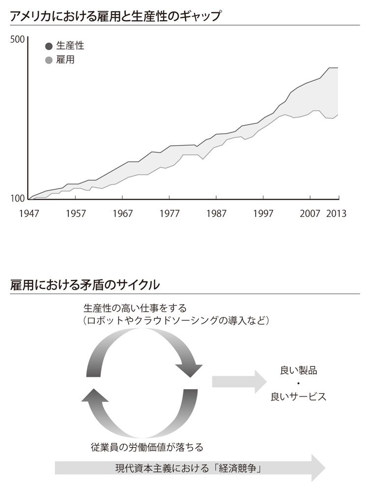

| ワーク・デザイン これからの〈働き方の設計図〉 | |
| 長沼 博之 | |
| (2013) | |
ワーク・デザイン
これからの〈働き方の設計図〉
長沼博之
漫画、小説、一般書籍 RAW ZIP RAR 無料ダウンロード http://13DL.NET
はじめに
私は経営コンサルタントという仕事柄、大企業や中小企業、ＮＰＯ、個人を含め、業界問わず様々な人の話を聞く。それをもとに、業績アップや事業モデルの構築、起業などをサポートするのが仕事である。
しかしここ最近、「いくら最新のテクニックやビジネスモデルの話をしても、結局のところ、問題の本質には向き合えていない」ということに頭を悩ませてきた。「企業vs個人」「経営者vs従業員」「企業vs国家」といった対立軸はますます強まり、あっちを立てればこっちが立たずという状況が、かなり厳しいところまで到達してしまっている。
具体的に言えば、「生産性という側面から企業のために行う施策が、その会社の従業員のためにはならない」という大いなる矛盾である。当然そのような事態は昔からあったのだが、それが、もはや目も当てられないところまで極まっているのが現代なのである。
そうして私は、「自分は一体、誰のため、何のために支援しているのか？」という思いに陥った。コンサルタントとしてクライアントである企業の要望に沿った提案をすべきなのだが、はたして、同じ働く者として、従業員たちの不都合となるような施策を提案することが正しい行為なのだろうか......。
私は、できる限り冷静に現状を見つめることに徹した。そして、現代の雇用・労働をはじめとする様々なシステムや、その根底にあった価値観の賞味期限が切れつつあり、これまで賞賛されてきた「成功事例」「理想の人生」は、もはや過去の遺物になったと確信するに至った。
この事実を受け入れた結果、気付いたことがある。それは、今必要なのは、新しくぽつりぽつりと生まれているコンセプトやシステムを、次の時代の視点で見つめ、社会のビジョンを描きながら、具体的な「これからの働き方」へと落とし込む作業だということである。それをしなければ、本当の意味での全体的な解決策は何も見えなかった。
こうしてたどり着いた答えが、本書である。
「働く希望を再配分する」――これが、本書のテーマである。具体的に言えば、変化の激しいこの時代に、「多くの人にとって実現可能な、より良い働き方」について書いた本だ。
今、私たちは新しい時代の入り口にいる。ふと書店に立ち寄ってみれば、「こうすれば稼げる！」「会社で評価されるには？」といった本が平積みになっている。そうかと思えば、「人類の広大な歴史」について書かれた書籍も目につくところに置かれている。「目先のことをないがしろにすることはできないが、今の状況がずっと続くとは考えられない。だから、過去の歴史に学んで新しい時代への一手を打ちたい」。人々のそんな心の叫びが聞こえてくるようだ。
こうした流れの中でひとつのブームになっているのが、「働き方」に関する本である。しかし、すでに刊行されている本の多くは、一部のエリート層、いわゆる「上位５パーセントの人」に向けたものが多い。「どんな仕事、会社、スキル、職能なら、今後も『ビジネスエリート』として稼いでいけるのか？」といったものである。
今、本当に大事なのは、一部のエリート層になるための方法論などではなく、普通に働く人々にとって実現可能なより良い働き方と、それを支える社会的ビジョンだと私は思っている。
「安定した職」「終身雇用」「十分な年金によって支えられた老後」等々、かつて人々が信じたストーリーは、もはやない。今私たちは、信じるに足る「21世紀の物語」を探している。状況は、思った以上に待ったなしだ。働き盛りの世代は仕事に対するやりがいを感じられず、誰もが今のまま５年、10年、15年と同じように仕事を続けていけるかどうかは分からない。
これは、言葉にして口に出すか出さないかは別として、人々の心に静かにくすぶっている火種である。「思ったようには伸びない給与」「世界との激しい競争」「ますます短くなる企業の寿命」......。どれもピンポイントで見つめようとすると、事態の深刻さに絶望するか、感覚を鈍らせて見て見ぬふりをするのが関の山。
しかし、である。今、徐々にではあるが、21世紀の「働き方の構造」が見え始めている。
リーマンショック、そして東日本大震災によって、私たちはそれまでの価値観に大きな揺さぶりをかけられた。これに覆い被さるようにして、ポスト近代化社会における「21世紀の働くインフラ」が急速に立ち上がりつつあるのだ。ロボットの進歩からメイカーズ革命、クラウドファンディングにクラウドソーシング。何が起こっているのかと言えば、それは、劇的な「ワークプロセスの転換」である。
さらなる進化を遂げるテクノロジーと新たな時代の価値観が出会ったことで、これまで考えられなかった（あり得なかった）ような働き方が可能となった。今、私たちの目の前には、数限りない働き方が存在する。私たちは、自らの働き方を自分で選び、実行していかなければならない。それが、本書の言う「ワーク・デザイン」である。
もうひとつ重要なキーワードとして、新しい時代の働き方には「パラレルキャリア」の考え方が必要になる。これまでのように１つの会社の１つの職を自分のキャリアとするのではなく、複数の仕事・活動をキャリアと認識し、それぞれを同時並行させるのだ。私自身も実践しているし、会社に勤めていても何かしら（会社の仕事以外の）自分の活動を持つ人は増えている。
本書では、このような「新しい働き方の構造」を大きな視点から捉え、様々な実例を交えつつ、読んだ人がより具体性をもって自分の仕事の未来をイメージできるように記したつもりだ。読者の皆さんが自分の働き方を設計する際の参考にしていただければ幸いである。
「働くこと」は、再び私たちの希望となる。
Chapter 1 社会が抱える「働く」の問題点
ロボット革命が仕事を奪う
車は自動操縦で安全に動き、人間の口から発せられる言葉をロボットが正確に理解し、あらゆるサポートをしてくれる――21世紀も十数年を終えた今、こんな誰もが一度は憧れたことがあるＳＦの世界、もっと言えば「ドラえもん」の世界が現実になろうとしている。読者の多くも、スマートフォンのアプリの性能に感心し、テクノロジーの進化を強く実感した経験は１度や２度ではないだろう。広く大衆から小口の資金を集める「クラウドファンディング」と呼ばれるウェブサービスの米大手「キックスターター（Kickstarter）」のサイトには、「絶対に無理だと思うけど、もしあったら欲しい！」と思わせる未来的製品が溢れている。
一方で、次のような本音も見え隠れしている。「このままテクノロジーが進化していくと、現実はどう変わるのだろう？ 困るようなことも起こるのではないか......」
チャップリンの映画「モダン・タイムス」（１９３６年公開）は、仕事の機械化によって人間の尊厳が失われ、機械の一部として働く人間が増える社会を笑いで表現した名作だ。まさにそんな時代が、より高度に現実化し始めているのではないか？ 本章では、そうした漠然とした不安の正体を、具体的な事例を挙げながら探っていきたい。
なお、この本は、多くの人にあてはまる「希望の働き方」について述べたものである。この第１章では現在の問題点を取り上げるため、暗い話のように感じてしまうかもしれないが、徐々に明るい話題となっていくので、信じて読み進めてほしい。
〉〉ロボットが人間を超える日
「シンギュラリティー」という言葉をご存じだろうか。コンピューター研究者であり、未来学者であるレイ・カーツワイル（Ray Kurzweil）によって広がった概念である。彼は、音声認識や光学文字認識など様々な領域で先進的な業績を残しており、１９９９年にはアメリカ国家技術賞を受賞している。現在はグーグルに勤め、同社の人工知能開発の指揮を執っている人物だ。
シンギュラリティーとは、簡単に言ってしまえば、ロボットの知性が人類の知性を超える日のことである（technological singularity＝技術的特異点）。カーツワイルは、それが２０４５年までに訪れるとしている。そして、その序章とも言っていい時代が、この２０１０年代だ。実は、このような時代が訪れることは、かなり前から予測されていた。文明という大きな構造に焦点を当てて人類の未来を予測した、20世紀最大のイギリスの歴史家アーノルド・Ｊ・トインビー（Arnold Joseph Toynbee）は、21世紀のオートメーション化への人類的対応の重要性を語っている。
今、テクノロジーはますます進化発展し、産業が突然なくなったり、新たな事業が急進的に生み出される現実に直面している。その結果、社会には次のような深刻な問いが向けられ始めた――「私たちの生活はどのように変わるのか？」「その生活を支える『仕事』『働き方』は、一体どのように変化していくのか？」。この問いを具体的に考えるために、まずは象徴的な事例をいくつかご紹介したい。
〉〉中小企業でも導入できる格安産業用ロボット
日本でも利用者が増えている全自動掃除機「ルンバ（Roomba）」。掃除の概念を変えたと言われ、世界中で爆発的ヒットを続けている。このルンバを開発したアメリカのロボット工学者、ロドニー・ブルックス（Rodney Brooks）が、２０１２年、新たに「バクスター（Baxter）」という産業用ロボットを発表した。
バクスターは、ラインから流れてくる製品の箱詰めや、製造ラインへ部品を適切に流すといった作業をこなすロボットだ。世界が驚いた最大の特徴は、「感じる力」と「見る力」を持っていることで、人間の脳のように的確な「理解」ができる点だ。つまり、仕事を教える際も、人間がバクスターの手を動かしながら覚えさせる、というやり方が可能なのだ。いちいちプログラミングを書き換える必要がなく、非常に効率的。また、バクスターは表情を持っており、その表情によって、うまく仕事をこなせているかどうかをチェックすることもできる。安全性にまでしっかりと気が配られているので、頑丈な防護柵などは必要ない。
これまでの産業用ロボットというと、１台１０００万円以上するのが当然の世界だった。しかし、このバクスターは、なんと２万２０００ドル（約２２０万円）。週５日１日８時間の仕事を３年間任せるとすると、時給はたったの３５０円という計算になる。当然ながら、福利厚生も必要ない。
バクスターを販売する米リシンク・ロボティクス（Rethink Robotics）によると、販売先としてメインターゲットとなるのは、工場作業員が10～５００人程度の製造業（全米で約10万７０００社）および、従業員10人足らずの企業（同約16万社）とのこと。これらの企業でバクスターが行うことができる作業は、現在80万の人々が担っており、その市場規模は約１６０億ドル（約１兆６０００億円）にも上る。これはただ事ではない。
２０１２年12月時点の日本の製造業の就業者数は、１９６１年６月以来、51年ぶりに１０００万人を下回った。ピークであった１９９２年に比べると、なんと４割も減少している。追い打ちをかけるように、バクスターのようなロボットが、それまで人間が行っていた単純作業を奪うことは間違いなく、大手製造業やその関連企業が、これまでのような大きな雇用を今後も生み出し続けるかどうかは、大いに疑問である。
〉〉ファストフード業界の仕事革命
米サンフランシスコのモメンタム・マシン（Momentum Machines）は、２０１３年１月、ハンバーガーを１時間に３６０個作ることができるロボット「アルファ（Alpha）」を開発したと発表した。１時間に３６０個ということは、10秒に１個作れる計算だ。ハンバーガーのパティとなる肉をミンチするところから、注文に合わせて形を作り、グリルするところまで、すべての作業を機械が行う。トマトやピクルスは、バンズ（パン）に挟む直前にスライスするので新鮮さも保たれるそうだ。
このロボットを導入することで人件費の大幅カットが実現でき、それによって原材料費に２倍のコストをかけられるようになることが、何よりも革命的である。つまり、こだわりの高級ハンバーガーを驚くべき低価格で提供することができるのだ。モメンタム・マシン社によると、さほどスペースもとらず、コストは短期間で回収できるという。これが事実であれば、業界構造を変えてしまうほどの可能性を持っていることが容易に想像できるだろう。
同社は、このアルファによって、アメリカでハンバーガーを作るコスト（年間90億ドルに上る）を、大幅に下げたいと考えているようだ。すでに試運転は始まっており、今後は一部のスタッフもロボットにして、完全自動システムで運営される世界初のハンバーガーチェーンを計画している。さらに、コンビニエンスストアや移動販売車などにも、アルファのシステムを応用する予定だ。
マクドナルドをはじめとする大手ハンバーガーチェーンは、こうした流れをどう見ているだろうか。近い将来、ファストフード店の多くがロボットによって運営される可能性は十分にある。私が最初にこの会社のウェブサイトを見た時、「THE NEXT GENERATION OF FAST FOOD（次世代ファストフード）」という文字が強烈に目に飛び込んできて驚いたが、まさに次世代へ向けた強烈な取り組みといえる。今後の展開に注目だ。
〉〉医療分野の仕事もロボットに代替される
医療分野におけるロボットの活用も進み始めている。病院や薬局のオートメーション化をサポートする「ピルピック（PillPick）」（スイスログ〔Swisslog〕）は、薬剤師の仕事を代替するロボットだ。処方箋どおりに薬剤を調合し、患者ごとに袋詰めして、ベルトコンベアで運ぶという一連の作業を、高速かつ効率よくこなす。
ある統計では、毎年「調剤ミス」によって１００万人以上が被害を受け、７０００人が死亡しているという。しかし、１日１万回の薬剤提供が可能なピルピックの過去データでは、ほぼミスがない。競争が激しくなる一方の病院経営を考えても、給与の高い薬剤師よりも、ピルピックのようなロボットを使おうという判断は当然の流れだろう。
今はまだ大きな病院を中心に導入が進んでいるが、いずれかの段階で、前述の「バクスター」のような低価格のコンセプトロボットが展開され、小さな病院にも導入されていく可能性は十分に考えられる。高給のイメージのある医療業界といえども、これからは決して安心できる状況ではない。
〉〉メディア業界は「コンテンツ自動生成時代」へ
ナラティブ・サイエンス（Narrative Science）という会社がある。２０１０年の創業以来、経済誌『フォーブス』など40社以上にサービスを提供している、アメリカの「コンテンツ自動生成会社」だ。ミッションに「We Transform Data into Story and Insight.（私たちはデータを『物語』と『洞察』に変化させる）」とあるように、ウェブ上の膨大なデータを収集し、独自のアルゴリズムによってニュースや記事などの「コンテンツ」へと自動で作り変えるソフトウェアを開発した。
このようにして生み出される記事は世界中で数を増やしており、「今後１～２年のうちに、報道業界はどこの会社も何らかの自動化戦略が必要になる」との予測すらある。機械（コンピューター）なので、人間のように休憩や休暇をとる必要もなく、記者に代わって猛烈なスピードでひたすら正確な記事を量産し続けてくれる。競争社会の中で、取り入れないデメリットの方が大きいことは、当然理解できる。
また、世界トップクラスのビジネススクール、ＩＮＳＥＡＤのフィリップ・Ｍ・パーカー教授（Philip M. Parker）は、コンピューターに本を執筆させることで知られている。これまでに刊行した本は20万冊以上と言われ（ほとんどが電子書籍）、「地球の歴史上最も多くの本を著した人物」とされている。ナラティブ・サイエンス同様、コンピューターアルゴリズムがインターネット上の情報を収集し、それをもとに原稿をまとめる仕組みだ。目次やレイアウト、注釈なども完全自動化されている（一連の流れを解説した動画がインターネット上にも公開されているので、ぜひ見てみてほしい）。
こうして書かれた本は、買う人が一体どれだけいるのかと首を傾げたくなるようなニッチなテーマが多い。たとえば、「６×９フィート以下の洗浄可能な浴室用絨毯の２００７～２０１２年の市況予想」といった本。ニューヨーク・タイムズは「ワーストセラーを何万と積み上げることで、それなりの売り上げを生む、出版のロングテールだ」と表現している。そして、書籍１冊を作るのにかかるコストはというと、せいぜい電気代が10円か20円という世界だ。
「効率化」「利益追求」を考え続ければ、たどり着くのはまさにここ。変化の激しいメディア業界だが、革命の本流のひとつはここにある。電子書籍は当然のことながら、このような自動ライティング、ロボットライティングによって、近い将来、報道やメディアのあり方、コンテンツの作り方、そしてビジネスモデルが、大きく変化していくことだろう。
〉〉ホスピタリティーの世界にも効率化の波が押し寄せる
次は日本の事例。おもてなしの本場、ホスピタリティーの本流とも言えるテーマパークにも、ロボット化の流れが生まれている。
長く赤字経営が続いていた「ハウステンボス」（長崎県佐世保市）は、総合旅行会社エイチ・アイ・エスの澤田秀雄会長の手腕によって、２０１１年、実に18年ぶりとなる黒字化を果たした。現在は、さらなる攻めの経営を続ける中で、ＩＴを活用して太陽光などの自然エネルギーを効率的に利用する「スマートホテル」を建設する計画がある。
このホテルでは、客室が約１００あるにもかかわらず、常駐する従業員はたったのひとり。掃除から接客までをロボットが行うという。初期投資の建設費や、ランニングコストである光熱費も半分に抑え、なんと３人で５０００円という宿泊料金を目指している。澤田氏はインタビューで、「エネルギー効率と生産性が世界一高いホテルをつくる。抜群に競争力のあるホテルになる」と自信をのぞかせている。
テーマパークという、ホスピタリティーが重要視される場のホテルがロボットで運営される――業界に大きな波紋が広がることは間違いないだろう。
〉〉「機械との競争」について考える
米マサチューセッツ工科大学の２人の研究者、エリック・ブリニョルフソン（Erik Brynjolfsson）とアンドリュー・マカフィー（Andrew McAfee）による『機械との競争』（原題：Race Against The Machine／村井章子訳、日経ＢＰ社刊）は、ＩＴの発展、ロボットの進化が、現実社会にどのような変化を及ぼしているかの研究結果をまとめた書籍だ。２０１１年に電子書籍として自費出版されるやいなや大きな反響を呼び、世界中で各業界・分野に衝撃を与えている。重要なポイントをまとめて紹介しよう。
・歴史を振り返ると、企業が成長して機械や設備を購入する際には、労働者を雇うものと決まっていた。しかし、アメリカ企業はリーマンショック後の大不況が終結しても雇用を再開しなかった。
・今人類が直面している問題の根本的な原因は、大不況でも大停滞でもない。新しい社会システムを再構築する渦の中に人々が呑み込まれていることである。現時点で多くの国家、組織、個人がそれに対応できていない。
・『大失業時代』（原題：The End of Work）の著者である経済学者のジェレミー・リフキン（Jeremy Rifkin）は、高度なソフトウェアによって、いずれ労働者がほとんどいない世界に近づいていくと発言しており、これに早急に対処することが現代の重要な課題である、としている。
・科学技術やデジタル技術の進化のスピードがあまりにも速いため、企業も人間もそれに追いつけなくなった。その結果、多くの人々が取り残されている。この人たちは職を失い、収入を失った。結果、情報革命以前よりも購買力が減ってしまった。
・経済学者のロバート・ソロー（Robert Solow）はノーベル経済学賞の受賞講演で、「人々がより一生懸命働くから経済は成長するのではない。よりスマートに働くから成長するのだ」と述べている。つまり、いかに少ない労働力と資本投下で大きな価値を生み出し続けられるかが重要ということだ。
・私たちが今当たり前のように使っているコンピューターは、情報処理などの仕事に携わる60％の労働者に直接的に影響を及ぼした。これからは、残り40％にも次第に浸食する。
・このまま行けば、世界の労働人口の90％が「負け組」になる可能性がある。
注目すべきは、現代の状況と産業革命期との明らかな違いとして「技術革新のスピードが速すぎる」ことを挙げている点だ。単純に機械が人間の知的労働を代替するだけでなく、労働人口の流動メカニズムが、このあまりにも速い技術革新のスピードについていけていない、という指摘がされている。
次のグラフは、アメリカの雇用と生産性のギャップの推移（１９４７～２０１３年）を示したものである。２０００年を境に、急激にその差が開いていることが見てとれる。

産業革命期の失業や雇用問題というのは、転換期特有のものであり、一時的なものだと言われてきた。産業革命の波が広がる19世紀のイギリスで起こったラッダイト運動（労働者による機械破壊運動）は有名だが、結局、20世紀に入ってイギリス経済が拡大し、失業者は新たな産業に見事に吸収されていった。そうして、「技術革新によって機械が労働者の仕事を奪う」という考え方は「労働塊の誤謬」と呼ばれ、間違いとされるようになったのだ。
しかしながら、現代の技術革新のスピードは加速度的で、それに皆が追いつくように学び続けることは、現実的に不可能になりつつある。たとえば、20年間時計職人だった人が、急にインターネットの世界でマーケティングの仕事をできるだろうか？ 25年間ホテルで接客をしてきた人が、プログラミングで生計を立てられるだろうか？ できないとは言わない。しかし、多くの人にとって、それは簡単なことではない。
下の図は、雇用における矛盾のサイクルである。会社のためにより良く働くという意図で、従業員がテクノロジーやシステムの導入を提案すればするほど、従業員としての自分自身や同僚の労働価値を下げてしまう結果になることを示している。今や大企業だけでなく中小の零細企業であっても、容易に、そして加速度的に、このサイクルを回せるようになっている。むしろ、弱肉強食のグローバル経済競争下でこのサイクルを回さないという経営判断は、今後ますます難しくなっていくだろう。
〉〉機械ができる仕事を人間が行うという「悲劇」
今、日本が抱える問題のひとつに、いわゆる「ブラック企業」の問題がある。従業員をこき使い、労働法をうまくかいくぐりながら莫大な利益を上げているこれらの会社は、「大量採用大量解雇を行う」という特徴を持つ。
人を育てることは会社にとって最も重要な使命である、という考えは、20世紀までは社会の常識であった。しかし、業務の細分化が極限まで進む中、誰にでもできるマニュアル労働が増えていく一方である。つまり、人を育てることを必要としない単純な仕事が、企業内にもどんどん増えているということだ。そうなると、マニュアル通りに働ける人を大量採用して、使える人だけ残し、大量に解雇することが、経営的に合理的な判断となる。また、「体力のある若いうちだけ使って、あとは使い捨て」と考える方が企業にとっては都合がいい（利益が上がる）という状況が、業界を問わず生まれている。
たとえば、具体的な事例としては、ネット通販大手アマゾンの倉庫業務がある。顧客に安く速く商品を届けるために、働き手の管理体制はあまりにも厳しかった。それに対しての批判が相次いだため、アマゾンは倉庫内を自動で動き回るロボット「マジックシェルフ（Magic Shelf）」を導入した。カメラとリアルタイム画像処理システムが搭載されたこのロボットは、物流センター内を自律的に動き回るが、それぞれネットワークで連携されているため、ぶつかることはない。
マジックシェルフを導入した結果、作業効率は２～４倍も上がり、照明器具や冷暖房装置は必要なくなり、人間が働く倉庫と比べて50％もの経費削減が可能になったという。ここに、ひとつの非常に重要な教訓がある。それは、今後人間に仕事を与えるためにロボット化に歯止めをかけると、競争力維持（あるいは向上）の名のもと、人間に必要以上に大きな負担がかかってしまう、ということだ。つまり、ロボットができることを人間がやると、人間がロボットのように扱われてしまうという悲劇が起こるのだ。
私自身にも経験がある。高校を卒業し大学入学までの期間に、ある工場で２週間ほどアルバイトをした。そこでは様々な作業をやったが、マイナス20～30℃の場所で数時間、荷物運びをした日もあった。凍えるような寒さの中で作業をしたのだが、作業終了後、スタッフのひとりに「作業用のジャンパーがあったのに着なかったの？」と言われた。当然そんな話は事前に聞いていなかった。寒さと仕事のいい加減さに衝撃を受けたことを今でも鮮明に覚えている。
また、生卵が入った高熱の鉄板が自動で目の前まで運ばれてきて、それをひたすら順番にかき混ぜる、という作業を数時間こなしたこともあった。極度に蒸し暑い空間で、マスクをし、帽子を被り、全身を作業服に包んでの作業である。集中力が続くような環境ではなく、到底人間が長時間できるような作業ではない。当時の私は、社会人経験はなかったものの、ここでずっと働くことは肉体的にも精神的にも無理だと直感した。このような仕事は、できればロボットに任せた方がいいはずだ。
激しい経済競争下では、機械ができることは機械にやらしてしまった方がいい場合がある。また、現時点ではまだまだ機械の価格が高いので、より費用の安い人間にやらせているというケースが当然あるが、今後のさらなるロボット化、安いロボットの導入によって、このような状況が打破されることは、決して悪いことばかりではないのである。
機械ができることを機械にやらせ、人間は、人間にしかできない創造的な仕事、機転や配慮が必要な仕事をする。これが、これからの働き方にとって大切なことである。
極限的に進みゆくグローバル化
〉〉崩れる比較優位理論
「グローバル化（globalization）」という言葉が使われるようになって久しい。グローバル化を肯定する背景には、あるひとつの理論が存在する。つまり「自由貿易は正しい」ことを証明する理論だ。それは、イギリスの経済学者デヴィッド・リカード（David Ricardo）が提唱した「比較優位」という理論で、簡単に説明するならば、次のようになる。
企業が国際競争を進める場合、当然重要なのは「生産性」だ。つまり、どれだけ効率的に安く商品やサービスを生産できるか。もっと言えば、従業員１人当たりの生産性が、競争に勝つための重要な要素となる。しかし国際貿易では、他国と比べて労働生産性で絶対的優位に立つような産業が自国になかったとしても、不利にはならない、とするのが比較優位理論だ。自国にとって最も生産性の高いものに焦点を合わせた方が、取引を行う上で結果的に優位となるからである。
よく使われる譬えは、「アインシュタインが彼の秘書よりタイピングがうまくても、アインシュタインがタイプしてはいけない」という話。アインシュタインは、研究・理論を発展させることを仕事にし、タイピングは他の人に任せた方がいい。そのほうが、アインシュタインの生産性は高まるし、社会への貢献度も上がる。また、タイピングという労働が他者に生まれるから、皆にとってプラスなのである。
このような理論のもと、誰にとっても利益になるという名目で自由貿易が進められていったのだが、今、その「前提」に大きな変化が現れている。つまり、この比較優位が成り立つには、その国の労働力と資本が国をまたいで移動しないことが条件なのだ。労働力や資本が自由自在に世界中を動き始めれば、誰もが各個人、各企業にメリットのある方を求めて進んでいく。それによって当然ながら、比較優位という状況は崩れ、国益は度外視される。詳しくは後述するが、今ほど人が自由自在に国境を超え、仕事できる時代はない。そして、世界の人々の給料はどんどん均等化していくのである。
〉〉クラウドソーシングを使わない企業は存続できない
「クラウドソーシング（crowdsourcing）」という、現代においてとても重要なキーワードがある。「クラウド（群衆）」と「アウトソーシング（外注）」を組み合わせた言葉であり、企業などがインターネットを通じて、会ったことのない不特定多数の人々（クラウド）に業務を委託することだ。多数の知的労働サービスを安く調達できるとされ、注目が集まっている。たとえばデザインなどのクリエイティブ関連、ウェブのプログラミング、また会計や統計、翻訳や法律の仕事などだ。
そして、いよいよ２０１３年、クラウドソーシングは世界的にキャズムを超えようとしている（「キャズム〔chasm〕」とは、簡単に言えば、先駆的なユーザーと一般ユーザーとの間に存在する深い谷。ここを超えると、サービスは一気に広がる）。２０１８年には、５０００億円を超える巨大市場になると予測されているのだ。
１９９８年に設立された世界初のクラウドソーシングサイト「イーランス（Elance）」が２０１３年２月に発表したレポートによると、フリーランスの数も仕事の依頼も右肩上がりで、特にフリーランスの登録数は、仕事依頼の２倍のスピードで伸びている。同じレポートから、クラウドソーシングを使っている国の上位10カ国を見てみよう。
１位 アメリカ
２位 オーストラリア
３位 イギリス
４位 カナダ
５位 アラブ首長国連邦
６位 ドイツ
７位 オランダ
８位 シンガポール
９位 イスラエル
10位 スイス
やはり欧米諸国が多い。一方、登録しているフリーランスの数が多いのは次のような国々だ。
１位 アメリカ
２位 インド
３位 パキスタン
４位 ウクライナ
５位 イギリス
６位 ロシア
７位 カナダ
８位 ルーマニア
９位 中国
10位 フィリピン
雇用が、知的労働サービスさえ、人件費の安いところへ流れている様子が如実に見てとれる。現代は、仕事や人材を容易に世界から呼び込める状況にある。また、アジアにおいても中国の成長率は著しく、今後もその伸びは加速していくだろう。
アメリカのコンサルティング会社、マッキンゼー・アンド・カンパニー（McKinsey & Company）の調査でも、クラウドソーシング利用によって利益が大幅に上がることが指摘されている。具体的な実例としては、コストが数分の１、場合によっては10分の１以下になることすらあるのが、このクラウドソーシングの世界なのだ。これからは、あらゆる企業がクラウドソーシングの活用に本格的に取り組まなければならない時代へと突入する。
ちなみに日本では、「ランサーズ（Lancers）」（代表・秋好陽介）、「クラウドワークス」（代表・吉田浩一郎）、「ココナラ」（代表・南章行）のほか、ヤフー・ジャパンが運営する「ヤフー・クラウドソーシング」などが存在し、いずれも成長著しい（３章で詳述する）。
〉〉「時給１００円」の衝撃波
世界のクラウドソーシング最大手「オーデスク（oDesk）」の取引総額が、２０１３年８月に１０００億円を超えた。創業以来、急速なスピードで拡大を続けている。実際にオーデスクにアカウント登録して、業者（仕事の依頼者）のカテゴリーを見てみると、ウェブサイト製作やソフトウェア開発、ライティングや翻訳、セールスやマーケティング、そしてデザインや会計、統計まで、あらゆるサービスが幅広く登録されている。
サービスを提供する側（オンラインワーカー）も、その数は膨大だ。たとえば私が検索した時は、翻訳だけで11万５２８０人、そのうち時給５ドル以下で対応してくれる人が３万９２３６人もいた。時給１００円、２００円という人もたくさん存在している。評価の高いレビューが並んでいる人が時給数十円という場合もあり、これは本当なのかと、初めてサイトを訪れた時には衝撃を受けた。オーデスクを利用する日本企業は１５００社以上に上る。
オーデスクは時給型の仕事方法を主流としており、在宅ワークの様子をマウスとキーボードの動きで自動検知する革新的なシステムを採用している。つまり、オーデスクが、その人がどれだけ働いて成果物を出したかを計算するのである。また、オンラインワーカーに対して、会社に勤める正社員と同じような社会保険的支援も行っている。
このような話をすると、クラウドソーシングを使ったことのない人は大きな懸念をもつことだろう。それは、「安全性」と「仕事の質」という問題だ。クラウドソーシングを使い、直接会ったことのない人に、安全かつ質の高い仕事を依頼できるのだろうか？
結論から言うと、私はできると思っている。その理由は、オンラインワーカーは、会社に勤める人よりもはるかに厳しくプラットフォーム上で評価され、それがレビューとして公開されるからだ。つまり、依頼者の厳しい評価のふるいにかかった人が、クラウドソーシングサイトには多く登録されているのである。私自身も実際にクラウドソーシングを利用して仕事を進めており、その良さを痛感している。
携帯電話やスカイプ（Skype）を使った英会話レッスンを提供する「まなび」も、オーデスクを活用している企業だ。代表の大塚雅文氏のブログでは、パキスタン人デザイナーにポスターを発注した時のことが紹介されていた。それによると、ポスターの発注価格は、わずか50ドル。最近では、それまで少なかった英米のオンラインワーカーからの応募が増えているそうだ。しかも、フィリピンやインドといった、労働賃金の安い国のワーカーと同じ価格帯で対応してくれるらしい。
日本人の場合、「英語（や他の外国語）ができないと使えないのでは？」という不安もあるだろう。しかし、今は言語の壁を驚くべき安さで乗り越えることができる。
日本発のサービス「コニャック（Conyac）」は、たった２ドルで日本語２４０文字（メール１通分程度）を最短15分で翻訳してくれるクラウドソーシングサービスだ。コニャックが世界中の翻訳者へつなげてくれ、すばやく翻訳結果を届けてくれる。私も使ったことがあるが、約20分で２人から翻訳結果が届いた。また、スマートフォンにも様々な同時通訳アプリが登場している。完璧ではないが、かなりの精度で通訳してくれるので、仕事を進める上で役に立つ。当然その精度は日々高まるし、対応言語も多様である。
このようなツールを駆使すれば、たとえ英語が話せなくても、国際的なクラウドソーシングに十分チャレンジできるだろう。大塚氏も次のように記している。
「英語を言語ではなくシンプルなコミュニケーションツール（相手が非ネイティブの場合が圧倒的に多い）として使いこなすことが出来ると世界中のタレントにアクセス出来る恐ろしい時代に入っています」
〉〉「ナレッジファンネル」から考える、これからの仕事
次の図は、カナダ・トロント大学ロットマン経営大学院の学長であり、世界的な経営思想家としても知られるロジャー・マーティン教授（Roger Martin）の「ナレッジファンネル（Knowledge Funnel＝知識の漏斗）」の図だ。知識は次のような流れで移動し、仕事（タスク）としての形を変えていくことを示している。
Mysterious（ミステリアス＝神秘的）
↓
Heuristic（ヒューリスティック＝発見的＆パターン認識的）
↓
Algorithm（アルゴリズム＝目的達成のためのシステム）
↓
Code（コード＝単純労働）
この図に当てはめて考えてみると、現代の問題は、アルゴリズム的仕事やコード的仕事が、この情報革命、ロボット革命、グローバル革命の流れの中で減少傾向にあるということだ。言ってみれば、今後私たちはよりミステリアス（神秘的）でヒューリスティック（発見的＆パターン認識的）な仕事を「仕事」として定義していく必要がある。もっと言えば、仕事は、より人間的かつ創造的であり続けなければならない、ということなのだ。
私が運営しているウェブメディア「ソーシャル・デザイン・ニュース（Social Design News）」は、「社会をより良くする近未来インスピレーション情報」がテーマである。近未来的かつ発見的な情報を、スピーディーにざっくりと体系化し、分かりやすく情報発信することを目標としている。つまり、よりミステリアスでヒューリスティックな情報を扱うことを重要視している、と言い換えることができる。それをアルゴリズム（構造・システム）に組み替え、コード（単純認識的）で発信するわけだ。
私は、アルゴリズムやコード的な仕事が減っていくのは、実は喜ぶべきことだと思っている。それは、人類はついに「人間にしかできないこと」「人間の本質に近いこと」を仕事としなければならない時代になることを意味するからだ。
〉〉チェス盤の法則でテクノロジーの進化を思う
仕事柄「テクノロジーのスピードが異常に速くなっていませんか？」という質問をよく受ける。そんな時、よく語られるのが「チェス盤の法則」である。数学の歴史に関する逸話だが、前述のレイ・カーツワイルがテクノロジーの進化を説明するものとして現代に紹介した。
ある男がチェス盤を発明して王に献上したところ、王は大変喜び、褒美は何がいいかと訊ねた。男は、チェス盤の最初のマス目に米を１粒、次のマス目に２粒、その次のマス目には４粒と、前のマス目の倍の数の米粒を置いていき、その合計をいただきたいと言った。王は即座に快諾したが、いざ米粒の数を計算してみると、最後のマス目に置かれるのは２の64乗マイナス１粒という途方もない数であることが分かった（積み上げるとエベレストよりも高くなる）。まんまと担がれたことに腹を立てた王は男の首を刎ねてしまった、という指数関数にまつわる逸話だ。
現代の情報革命は、このチェス盤の半分を超えたと言われ始めている。ちなみにチェスの世界では、もはや人間よりもコンピューターの方が強いわけだが、将棋の世界でもついにコンピューターが人間を超えた。２０１３年４月、コンピューター将棋ソフトとプロ棋士による対抗戦が行われ、３勝１敗１分でコンピューターが勝利を収めたのだ。将棋界のみならず、社会に激震が走った。
「人間とは何なのか」、そんな問いが少しずつ、でも着実に、目の前に浮かび上がってきている。これからの一年一年は、これまで以上の猛スピードでテクノロジーの進化が進むと予想される。私たちは、この鮮烈な問いに真正面から向き合わなければならない時を迎えている。
経済拡張という幻影
〉〉そもそも「成長」とは何か
生産性が高くなればなるほど雇用は減っていく――これまで説明した事例からも分かるのは、そうした現実だ。「グローバル化」と「情報革命」「ロボット革命」によって、人間の仕事はどんどん奪われていく。
そもそも、イギリスから始まった現代の資本主義システムが成り立つ根本条件は何か？ それは「投資したお金が増えていく」ということである。これこそが資本主義の始まりであり、「会社」という法人組織の始まりだ。株式会社は、資本と経営を分離するところから始まる。乱暴に言ってしまえば、「持ち主」と「現場」を分けるのだ。
持ち主である資本家がなぜ会社に投資するのかというと、それが増えて戻ってくる、つまり「リターン」を期待するからである。では、リターンの条件は何か？ 重要なのは、経済が成長していることだ。では、経済の成長とは何か？ それは、実体として人口が増え、需要が増加することである。いくらお腹が減っても、１人の人間に胃袋は１つ。いくらゲームが好きだとしても、１人の人間に与えられた時間は１日24時間と決まっている。つまり、人口によって需要は増減するのだ。
しかしながら、たとえば日本は、２００５年、２００６年をピークに人口は急激に減少を始めている。２０１３年４月の総務省の発表では、１年間で28万４０００人も減っている。中堅都市が丸ごとひとつなくなったほどのインパクトである。しかも、減少幅は今後も年々大きくなっていく。そんな現状で「経済成長を！」と考えた場合、当然、国外の需要を獲得することでしか実現はあり得ない。とはいえ、どんどん力を増している海外との経済競争も、もちろん楽ではない。
その結果、どうなるか？ 企業は、投資してくれる資本家にリターンをもたらすため、需要の増減とは関係のないところで利益を追求しようとする。競争力アップという大義のもと、生産性と効率を追求することによって、人を減らしてでも、どんな手を使ってでも、利益を増やそうとするのだ。
この一連の流れを見ても、既存の社会システムの消費期限が切れかけ、あらゆるところで歪みが生じていることが分かるだろう。つまり現代は、社会の根本構造の転換期なのだ。このような世界で、私たちはどのように生きていけばいいのか、また、どのような価値観で働いていけばいいのかが問われているのである。
〉〉増え続ける「大企業」の存続コスト
大手スーパーのイトーヨーカ堂は、２０１３年度から３年かけて正社員を半分にするという。約１００億円の経費を圧縮し、売上高に対する販売管理費の比率を抑えて店舗運営を軽量化することで、一定の売上高でも利益を稼げる体質になることが目標だ。
一方、日本ＩＢＭの突然の大量解雇が大きな波紋を呼び、ついに訴訟にまで発展した。上司に突然呼び出され、その日の退社時間までに荷物をまとめて会社を出るよう言い渡されるという。仲間への挨拶もなければ引き継ぎさえ行われない、「ロックアウト（lockout＝締め出し）」と呼ばれるやり方だ。また、２０１７年までに全世界40万人の正社員を10万人にまで削減し、プロジェクトごとにクラウドソーシングを積極利用していく、という人事部トップの発言は世界に衝撃を与えた。
ＮＨＫが２０１３年１～２月に行ったアンケートでは、大手企業の73％が、景気の先行きが不透明なことなどを理由に、当面正社員を増やさない方針であることが分かっている。このような状況下で、２０１１年には大学生等の自殺者数が１０２９人、２０１２年は９７１人と、調査開始以来の高水準で推移している。そして、「勤務問題」が自殺理由と見られる人の数は、２０１２年には全体で２４７２人に上っており、「自殺対策白書」をまとめた内閣府は、経済情勢や雇用環境の悪化に伴うマインドの悪化を要因として挙げた。
「世の中をこんなふうに便利に、豊かにしたい！」「社会のこんな問題を解決したい！」「世の中に、自分たちが惚れ込んだこんな製品・サービスを届けたい！」――こう思った時、これまでは「大きな企業に属すること」が効率のいい方法だった。しかしこれからは、そんなに単純ではない。情報革命、ロボット革命によってオートメーション化と効率化がますます進み、人間の数は少なくてもよくなっていく。大企業は国際経済競争の名のもとに「利益最大化」を押し進める傾向が強まっている。
こうした中で、大企業に属さずに個人やチーム、小さな組織、ＮＰＯや社団法人で自分たちの思いを実現しようとする人が増えている。インターネットによって、見ず知らずの人が自分やチームを見つけてくれるようになった。そして、ソーシャルメディア革命によって、そのネットワークを低コストで維持できるようになったのだ。
その一方で、既存の大企業は、人を抱えることによる「スピードの欠如」「コミュニケーションコストの増大」「大きな固定費」がかえって足枷になっている。つまり、存続コストが増大しているのだ。小さな組織やネットワークの方が、巨大なピラミッド型組織よりも優位な点が多々生まれているのである。
そんな話をある経営者にしたところ、「それでは、世の中の人が安心して仕事をできないのではないですか？」と言われた。つまり、「大きな企業という組織でやるからこそ、失敗しても給料をもらえる。それがなければ、なかなか安心してチャレンジできないのではないか？」ということだ。
当然ながら、そういった側面はある。しかし、今伝えたいのは、失敗そのものもローコストになり始めている、という事実なのだ（これについては３章で詳しく述べる）。そして、もうひとつ決定的なのは、「企業がセーフティーネットとしての雇用を守らなければならない」という発想自体が通じなくなりつつあるということだ。存続コストが高くなる一方の大企業には、人件費という固定費が重くのしかかってくるからだ。
〉〉企業が「副業」を支援する時代
公にしていないところも多いが、大企業でも副業の解禁が進んでいる。雇用主である企業みずから、従業員が副業することを認めているのだ。
なかでも面白い事例が、インターネットサービスの「エンファクトリー（en Factory）」（代表・加藤健太）という企業だ。ギフト専門サイト「ＣＯＣＯＭＯ」や、専門家とユーザーのマッチングサービス「専門家プロファイル」を展開するこの会社は、その「人材理念」が非常に興味深い。同社のサイトには大きく次のように書かれている。
専業禁止！ 「生きる力、活きる力」を身に付ける
つまり、自社の仕事だけをするな、ということだ。それどころか、「会社の仕事だけに、長い時間を費やすことはこれからの時代を『生き抜く、活き抜く』には足りず、リスクさえあります」としている。企業に属しているだけでは、現代社会を生き抜くことはできない。だからこそ企業側が率先して、従業員が生きる力を養うことができる環境を整えなければいけない。それが、これからの企業に求められる使命である、ということだろう。
同社はまた、「ローカルプレナー」という言葉をキーワードとして用いている。これは、個人事業主や専門家、あるいは企業に勤めるビジネスマンであっても、セカンドジョブやＮＰＯ活動、ボランティアなどを通じて自己実現を目指す人々を指す造語だ。エンファクトリーは、誰でもローカルプレナーマインドを持っているとして、そんな人々のターミナルになることを企業理念として掲げているのだ。そして、退職して独立する従業員との関係をゼロにせず、その後もビジネスパートナーとして協力し合う、フェロー制度も整っている。
つまりエンファクトリーには、「パラレルキャリア」を全面的に推奨する理念があり、会社の所属を離れた元従業員とも何らかの形で事業的に連携を図っていこうとするこれらの取り組みは、これからの企業と個人の関係性を示す好例と言える。
とはいえ、企業や個人だけでなく、国家の社会保障を含めた社会全体でセーフティーネットを作っていくことを考えなければならない側面はある。この問題は、社会全体の大きな課題であるからだ。文明的構造転換であるがゆえに、政治も含め、あらゆる側面からの対処が求められている。言ってみればこの雇用問題は、「大企業だけ」に責任を押し付けてはならない非常にシビアな問題なのである。
〉〉成長産業はもはや雇用を生まない
ここまで見てきた様々な事例からも分かるが、現代における成長産業は、そもそも雇用を生みにくい。これまでは製造設備を自社で持つことが当然であったから、そこに雇用が生まれた。しかし、現在生まれている成長分野のベンチャー企業は、できる限り仕事を自動化しようとする。グーグルにしても、アマゾンにしても、フェイスブックにしても、コンピューターによって支えられているモデルである。
また、大きな雇用を生むためには、その仕事は、多くの人ができる仕事でなければならない。高度な専門知識を必要とするものではなく、ある程度コード化された単純作業が含まれなければならない。しかし、それらの仕事は、ロボットによってオートメーション化されたり、賃金の安い海外にアウトソーシングされたりしているのだ。
〉〉事業の寿命は短くなり、人間の寿命はますます伸びる
日本経済が安定成長期だった１９８３年、日本経済新聞系列の経済誌『日経ビジネス』が、「会社の寿命は30年」という記事を発表して大きな反響を呼んだ。それが、16年後の１９９９年には「わずか５年」という記事が出ている。そして今や、ひとつの事業は３年前後で寿命が尽きるとさえ言われるようになった。完全に終わるのではなく衰退が始まるという意味では、ピークは１、２年くらいになっているのかもしれない。今後も事業の寿命は、短くなることはあっても長くなることはない。今世紀中にはほぼ「ゲーム」の域にまで極まる可能性が高い。
一方、私たち人間はどうか？ 日本人の平均寿命は、男性79・94歳、女性86・41歳。60歳まで生きる確率は90％以上と言われる。「80歳総勤労時代」とも言われる時代。定年が延びることはあっても早まることはない。もっと言ってしまえば、近い将来には「定年」という概念自体が事実上なくなっていてもおかしくない状況である。そして、私や読者のみなさんが健康的に１００歳を迎える可能性が、かなり高まっているのが現代なのだ。
〉〉「パラレルキャリア」という生き方の必然
今や終身雇用がないのは当然ながら、元気である限り、何らかの仕事・活動を続けていく時代になっている。つまり、本業を１つ持って、生涯それだけをやり続けるというキャリアプランは現実的ではなくなっているということだ。だから「パラレルキャリア」が必要なのである。「パラレルキャリア（parallel career）」は、現代経営学（マネジメント）を発明した、かのピーター・ドラッカー（Peter Drucker）が提案した概念だ。
定年後の生き甲斐としての活動を「セカンドキャリア」と呼ぶことがあるが、パラレルキャリアは、現役のビジネスマンが現在の本業は続けながら、同時に本業以外にチャレンジすることだ。土日に地域のボランティア活動に参加するとか、インターネット上で趣味に関連するショッピングサイトを立ち上げるとか、ＮＰＯを作って地域を活性化させるソーシャルビジネスを始めるといったものだ。
このパラレルキャリアは、「副業」よりももう少し大きな概念を指す。なぜなら、必ずしも「お金（報酬）」だけが目当てではないからだ。自身のスキルの向上や、使命と感じられるような活動に取り組むことをも含んでいるのが、パラレルキャリアという生き方なのだ。
〉〉変化する社会的評価基準
今私たちは、生産性や働き方、創造性といった概念の優先順位や社会的評価を変えなければならない転換点にいる。場合によっては、これらの概念そのものを根本から再構築しなければならない時代が現代である。
これまでは、いかに少ない労力で多くの生産を上げるかが社会の課題であり、企業の目標だった。そのために企業はオートメーション化を進め、自社にとって競争優位なポイント「コアコンピタンス（Core competence）」以外はアウトソーシングする流れを作り上げていった。これ自体は、前述したように、あまりにも非人間的な仕事はロボットにやらせた方がよく、推し進めるべき側面もある。また同時に、どう抵抗しても簡単に止められる流れではない。
しかし、その結果として先進国では、明らかな生産過剰、人員過剰が起こっている。これからは労働生産性だけでなく、人がより多く関わる事業モデルに高い評価を与え、また、従業員の幸福度も重要な指標としなければならない、と私は思っている。さらに、エコの観点から、資源効率などについても社会が評価を与える必要があるだろう。
近年新たに生まれて注目を集めている事業や活動は、「人」が極限的に少ないか、お金になる・ならないにかかわらず「人」が極限的に多く「参加する」モデルだ。ソーシャルビジネスやＮＰＯを含めての話である。これらの事業・活動に対しては、生産性や利益率を追求するだけではない新たな評価基準が必要なのだ。
そして、一部の人にしか縁がなかったクリエイティブな思考が、今後はより多くの場面で重要視されるようになる。「創造性（クリエイティビティー）」がより広い意味で定義されるようになり、人類は、社会や地域における「文化」について強く再考することになるだろう。今、人々は物理的に「欲しいもの」がなくなってきている。一方で、精神的充実をもたらすものへの興味は、ますます高まっている。これまで日陰に追いやられてきた伝統文化や芸術などにも再び陽が当たっていくことだろう。
社会の大変化とともに、企業や活動への評価基準の変化、そして「働く」の定義すら変化している。敏感な人はそれを痛切に感じ、すでにパラレルキャリアを築き始めている。次の時代の足音を感じ、年代を問わず「働く」に対して、いくつもの側面を見いだしながら仕事をしている。名刺を２枚、３枚と持ち歩く人が普通になっているということだ。
このような時代に、「働く」ことの意味を「生活するため」としか捉えない生き方が、はたして通用するだろうか。あなたは、どう考えるだろう？
Chapter 2 21世紀の「価値観」のトレンドとは
「社会貢献競争」という大潮流
〉〉時代の底流をなす価値観の重要性
社会はじわじわと、しかし大きく変わろうとしている。目には見えにくい人々の心理、価値観の変化の大潮流が、世界を突き動かしている――。
大学生であった21歳のある日、私は友人に誘われて、ある企業の社長に面会した。社長は盛和塾１期生。盛和塾といえば、京セラの稲盛和夫氏が創設した経営者向けの勉強会である。１期生のメンバーは、ソフトバンクの孫正義社長をはじめとする若き経営者たち。彼は、その第１期メンバー11人のうちのひとりだった。
彼は、若き日にその塾で何を学んだかを私たちに話してくれたのだ。盛和塾で学んだもの、それは「哲学」だという。というよりも、哲学の修行だったそうだ。「信念とは何か？」「誠実とは何か？」「志とは何か？」といったことをひたすら語り合う道場だったらしい。私は当時、「哲学」や「生きる軸」について考えたことはなく、ビジネスとは戦略であり、戦術であり、商品であると思い、学生時代はずっとそれを学んできた。しかし、その社長は「そんなものではないんだ」と強く言った。そして「働くというのは、生きる哲学をぶつけ続けることなんだ」と叫んだのである。
頭を殴られたような衝撃とは、まさにこういうことだろう。その日から、私は必死に哲学を学んだ。その中で、世の中というのは、その底流には必ず人の思考なり、価値観なり、哲学なりがあることが分かった。そして、それこそが、大きなうねりとなって世界を突き動かしているのだということも、ささやかながらだが感じられるようになった。
つまり何事も、「目の前の事象や出来事」は氷山の一角に過ぎず、その下には「ある時間軸で見た時のパターン」がある。さらにその下には、「そのパターンを作り出している大きな構造」が横たわっている。そして、さらに奥深くの底流には、構造自体を生み出す「集団、個人のメンタルモデル」、つまり価値観や哲学というものが厳然と存在している。目の前の事象を水面の「波」だと考えると、それを生み出す「海底の大潮流」こそが、人々の価値観や哲学であり、それが数々の目に見える社会的現象を引き起こしているのだ。
その後、私は、２００８年に「一般社団法人ソーシャル・デザイン」を設立した。「ビジネスの進化から、社会の進化、人類の進化を描く」を理念に、企業やＮＰＯ、起業家に向けたコンサルティングを通して、社会全体により良いインパクトを与えることを目指している。事業をよりスマートかつソーシャルにする、近未来型の事業モデルの構築をサポートするほか、前述した「ソーシャル・デザイン・ニュース」というウェブメディアの運営や講演・セミナーなども行う。
ある時、家族の絆にフォーカスしたソーシャルビジネスを展開する会社の人と話す機会があった。その会社は、家族の絆を深める素晴らしいサービスを提供していたのだが、なかなか思うように広がっていかない。その方は、「なぜ、これほど人々に必要なものにお金が使われないのか（なぜ売れないか）」という疑問を抱いていた。
こういった場面で、ビジネス戦略やテクニックの話はいくらでもできる。しかし、さらに深い次元で考えるならば、事業といえども、その時代の人々の欲求、そして底流にある価値観を超えることはできない、という根本的な制限があるのだ。だから、ソーシャルビジネスやＮＰＯは、人々の欲求の方向性を変えること、新たな価値観を提示することで新たなマーケットを作り出す、という役割も持つ。つまり、価値観の啓蒙活動がソーシャルビジネスやＮＰＯのひとつの役割なのである。
このような話をすると、「政治的な制限」をかければいいのではないか、という意見も出る。厚生労働省が、食中毒の恐れがあるとして牛の生レバー（肝臓）の提供を禁止したように、政治の力によって人々の価値観を変えるのだ。もちろん、そういったことが必要な場合もある。しかし、歴史を繙くと、法規制だけでは人々を本当の意味で制限することはできないと分かる。１９２０年から１９３３年まで続いたアメリカの禁酒法は、酒の密造や密輸を増大させ、アル・カポネをはじめとするギャングを巨大化させるという結果をもたらした。
規制をかけることも大事であるが、根本的には、その時代の人々の欲求や価値観があらゆる現実を生み出す、という側面を忘れてはいけない。次の世代に誇りを持ってバトンタッチできる社会へ向けて、それぞれの立場でどのような情報を発信し、どのような価値観を提示していくか問われているのである。
〉〉東日本大震災後に定着した「10の意識」
２０１１年３月11日14時46分、私は東京・品川でその地震を受けた。かつて経験したことのない衝撃に言葉を失いながらも、倒れそうになった棚を必死に押さえた。あまりに長い揺れに命の危険を感じ、ビル１階まで駆け降りると、管理人室からテレビの音が流れてきた。我が故郷、東北地方での大地震だと知り、頭が真っ白になった。家族、友人、知人すべての安否を確認するまでに数日かかり、原発事故後は、自宅マンションに家族や友人を避難させた。あれから２年以上の月日が過ぎたが、復興はまだまだこれからだ。
あの震災をきっかけに、社会の価値観は少しずつ変化している。以下に紹介するのは、２０１２年９月に電通総研がまとめた「震災後一年半を経て定着した10の意識・ライフスタイル」。震災１か月後から四半期ごとに計７回行った、生活者の意識の定点観測結果だ。
震災後一年半を経て定着した10の意識・ライフスタイル
①日常生活の中の「ささやかな幸せ」を大事にしたい
②大切なことをよく考え、お金や時間の使い方のメリハリをつけたい
③これまでの常識にとらわれず、想定外の事態への対策をしたい
④無駄を見直し、節約我慢できること、買わずに済むことを考えたい
⑤非日常的な気持ちになれる時間・場所を作っておきたい
⑥節電や節水の工夫を、前向きに家事や生活に取り入れていきたい
⑦家族の絆や身近な人々との絆をいままで以上に重要にしようと思う
⑧節電を意識しつつ、エネルギー生産・供給の体制などを知りたい
⑨できるだけ本質的な情報を自分で見極め、選んでいきたい
⑩「社会に貢献しよう」という姿勢が見える企業を応援したい
また、内閣府が２０１２年６月に行った「国民生活に関する世論調査」によると、今後の生活についての質問で、「これからは心の豊かさやゆとりのある生活をすることに重きをおきたい」と答えた人が64％にまで達した。反対に「物の豊かさ」と答えた人は30・１％だ（次のグラフ参照）。
これらのデータからも、人々の貢献意識がどんどん高まっていることが分かる。このトレンドは、これからもさらに大きくなっていくことだろう。社会の底流にある価値観は徐々に変化し、今後も社会を変え続ける。
〉〉「働く」の３つの価値観
日々、業界問わず多くの方とコミュニケーションをとる中で、感じることがある。それは、現代は「働く」ことに関して３つの価値観の傾向性があるということだ。
１つ目は、「グローバル経済の中で、自社の影響力を大きくしていくことが幸せだ」という考え。中堅企業や大企業に勤めていれば分かる価値観だろう。２つ目は「自分のやりたいことを仕事にしながら、俊敏性を持ち、ネットワークを重視して生きることが美しい」という考え。インターネットにつながれば仕事ができるノマドワーカーや、小さなチームで働くことを嗜好する人は、よく分かるのではないだろうか。そして３つ目が「苦しむ人たちを助けたいという強い思いで、生きる意味と働く意味を一致させたい」という願い。当然、ＮＰＯやソーシャルビジネスで働くことを望む傾向がある。
もちろん、どれが良くてどれが悪い、という話ではない。本業を通して、またパラレルキャリアを通じて、この中の２つ、３つを実現している場合もある。また、置かれている環境や時期によって変わることもある。ただ、これら３つの潮流も、やがては高度に融合していくだろうと私は考えている。認識しておかなければならないのは、時代の過渡期である今、社会にはこのように複数の「働く価値観」が点在しているということだ。これらの多様な価値観を容認し、それぞれを実現するためのソーシャルデザインが今、必要となっている。
〉〉社会の中心的価値観の変化
あらゆるものが証券化され、お金をお金で買うような仕組みが拡大する「金融資本主義」が長く続き、それが空気のように当たり前の存在となった結果、あらゆるものが損得勘定で語られることに、社会は疑問を抱きにくくなっている。仕事においても、プライベートにおいても、また家族関係の中にすら損得勘定が生まれ、暗いニュースの数々が現代の歪みを象徴している。
このように言うと、経済を批判しているように聞こえるかもしれないが、そうではない。損得、つまり経済というのは、ひとつの原理でありルールであるので、なくなるわけではない。しかし、社会がこの部分をあまりにも過大評価してきたのは事実である。その結果、お金になりにくい「道徳的価値」は蔑ろにされやすい時代が続いた。
価値というのは、「お金」に替えやすいものもあれば、替えにくいものもある。たとえば、基本的人権をサポートするようなソーシャルビジネスはお金をとりにくい。人道的にも経済的にもとりにくいわけだ。スポンサーを付ければいいと思うが、こんな時代に簡単なことではない。ここに、ソーシャルビジネス系の事業が難しい理由のひとつがある。
ＮＨＫ白熱教室でも有名な政治哲学者、米ハーバード大学のマイケル・サンデル教授（Michael J. Sandel）の著書『それをお金で買いますか』（原題：What money can't buy／鬼澤忍訳、早川書房刊）にもあるように、「価格を付けた瞬間に失われるもの」は厳然と存在する。今までの経済競争社会においては、「損得」が価値基準の最優先順位であった。しかしこれからは、「善悪」や「好き嫌い」といったものに価値観の重点が置かれる傾向が強まる。
なぜそうなるのか？ 理由のひとつは、テクノロジーの劇的進化により、権力を持たない１人の人間、小さなチームが、社会を、あるいは人類を、混乱に陥れることが簡単にできる時代となっている事実がある。ハッカーが国家や大企業のコンピューターシステムを攻撃するといった事件も、もはや日常のものである。「経済的損得」が一般社会の第一の基準となっていては、一瞬にして人類は危機に陥ってしまうことを、もはや多くの人は気付いているのだ。
〉〉「経済競争」から「社会貢献競争」へ
歴史を振り返ると、日本は、ペリー来航（黒船来航）を受け、抵抗する術もなく開国をせざるを得なかった。そして、世界がどれほど進んでいるのかを調べるために、アメリカやイギリスに視察団を派遣した。その結果、「植民地を作り、そこから安い労働力や資源を輸入し、それに付加価値を付けて海外に高く売りさばく『国家運営モデル』を導入することによって、国は栄える」ということを知るわけである。
そこから日本の軍備増強の動きは加速し、植民地支配の軍事競争にのめり込んでいった。１８５４年の開国から20世紀中盤にかけて、このモデルの主役は「国家」であった。そこから21世紀の初めにかけては、この運営モデルを各企業が主役となって展開し、「軍事競争」ではなく「経済競争」という時代を作っていったのである。
しかし、経済競争時代になっても、根幹には「自分たちの利益のためには他国（他者）から奪うことも致し方ない」という無意識は根深く残った。それは、「自社の継続性、利益最大化のためには、他者の利益を考えることはできない」といった雰囲気が、知らず知らずのうちに空気のごとく肯定されていったからだと言えよう。そしていつの間にか、経済的敗北が国民としての尊厳の失墜までをも意味するようになった。
また、たとえば企業の寿命が10年とするならば、その期間において利益を最大化するという選択肢をとることは、経営的には当然である。
しかし、さすがに私たち人類も「他人の不幸の上に自分たちの幸せを中長期的に築くことは、絶対にできない」ということが分かってきた。地球があらゆる意味でひとつになりつつある今、戦争によって何の罪もない人たちが悲惨な死を迎える様子や、今日食べる物もなく餓死していく人々の姿に、リアルタイムの画像や映像を通じて、あるいは眼前の現実として直面しているからだ。見て見ぬふりをするには、あまりにもその機会が多すぎる。
ＧＤＰや貿易黒字、売り上げ・利益のみを追求する姿勢はもう長く続かないことを、多くの人は直感的に理解している。自国や自社の利益のみを追求する「軍事競争」「経済競争」の時代は過ぎ去り、新たな時代に向けた船出のファンファーレが鳴り始めているのだ。
新たな時代――軍事競争でもなく経済競争でもなく、自分たちの利益のために他者を犠牲にしない時代――私はこれを「社会貢献競争の時代」と呼びたい。
今、「競争」という言葉を嫌う風潮もあるが、競争には大きく分けて２つある。ひとつは、誰かが勝てば必ず誰かが負け、全体としてプラスマイナスゼロになる「ゼロサムゲーム」。もうひとつは、プラスを生み出す「互恵的競争」だ。つまり、「競争」という言葉をどのように扱うかの問題なのだ。もっと言うならば、「何のための競争か」が要点であり、競争そのものは善にも悪にもなりうる。「競争＝悪」とした国家・文明は急速に衰えており、単純に「競争＝善」としてエゴの追求を競争した社会は破綻した。
社会貢献のための競争は「互恵的競争」であり、大いに進めるべきだろう。たとえば「貧困をなくすための競争」「うつ病をなくすための競争」「幸せな仕事を作る競争」であれば、ほとんどの人が賛同するに違いない。様々な世論調査でも「社会の役に立つことがしたい」と答える人の割合は増えている。当然、自分たちが食べていけないようでは困るが、社会への貢献こそが最重要だと考える風潮は強まるばかりである。
「働く」の意味が進化する
〉〉知性は外部化され、倫理は再び内部化される
私たちは、働いて得たお金の一部を税金として納め、それが回りまわって社会保障として使われることを良しとし、それを唯一の答えとしてきた。昔は、年をとった親の面倒は子供がみるのが当たり前だったが、今は、老人ホームや介護施設に入居することは当然の手段。つまり、「親の面倒をみる」という倫理を、どんどん外部化していったのが現代である。
しかし、この「倫理の外部化」が、現在の金融資本主義および貨幣経済の限界により、思うように成り立たなくなっている。これまではお金で何でも解決しようとしてきたが、そもそもお金を稼ぐことが難しくなってしまったのだ。
その結果、私たちは再び少しずつ、倫理を内部化することを迫られている。家族や地域のコミュニティーを高度に復活させることによって関係性を再構築し、21世紀型の幸せな生活について考えていかなければならないタイミングに来ていると言える。町内会の復活や、高齢者の見守り支援、買い物支援などの必要性が高まっているのも、倫理の外部化の限界によるものだと言えよう。
このように倫理が内部化する一方で、「知性」は外部化している。１章で紹介したように、人間にしかできないとされてきた知的労働の数々を、すでにロボットが行っている現実がある。人間しか持っていなかった知性をコンピューターが持ち始め、知識や知恵は、ものすごいスピードで外部化されているのだ。スマートフォンを利用している人なら、日々肌身に感じているのではないだろうか。ちょっと困ったことがあったら、すぐにスマホで調べる。まさに、外部化された知性の象徴だ。
興味深いのは、今、フェイスブックやグーグルのような企業でさえ「Good natured person（いい人、好人物）」を雇おうとしていることだ。つまり、自社の従業員に望むものは「Good」という資質であり、天才的な知能や高度なスキルは、それが必要な時に、世界中の70億人の中から選んでアウトソースすればいい、という考え方だ。
このように、「機能」をアウトソースし、「理念」に共鳴した人と一緒に働くという傾向は、今後ますます強まる。「人間が再び、機能や能力よりも人格によって評価されやすい時代になる」ということなのだ。
〉〉地球上の人々の「脳」がつながっていく
インターネットは最初、「情報へのアクセス」という意味において世界に革命を起こした。ネットスケープの上場に始まり、グーグルが隆盛を極めるまでの期間は、まさにこの「情報へのアクセス」が民主化されていくプロセスだった（ウェブブラウザを世界に広めたネットスケープ〔Netscape〕は、１９９５年８月に株式公開。その日のうちに２倍の値がつき、インターネットバブルの前触れとなった）。
しかし、ここ数年、フェイスブックが世界のインフラとなり、ＬＩＮＥがあっという間に２億人以上の利用者を獲得する中、インターネットの意味の中心は「社会的交流」へと進化している。今後もこの流れは続いていくだろう。そして、インターネット上における社会的交流の成熟の中で、より多くの新しいリアルコミュニティーが世界中に増えていく。ネット上で誕生したコミュニティーがリアルに広がっていくわけだ。
「インフォーグ革命」という言葉を聞いたことがあるだろうか。英ハートフォードシャー大学哲学科のルチアーノ・フロリディ教授（Luciano Floridi）が提唱したもので、「インフォーグ（Inforgs）」とは相互に結びついた情報的有機体を指す。インターネットに瞬時に接続できる私たちは、もはや単体の存在ではなく、相互に結びついた情報的有機体「インフォーグ」になる、ということだ。クラウドコンピューティングによってその土壌は構築されてきたが、グーグルが開発中の「グーグル・グラス（Google Glass）」によって、いよいよ現実のものとなるだろう。
グーグル・グラスはインターネットにつながるメガネ型デバイスで、いわゆる「ウェアラブルコンピューター（身に着けて持ち歩くコンピューター）」である。競合製品も含めると、２０１６年までの出荷数は１０００万台に上るという予測もある。ハンズフリーで写真を撮ることができ、いつでもどこでも自分が見ている風景を動画撮影できる。いちいちスマートフォンを取り出さなくても、地図が自然に視界に現れる。音声でメッセージを作成し、すぐに送信できる。自分の声、相手の声も瞬時に翻訳し、いよいよ言語の壁が崩れて同時通訳社会が始まりそうだ。
さらにグーグル・グラスを使えば、心の中にあるもの、知りたいことなどを、その場ですぐに検索することもできる。それによって、自分の脳とコンピューターの境界は曖昧なものになっていくだろう。また、検索するということは多くの人のマインドとつながることをも意味するため、ある側面においては「自分と他人の境界」すらあやふやになると予測される。グーグルは世界中の情報を整理し尽くし、いよいよこのグーグル・グラスによって、人類の「第三の大脳半球」となろうとしているのだ。
また面白いことに、「エバーノート（Evernote）」も、「第二の脳を作る」というビジョンで開発を続けている。エバーノートは、日常生活における様々な事柄をパソコンやスマートフォン、ウェブ上などに簡単に記録しておくことができるサービスだ。グーグルがアウトプットした情報の記憶と共有を司るものだとすれば、エバーノートは、アウトプットする前の考えやビジョンを記憶・共有する機能を持つ。
グーグル・グラスでエバーノートを動かせることはすでに分かっており、人類の脳、意識層、無意識層がネット上に構築され、その共有によって、いよいよ自分の脳と他人の脳が結合する日が来るのだ。さらに言えば、メガネ型より進化したコンタクトレンズ型のコンピューターの開発も進んでおり、数年内の実用化も視野に入っている。
今地球上にいる70億人の脳がつながるだけでなく、先人たちが苦労して築き上げてきた膨大な知識、知恵さえも瞬時に目の前に現れ、人類の脳が、空間と時間を越えて一瞬でつながる社会となっていく。まさに、人類はひとつになろうとしている。
〉〉これまでの「豊かさ」とこれからの「豊かさ」
このような時代の変化の中で「豊かさ」の定義にも変化が現れている。少し歴史を振り返ってみよう。たとえば、江戸時代の人々が求めた「豊かさ」とは何であっただろうか？ 身分・立場にもよるが、「地位・名誉」「石高（米）」などは豊かさの指標であっただろう。富国強兵へと突き進んでいた時代はどうだろう？ 国家の役職（公的な役職）、食糧、また地域・親戚・家族のつながりが重要だったのではないか。
そして、戦後の経済成長下において、豊かさはどのように定義されていったかというと、それは「お金」「土地・不動産」「株・債券」といったものだった。これらをたくさん持っている人が豊かな人だという認識は、知らず知らずのうちに社会に浸透していった。
では、これからの21世紀の豊かさとは、一体どのようになっていくだろうか。私は次のようになっていくと感じている。
・多種多様な経験（失敗を含む）
・心と体の健康
・尊厳を感じることができるコミュニティーへの所属
・貢献欲求や自己実現欲求を満たすことのできる仕事や活動を持つ
豊かな人間関係を持つコミュニティーに所属し、心身が健康。また、様々な経験をしながら、さらなる自己実現と社会貢献に邁進している――これからは、そんな人が「豊かな人」として社会から認知される時代となるだろう。
〉〉21世紀の仕事の哲学「大衆と共に」
意外にも今、社会的に「仕事ができる」と思われている人たちが苦しんでいる。それは単に、記憶力や論理力、抽象化能力（具体的な事象から重要点や共通点を抜き出す能力）といったものが機械（コンピューター）によって代替され、相対的に重要度が低下していることだけが原因ではない。むしろ、根本的な哲学、その人の中の軸にこそ、原因がある。
それは、「大衆は賢い」という事実から発せられるものだ。有名な話に「フランシス・ゴルトンと肉の重さ予想」がある。フランシス・ゴルトン（Francis Galton）は19世紀イギリスの著名な統計学者で、「優生学」を確立した人物の一人だ。そして、現在の「統計的回帰手法」の生みの親でもある。
１９０６年、ゴルトンはある家畜見本市に参加し、来場者が６ペンスのくじを買っているのを見た。購入者は、くじ１枚につき１回だけ肉の重さを予想できる。そして、正しい重さに最も近かった人がその肉を持ち帰れる、というものだった。ゴルトンはハズレ券を集めて帰り、その予想の精度を調べてみた。平均的な人間を見下していた彼は、きっと、どれもでたらめな予想だろうと思っていた。「精肉業者もいたから、まともな予想も多少あるだろうが、ほとんどは適当で、惜しいのもただの偶然に違いない。優勝した乾物屋は、たまたま運のいい人間だったのだろう」と彼は思っていたのである。
正解は１１９８ポンドで、優勝した乾物屋の予想は１１７０ポンド。しかし、ゴルトンが分析した計７８７票の予想は、中央値が１１８９ポンド、平均値はなんと１１９７ポンドであった。つまり、どんなに詳しい人（精肉業者など）の予想よりも、集団の平均値の方が正解に近かったのだ。ゴルトンは、この結果に衝撃を受けた。そして、こう考えるようになった。「あることを予想する際、その対象について詳しい人が少人数しかおらず、ほとんどの人が無知だったとしても、『大衆』の予想はどんなに詳しい『一人』よりも正確になるのではないか」
こうして大衆の方が賢いと結論づけた彼は、貧しく学歴のない、平凡な人々に対する考えを改めた。そして、教養のある人々や社会的に成功者と言われるような人々だけが投票する制度よりも、全員に同様のチャンスがある「民主主義」の方がより良い結果をもたらす、と考えるようになった。そして、社会のあらゆる判断において全員が参加するべきであるという彼の主張が、現代民主主義の起点のひとつとなったのだ。
現代の経済社会においては、「仕事ができる人が、人間的にも偉い」という価値観が根深く存在している。人一倍努力できる力は、もちろん素晴らしい能力だが、だからと言って人間として優れているかは分からない。少なくとも十分条件とは言えないだろう。また、「セルフイメージを高くせよ」というメッセージがあちらこちらで発せられ、自己成長というよりも「自己膨張」を良しとする風潮すらある。しかし、その背景には「エリート主義的」「選民思想的」な「我、選ばれし者なり」という時代遅れの哲学が内包されていることを忘れてはならない。
こうした空気に敏感な情報社会の大衆は、傲慢さをひとつの力と勘違いした自己膨張的な人間を支持しなくなっている。「裸の王様」だと見抜いているのだ。これは、ソーシャルメディアでも明らかな傾向性として見てとれる。つまり、そのような人間にはフェイスブックの「いいね！」は集まりにくくなっている、ということだ。
では、一体どのような軸、どのような哲学で、この先の人生に臨めばいいのか？ それは、「我、大衆の一員なり」ということに誇りを持つことである。大衆とともに歩み、地域の人から慕われ、社会のため、コミュニティーのために泥を被る（不利を承知で引き受ける）ことができる器を持った人間。このような人こそが、これからの時代には支持を集めるだろう。
〉〉社会的成功者が広め続けた「通俗道徳のワナ」
この問題は、もっと言うと、20世紀から数多く出版されてきた成功法則本や自己啓発書に対する反動が、ひとつの大きな原因だと私は思っている。
多くの自己啓発書では、「好きなことをしていれば努力は必要ない」「若いうちから楽に儲けることがいかに大切か」といった著者の自論が展開され、そうした言葉の背後には、それができない人間は負け組である、という雰囲気が漂う。しかし、それはあくまで著者自身の理想であり、普遍性に乏しく、そもそも長期的視野に立てばむしろマイナスになってしまうものも多い。このような本は、読者からすると「良いことを学んだ」と希望を持てるような気もするが、同時に、なぜか大きな失望感も味わう。このことは、歴史学者であり、民衆思想史研究の第一人者である安丸良夫氏の言葉にも象徴されている。
「こうして、成功者たちは、道徳と経済の、そしてまたあらゆる人間的領域における優越者となり、敗者たちは、反対に、富や幸福において敗北するとともに道徳においても敗北してしまう」
（『日本の近代化と民衆思想』平凡社刊より）
成功者は人格者であって、成功していない人は人格者ではないという社会的雰囲気。これを安丸氏は「通俗道徳のワナ」と呼んだが、現代はまさにこの状況にはまっている。社会的に力を持った人が、これを知ってか知らずか主張することにより、多くの人を「自分はダメな人間だ......」と卑屈にさせる時代が、あまりにも長く続いた。
また、これは私がこれまで長く注視してきたことなのだが、社会的にそこそこの評価を受けたことで、「我偉し」という自己評価を下した人間は、人生の集大成たる晩年において苦労するケースが多い。しかしながら、こうしたことは世間ではなかなか語られることはない。
今や、この20世紀型の「我、選ばれし人間なり（エリートなり）」という価値観を自身の背景に据えていては、大衆の共感はとても得にくくなりつつある。リアルでも、ソーシャルネットワーク上でも、コミュニティーはより細分化されながらまとまる傾向がある。人々は、特別な人に憧れて卑屈になるよりも、より身近な人とコミュニケーションを取り、その人たちに貢献する生き方を選択しているのだ。
この社会的価値観の変化は強烈だ。長年私たちは、自分が一部の〝できる人間〟になることが大切だと刷り込まれてきたわけだが、それを突然、「大衆として誇りを持つことが一番なのだ！」と言われても、現実的にはなかなか順応できない。「それって『負け組』になれってこと？」と、そもそもイメージが浮かばないのである。ここに、「仕事ができる」と言われる人たちが苦しんでいる哲学的背景が存在する。
自分が置かれているのがどんなに良い状況だろうと、どんなに悪い状況になろうとも、それはひとつの波にすぎないと理解し、仕事においても、地域においても、群衆の中に泥まみれになって入り込み、謙虚に人間を磨く――それこそが、今多くのビジネスパーソンにとって大事なことと言えるのではないだろうか。
〉〉「管理」の衰退と、これからのリーダーシップ
ここで、会社における「管理職」が生まれた背景について記しておきたい。
そもそも「管理」とはいつ生まれたものなのか。それは、18世紀のイギリス産業革命期である。分業制が進んでいった時代、一人当たりの作業を絞り込むことで熟練度を上げ、生産性を高めていった。そうして大量生産時代に突入していくわけだが、一方で、分業が進めば進むほど必要な「情報」が全体に共有されなくなっていく。
その問題を解決するために「管理」が導入されたのである。しかし、あまりに効率的な管理が行き渡った結果、人間同士の関わりは少なくなった。職場においても、社会においても、殺伐とした空気が広がり、人と人との心は切り離される傾向を強めていったのだ。
私たちは、豊かな社会の実現のため、会社の利益のために、最大効率で最高の製品を作ろうと、ただひたすらに突き進んできた。そんな中で、いつしか働く人間は抽象化され、労働者は会社の「機能」として機械と同じように管理されるようになったのである。
しかし、こうした管理体制にも限界が見え始めている。管理さえすれば価値を創造できるかというと、現代はそうではなくなりつつある。むしろその逆のベクトルの「創造性」こそが大切だ、という認識はすでに多くの人が共有している。「管理」そして「効率」が、なんだか格好悪く聞こえてしまう時代に、私たちは生きているのだ。
また、そもそも管理の誕生の背景にあった「情報の共有」という側面から見れば、この高度情報化時代においては、管理職は少なくても十分に情報共有は可能である。つまり、リーダーの根本的な役割が、会社においても変化しているということだ。
主張が強く、先頭に立って人を引っ張り、論理的で、人を説得する力に長けている――そういった素質が必要な状況も当然あるが、どちらかと言えば20世紀型のリーダーシップで、平常時には機能しにくくなっている。そうではなくて、話をよく聞き、人の心を大切にし、ファシリテーター（進行役）やカウンセラー、あるいはセラピストとして、人の力を引き出すことを役割とするのが、21世紀のリーダーシップなのだろう。
〉〉社会が評価する５つの価値観基準
次の社会、あるいは「事業」「働き方」という概念を考えていった時、これからは５つの価値観が基準となり、それによって多くの物事が社会的に評価される雰囲気が高まっていくだろう、という結論に達した。
１つ目は、「長期的な視点を持っているかどうか」。分かりやすく言えば、「現在」だけでなく「未来」を良くしていくかどうか、という点だ。もっと言えば、未来の子供たちに借りを作らないようにするということ。これからはますます「自分の子供、孫にどんな社会をプレゼントしたいか？」という観点から物事を考える雰囲気が高まっていく。
前述したように、企業の寿命が７年、５年と短くなってくれば、企業は当然、その期間において利益の最大化を図る。この状況が続いた結果、分かっているのに、なぜか自分たちが望まない社会を創造し続けてきたわけだ。現在の「社会保障問題」「環境問題」から考えても、この近視眼的な「今だけ」「せいぜい数年」という価値観では、社会的な信用や評価は得にくくなる。これは、現代企業の限界点のひとつとして、厳然と現れている部分でもある。
２つ目の基準は「自分だけ、または関わっている人だけでなく、『他の人』も幸せにするという視点を持っているか」。人間の成熟を計るひとつの基準は、自分だけ、家族だけでなく、他人、社会、地球を自分の運命共同体として認識できるようになったかどうかだろう。
たとえば、環境や社会に配慮された商品を購入する「エシカル消費」や、発展途上国などで作られた作物や商品を適正な価格で継続的に取引する「フェアトレード」などは、まさにそうした認識から生まれたものだ。自分だけ、自国だけが幸せになればよいのなら、自由な消費活動で、自由な貿易で十分だ。しかし、それではダメだと思う人が多くなっている。自分たちが暴利を貪る時には、必ず誰かが貧困に喘いでいることに、大衆は心を痛めるようになっている。
世界の総人口のうち豊かな生活をしている高所得者層の割合は、18世紀の産業革命以降、15％前後で変化がない。どこかが資源を安く提供してくれることによって豊かな生活が成り立っている側面があることを、もはや人々は無意識のうちに分かってしまっているのだ。
続いて３つ目の基準は「差別がないかどうか」。「エリート」と「一般」、「金持ち」と「貧乏人」、「日本人」と「外国人」......等々、差別的な現状を打破するための価値観がますます支持を集めるだろう。「お金を持っている人が偉い！」「地位のある人が偉い！」「日本人が偉い！」という価値観は、もはや古いだけでなく、格好悪いと思われるようになる。つまり、差別を許容するような価値観は評価されないのだ。
釈迦は、人間の「差別を生む心」を人類の心に刺さる一本の矢に譬えたが、地球がひとつになろうとしている現代、いよいよ私たちは、この矢と決別するべき時を迎えている。
４つ目の基準は「個人の可能性をどこまでも最大限に活かそうとするか」という点だ。たとえば「組織」という存在。軍事競争下、政治競争下、経済競争下において、組織は個人を利用するという側面を持っていた。「個人のための組織」ではなく「組織のための個人」という悲しい状態が長く長く続いてしまった。読者もよく分かっているように、その歪みは余りにも大きい。
しかし、現代の潮流の本質は、どこまでも「個人」に力を与えていくところにある。「組織は個人のためにある」という価値観、文化がそこにあるかどうかで、社会的評価の色合いも変わってくるだろう。
そして最後の基準は、「抽象論や観念論ではなく、明確な方法論、手段を提唱し、現実を変えているか」という基準だ。どんなに口だけで「良い」「オススメ」と叫んでも、議論のための議論のように、言葉を弄ぶだけでは価値は小さい。「行動」「実行」こそが大事なのだ。よって、あらゆる場面で「行動における結果」が評価の対象となっていくだろう。
〉〉「働く」は一体どこへ向かうのか？
人類は、生産性を高めることによって進化の道を歩んできた。「飢え」は今よりはるかに身近なところにあり、より効率的に獲物を捕まえたいから、矢じりや弓を発明した。もっと効率的に食糧を確保したいから、農耕、畜産技術が発達した。産業革命も同じである。
「エンターテインメント（娯楽）」はかつて一部の貴族や金持ちたちの特権であった。20世紀初めまで、多くの国の一般庶民は衣食住を満たすことに必死で、娯楽にお金を注ぎ込むなど、到底できなかった。しかし、産業革命の波が世界に広がる中で、農業や工業の分業が進み、あらゆる分野で生産性が向上した。その結果として、多くの庶民も余暇を確保できるようになったのである。サッカーやゴルフなどのスポーツは、産業革命期のイギリスで娯楽として成立した背景がある。ちなみに日本で娯楽産業が市民権を得たのは、戦後のこと。つい数十年前だ。日本中が興奮したビートルズの来日は、まさにその象徴だった。
生産性の大幅な向上は、人類を新たな段階へと引き上げた。しかし、結果として「大量消費によって経済を成り立たせるため」の「雇用」という概念を生み出し、残念ながら、昔ながらの「働く」こととは意味が大きく乖離してしまったのである（「働く」の語源は「傍を楽にする」こと、つまり「周りに貢献する」ことと言われる）。この、産業社会・消費社会を成り立たせるための「雇用」という位置づけは、ここにきてあらゆる側面から限界を迎えている。これまでの「雇用」＝「働く」という図式が、世界的に崩れ始めているのだ。
それでは、ロボット化、情報化という現代の超効率化の流れは、我々を一体どこに連れていこうとしているのか？ それは、他者へのリアルな貢献と、自己実現がエネルギーとなる社会である。
〉〉働くことの根源的エネルギーは、自己実現欲求と貢献欲求へ
古来、若者という存在は、「最近の若者は......」と揶揄される対象であり、一方で、新しい時代を先駆けるという役割も持つ。
今の若者は「車や時計に興味を示さない」「お酒を飲まない」と言われ、「元気がない」「積極性に欠ける」などと批難されている。一方で、フェイスブックやＬＩＮＥを筆頭に、コミュニケーションにかける時間やお金の割合は大きい。今の若者は、多くの時間とお金とエネルギーを、人とのつながりに投資しているのだ。これは一体、何を意味するのか？
心理学者のアブラハム・マズロー（Abraham Maslow）は、人間の欲求を、「生理的欲求」「安全の欲求」「帰属の欲求」「尊厳の欲求」「自己実現の欲求」という５段階のピラミッド構造として説明した。人は、低階層の欲求（生理的、安全）が満たされると、より高次の欲求（帰属、尊厳、自己実現）を求めるようになる、というのだ。
この考え方で今の若者たちを見てみると、「生理的欲求」や「安全の欲求」よりも、明らかに「帰属」や「尊厳」を強く求めている。つまり、「生存」という動物的本能よりも、人間としての「尊厳の維持」を優先しているとも言えるのではないか。フェイスブックの「いいね！」などは、まさに、人に褒められることの少ない現代人の「尊厳欲求」を満たしてくれるコミュニケーションサービスであったわけだ。
しかしながら、若者が少し早く時代に適応しただけのことであって、この流れはもはや全年代層に拡大しようとしている。我々には労働の権利があり、その目的は「生存」とされているが、単に「生物としての生存」のために働くのではなく、「人間としての生存」のために働きたいと願っているのではないか。つまり、より良い人間関係の構築をベースとして、自分の持つ能力や可能性を最大限に発揮するという「自己実現」、そして、他者への直接的な「貢献」、さらに「公益」「社会貢献」を求めて働く時代へと移行しようとしているのである。
Chapter 3 「働く」の構造はこう変わる――これからの起業と事業のコンセプト
新しい働き方のインフラ
〉〉20世紀と21世紀の「働く」の全体像
ここからは、より具体的に「働く」の構造がどのように変化していくかを考えていきたい。消費社会から生産社会へ。20世紀の仕事のインフラから21世紀の仕事のインフラへ。また、タスクのあり方の変化と個別スキルの変化について具体的に取り上げる。次の図は、それらの全体像を示した図だ。
現在、私たちが経験している21世紀の文明的転換期には、ポスト近代社会におけるコンセプト、システム、インフラが生まれている。これまで常識だと思われてきたシステムが現実と徐々にかけ離れ、新しいシステムが雨後の筍のように生まれ、急拡大しているのである。
そして、それらは時代を消費社会から生産社会へと動かす。消費社会とは、一言で言えば大量生産・大量消費によって経済を回し、人々の欲望を満たそうとする社会であり、一方の生産社会とは、皆が主体者、生産者となって経済を育み、自己実現や貢献欲求をベースに動いていく社会のことである。これからは、これまで消費の拠点と言われていたような場所が、ことごとく生産の拠点としての側面を有していくだろう。
しかし、今生まれている様々な新しいインフラは、これまでの「経済成長」「経済競争」という視点からのみでは、なかなか目に見えにくい。当然、個々は「経済」に大きな影響を与えるわけだが、それはあくまで副産物でしかない。それぞれを単なるベンチャービジネス、スタートアップという文脈から読み解こうとすると、本質を捉えきれないのである。これらのシステムを「21世紀の価値観」、そして「次の時代の働き方」という視点で見ていくことで、システムの本質を初めて捉えられるのだ。
詳しくは後述するが、今は、明治維新から明治初期の時代と同じ様相を呈している。この時期には、水道や電気、銀行や大学など、私たちの生活や仕事に必要な近代のインフラが多数生まれた。現代は、ポスト近代化社会のインフラとも呼べるシステム、サービスが生まれており、これが21世紀の働き方のベースとなる。つまり、ワークプロセス自体が、これらのインフラによって進化しようとしているのだ。
この章では、そういった視点から、「仕事の未来」に大きく影響を及ぼすコンセプト、事業モデルなどを具体的に紹介する。
〉〉働き方を変える「21世紀のインフラ」が続々登場
現在、経済の中心のひとつとなっているインターネット事業の第一世代は、ソフトバンクの孫正義氏を代表とする世代だ。そこから、第二世代の藤田晋氏（サイバーエージェント）や堀江貴文氏（元ライブドア）、そして第三世代（１９７６年前後に生まれた人が多いため「世代」とも呼ばれる）のグリー田中良和氏やミクシィ笠原健治氏へと続いた。彼らを、20世紀型のパワーによってビジネスを押し進めた勢力と捉え、あえて１５０年前の江戸時代の徳川勢力に当てはめてみよう。
すると、この徳川勢力へのアンチテーゼとして、「82世代」（１９８２年前後生まれの世代）が登場する。社会起業家の第一世代だ。マザーハウスの山口絵里子氏や、かものはしプロジェクトの村田早耶香氏、フローレンスの駒崎弘樹氏などが挙げられる。彼らはまさに維新の志士。既存の価値観に疑問を呈し、人道的活動によって時代を引っ張る。昨今、社会起業家は政治起業家として進化すべき、という議論が沸き起こっていることも偶然ではないだろう。
そして、この次に来るのは、インフラ事業だ。明治時代であれば、第一国立銀行（現みずほ銀行）の初代頭取であり、日本実業界における明治・大正期最大の指導者である渋沢栄一や、三菱財閥の創始者、岩崎弥太郎。彼らは、銀行、鉄道、水道、ガスなど近代国家のインフラを担う企業を数多く作り出した。また、大学もこの時期に多く生まれている。
次の図にも示したように、現代を当時の流れに当てはめてみるならば、「21世紀のインフラ」とでも呼ぶべき新たなサービスが、続々と急速に立ち上がっているのである。クラウドファンディングは「21世紀の金融インフラ」、クラウドソーシングは21世紀の「労働インフラ」、インターネットによって限りなく安く、場合によっては無料で高度な講義を受けられるオープンエデュケーションは「21世紀の教育インフラ」だ。これらは、私たちの「働き方」を大きく変える。
明治時代は、今や「生活インフラ」と言えるほどに浸透した事業の起業ブームがあった。サントリー、ＮＥＣ、東芝、森永製菓、資生堂などの多くの企業が、この時代に創業されている。今、私たちは「21世紀のインフラ」という側面から、社会に必要とされる製品、サービスを開発、提供するタイミングに差し掛かっている。同時に、これらのインフラを使うことを前提に、自分たちの働き方を再考する時を迎えている。
そして、これら21世紀版モデルは、貨幣資本や規模を背景にひとつの法人が巨大な力を持つというような、これまでの流れとは根本的に異なっている。こうした21世紀型の新たなインフラは、個人やチームにとっての「新しい働き方のインフラ」なのだ。これらを活用することで、私たちは、新しいワークスタイルを少しずつ採り入れるべきタイミングに来ていると言える。
次項からは、この21世紀の働き方を支えるインフラ、コンセプトを具体的に見ていこう。
メイカーズ革命――誰もが生産者になる
〉〉世界に広がる「メイカーズ・ムーブメント」
２０１２年に刊行されたクリス・アンダーソン（Chris Anderson）の新著『ＭＡＫＥＲＳ』（関美和訳、ＮＨＫ出版刊）は、世界中に大きな衝撃を与えた。クリス・アンダーソンと言えば、日本でも大きな話題となった『ロングテール』（篠森ゆりこ訳、早川書房刊）や『フリー』（高橋則明訳、ＮＨＫ出版刊）の著者でもある。
しかし、メイカーズは、ロングテールやフリーどころではない衝撃的な変化を取り扱った。それは、「個人やチームから起こる産業革命」だ。私たちは今、日本最大の産業である「製造業」のあり方が変わる瞬間に立ち会っている。それを詳細にレポートしたのが本書である。
今、世の中で目にする多くの「モノ」は、大量生産モデルによって作られている。大量生産モデルとは、簡単に言えばこういうことだ――部品を「規格化」し、工場で大量に生産する。従業員の熟練度を素早く上げるために仕事を「単純分業化」し、人が少なくてすむよう機械的な「自動化」を推し進める。そして、通信ネットワークによって、それらの作業を「連携化」し、同じ製品を大量に作り上げていく。身近にある家電やインテリア、キッチン用品なども、ほとんどはこのようなプロセスで作られている。
しかし、この製造モデルが今、進化しようとしているのである。『ＭＡＫＥＲＳ』で述べられている重要なポイントは次のようなものだ。
・３Ｄプリンタやレーザーカッターの技術進化、少ロット生産請負業者の出現で、誰もが製造業の起業家になれる時代になる
・デスクトップ・マニュファクチャリングによって人々に生産手段が行き渡り、草の根のイノベーションが可能になる
・インターネットにより、少量生産でも経済合理性を確保できるため、人間の多様性に見合ったモノが発売されるようになる。その結果、大ヒット作による独占は終わり、モノのロングテールが実現する。これが人々の幸福へとつながる
・本物のニーズ「１万個市場」は魅力的。充分に商売が成り立つ市場規模だが、規模が大きすぎないので、専門性を維持しながら激しい競争を回避できる
・世界のサプライチェーンが個人に対応できるようになりつつある。ＣＡＤプログラムからクリックひとつで、世界中の工場を利用できるようになる
３Ｄプリンタとは、通常の紙などの平面に印刷するプリンタに対して、３Ｄデータを元に立体物を造形する機器のこと。実はもともとあった技術だが、ここ数年で驚くほど価格が下がり、機能も上がってきている。この流れを捉えて、アメリカでは、デジタルファブリケーションを推進する市民工房を全国に作る法案が議会に提出された。
「デジタルファブリケーション（Digital Fabrication）」とは、３Ｄプリンタやレーザーカッターなどのデジタル工作機械からデジタルデータを出力し、実物を成形することである。この法案の目的は、学生への教育、そして市民が自身のアイデアをカタチにすることを支援することだ。これよると、国民70万人に１つの市民工房を設置する計画だそうだ。ちなみに、上海はなんと23万人に１つ、工作機器を置くスペースを確保するために動いている。
３Ｄプリンタ等を使うデジタルファブリケーション革命は、現時点で様々な方向に派生している。そのひとつは「一人メーカー」。一人家電メーカーとして注目を集め、ＬＥＤデスクライト「ストローク（STROKE）」でグッドデザイン賞を受賞した「ビーサイズ（Bsize）」（代表・八木啓太）が、まさにそうだ。プロトタイプの製作にデジタルファブリケーション機器を利用しており、町工場との連携を計りながら商品を開発している。
２つ目は、中小零細企業の製造業がデジタルファブリケーション等を取り入れて自社製品を作ったり、オープンファクトリーとなって一人メーカーなどのベンチャーと組んでいく方向性。
そして３つ目が、コワーキングスペース×デジタルファブリケーションで、コミュニティーからチームを作り、プロダクト開発および製造メーカーとして組織化する、という流れだ。コワーキングスペースとは、人と人をつなげる、コラボレーション環境が整った共同の仕事場のこと。現在はどちらかというと、ウェブ関係の仕事をしている人が多いが、「モノづくりをする人（メイカー）」も積極的に参加できるようデジタル機器を導入する流れも進んでいる。何かモノを作ることを仕事としてみたいと考えている人は、このような場所に所属してみるのも選択肢のひとつだろう。
コワーキングスペースの運営に関しては、中小企業でも、ＮＰＯでも、個人でも、場合によっては自治体でも構わない。このような場所を支援するために、国や地方自治体は「場所」の提供、また「デジタル工作機械導入の資金助成」を積極的に行っていくべきだろう。米オバマ大統領は２０１２年の初め、今後４年間で１０００の学校に、３Ｄプリンタやレーザーカッターなどのデジタル工作機械を完備した「工作室」を開くプログラムを立ち上げた。また、３Ｄプリント技術を研究・発展させるための機関の設立も発表した。
一人でモノづくりを始めるという意味では、日本のハンドメイド業界は４０００億円市場とも言われており、そこに携わっている人たちにも、新しいチャンスが訪れることは間違いない。自分がもともと持っているハンドメイド技術に３Ｄプリンタ等のデジタルファブリケーションを加えれば、さらなる付加価値（のある商品）を生み出すことが可能になるだろう。
とはいえ、たった一人、個人で「家電メーカー」というのは、若干敷居が高い部分もある。モノのデザイン、機械的な設計、マーケティング、資金調達、インターネットに関する知識など、すべてが必要になるからだ。しかし、もしコワーキングスペースに所属し、３Ｄデータの作成やデザイン、機械設計、インターネットマーケティングを学ぶことができたらどうだろう？ コミュニティー内の何らかのチームに所属し、自分の得意なところでプロダクトの製造・販売に貢献できたらどうだろうか？
これらのモノづくりのプロセスを多くの人が経験できたなら、個人にとってはもちろん、日本社会にとってどれだけプラスになるだろうか、と思うのだ。
〉〉家庭用３Ｄプリンタで何を作りたい？
ＩＴ専門の調査会社、ＭＭ総研と国際大学グローバル・コミュニケーション・センター（ＧＬＯＣＯＭ）が、２０１３年１月、「３Ｄプリンティングの消費者潜在ニーズ調査」を実施した。
これによると、「３Ｄプリンタでオリジナルなモノを最初に１つ作るとしたら？」という質問に対して、１位が「オリジナルインテリア・生活雑貨・食器」（32・７％）で、２位は「好きなキャラクターや人物のフィギュア」（17・７％）、３位に「オリジナルガジェット小物を製造（スマホケースやヘッドホンなど）」（16・２％）と続いた。ちなみに、私が今使っているｉＰｈｏｎｅケースも、３Ｄプリンタで作ったものだ。
また、「写真やビデオをもとに３Ｄプリンタで立体造形を作るとしたら？」という質問に対しては、１位「家族・子供・親友との大切な写真」（20・８％）、２位「好きな車・建物・鉄道などの写真模型」（18・２％）、３位「思い出の風景や景観の写真」（17・８％）となっている。
今や一家に１台はある家庭用プリンタが普及したのは、「年賀状」というキラーコンテンツが存在したからだが、「３Ｄプリンタが普及するためのキラーコンテンツは一体何なのか？」というのがひとつの大きな話題であった。しかし、先日、アメリカで発表されたばかりの世界初のフルカラー３Ｄデスクトッププリンタ「ボットオブジェクト（botObjects）」を、私が運営するウェブメディアで紹介したところ、その記事へのアクセスが殺到した。
つまり結局のところ、一番大事なのは、キラーコンテンツというよりも「安価なフルカラー３Ｄデスクトッププリンタ自体」なのかもしれない。趣味・嗜好がこれだけ多様化している現代、何を作りたいかは人それぞれだが、安価なフルカラーのデスクトップ３Ｄプリンタがあるなら何かを作ってみたい、というのが多くの人の本音なのだろう。
ここで少し考えてみたい。人はなぜ「モノ」を作るのか？ 人類の歴史を振り返ると、多くは生活を豊かにするため、言ってみれば「より便利に」生活するためであった。自動洗濯機の発明は「女性を（家事から）解放した」とも言われるほどの大発明だった。生活を「より便利」にしたからだ。私たちが大衆的余暇というものを手に入れたのは産業革命以降。前述したように、日本においてもつい最近のことだ。それまでは、暇がないのに生活を便利にする以外の目的でモノを作るのは一種の遊びであって、社会的に不健全なことだったのかもしれない。
しかし、これが見事に変わっていく。生活を便利にするためにモノづくりは残るが、それだけではなくなるということがポイントだ。つまり、モノづくりに「知覚的変化」が起こるのである。もっと言えば、モノづくりに「多種多様な意味」が発生していく。
人間は「便利さ」だけを追求する生き物ではない。優雅な感性、使命感など、人間を人間たらしめる多くの要素を持っている。それに基づいた「モノづくり」が、今後は多く生まれるわけだ。母の日に３Ｄプリンタで造形した世界でたったひとつのネックレスをプレゼントする、祖父母の銀婚式にふたりのオリジナルフィギュアをプレゼントするなど、オンリーワンの物語を持った「モノ」が数限りなく誕生することだろう。
〉〉アイデアをカタチにする、モノづくりプラットフォーム
２０１３年６月、「ウィーメイク（Wemake）」（代表・大川浩基、山田歩）というサービスのベータ版（サンプル版）がリリースされた。製品アイデアを、クラウドソーシングやデジタルファブリケーションなどを利用して実際に製品化するプラットフォームだ。アイデアとコミュニティーメンバーが持つスキルを掛け合わせながら、オリジナルの製品を作り上げていく。
面白いのは、製品が販売されて売り上げが出た際の利益を、それに関わったメンバー全員に分配するところだ。ウィーメイクが描く21世紀の未来像には、「誰もが、自分のやりたいことを得意な方法で実現する」とある。まさに、パラレルキャリア時代のインフラ的事業モデルを目指していると言えよう。
具体的に、ウィーメイクでモノづくりをした場合に、どのように収益が分配されるのか見てみよう。まず、アイデアを投稿した人には、分配される利益のうち38％が入る。このパーセンテージをウィーメイクでは「メイクポイント（MAKE POINT）」と呼ぶ。続いて、ウィーメイク内のコミュニティーにより評価が行われる。アイデアに対して良い提案やコメントをした人には、最大６％が分配される。また、いいと思ったアイデアに投票し、それが採用された場合、５％から分配されたメイクポイントを受け取る。
コミュニティーにおける30日の評価期間を経て、見事高い評価を得られたものは、ウィーメイク・スタッフによる審査段階へと移る。基準は「新規性・有用性・実現性」の３つのポイントから行う。その審査を通過すると、いよいよプロトタイプの作成段階へと移る。アイデアの市場調査のためにアンケートに答えてくれた人には、５％から分配される。
また、デザイン案を投稿して採用されると20％の、自分が投票したデザインが採用されると２％から分配されたメイクポイントを獲得できる。さらに、良いネーミングを考えて採用された人には４％、自分が投票したネーミングが採用された場合は２％から分配。まだある。キャッチコピーを提案して採用されたら４％、投票したキャッチコピーが採用されたら２％から分配。さらに、製品の色と素材に投票して、それが採用されれば２％から分配される。
ここまでのメイクポイントを合計すると90％となる。最後の10％は、セールスのフェーズに振り分けられる。つまり、アフィリエイトのように、プロジェクトページのリンク経由での購買があった場合、拡散してくれた人に収益が分配されるわけだ。このようにして、モノづくりに関わってくれた人すべてに、収益を分配していくモデルである。ちなみに、ウィーメイクとコミュニティーの取り分の内訳は、製品の原価や生産方式、販売方法によって多少変動があるが、基本は１：１だ。
アメリカには、ウィーメイクに似た「クァーキー（Quirky）」というサービスがあり、ここで作られた製品に「ピボットパワー（Pivot Power）」というものがある。くねくねと曲がり、机などの脚に巻き付けることのできるデザインの、かさばらない「たこ足コンセント」だ。アイデアを出した人は、これだけで38万ドルの収益を受け取ったという。また先日、あの発明王トーマス・エジソンが創業した「ゼネラル・エレクトリック（ＧＥ）」が、クァーキーとの提携を発表した。もはや「大量生産のみ」では太刀打ちできないことを理解しているのだろう。
実を言うと、当初ウィーメイクの話を聞いた時、日本でどれだけのアイデアが集まるのだろうかと、やや不安に思った。しかし、次の数字を見てほしい。
・「一般社団法人発明学会」（会長・平井工）が主催する発明コンクールには、年間１７００点のアイデアが応募されている
・知的財産の個人出願件数は、２０１２年度で特許が１万１７６件、実用新案が２９７０件
日本でも、これだけの数のモノづくりのアイデアが毎年生み出されているのだ。当然、製品にされるものはごくごく一部だ。今後ウィーメイクのようなプラットフォームを通じて、これらのアイデアがより多く製品となって世に出ることを期待したい。
ちなみに、ウィーメイクはプラットフォームであって、メーカーとなるのは参加してくれるパートナー企業だ。つまり、製造元＝パートナー企業、販売元＝ウィーメイクということである。企業や町工場にとっては、ウィーメイクから生まれたアイデアで自社製品を作ることができる、ということにもなるわけだ。つまり、中小の製造業、町工場を活性化させるモデルとも言える。
デジタルファブリケーション――崩れる生産手段の私有化
〉〉49ユーロで靴ブランドを立ち上げる
３Ｄデータを利用してモノづくりを進めるデジタルファブリケーション技術は、あらゆる業界に劇的なインパクトを与える。イタリアに本拠地を置く「アライブシューズ（AliveShoes）」は、自分だけのスニーカーをデザインし、インターネット上で販売することができるオンラインプラットフォームだ。
通常、自分で靴のブランドを立ち上げようとすると、そのための高度な知識が必要で、プロトタイプを作るのにも12か月はかかるという。投資資金も５万ユーロから、流通・販売先の開拓にも大変な労力がかかる。しかし、このプラットフォームを利用すれば、必要な知識をバックアップはもちろん、プロトタイプも１か月で製作。わずか49ユーロからの投資費用で、自分がデザインしたブランド靴をオンライン販売できる。サイトを見ると分かるが、どの靴も本格的な高級靴のようだ。
靴の製造過程における、あらゆる段階を直接サポートしてくれるアライブシューズは、「靴業界を混乱させると同時に、新しい才能によってマーケットを開拓する」と宣言している。まさに、靴づくりのクラウドソーシングエージェントと言っていいだろう。社会に新たな働き方を提示してくれる可能性を秘めている。
「私は、（パラレルキャリアで）靴／スーツ／下着ブランドを立ち上げています」
こんな人が巷に多く出現する時代も、そんなに遠くはなさそうだ。21世紀の産業革命は、着実に進展している。モノづくりの参入障壁はどんどん下がり、独創性に溢れたカラフルな社会が広がっていく。今後は世界中で、アライブシューズのような各専門分野に特化したクラウドソーシング・エージェントがサービスを展開することだろう。
〉〉３Ｄプリンタの材料に「木」も登場。林業再生の可能性
「LAYWOO-D3」というデスクトップ３Ｄプリンタ用のフィラメント（立体を造形する素材）には、なんとリサイクル木材が使われている。とはいえ完全に木材なのではなく、40％の木材と無害なポリマーの複合材料になっている。しかし、見た目は間違いなく木材で、木の香りすら漂う。そして、高い熱耐久性を持っているので、印刷する際の熱によって明るめにしたり濃いめにしたりと色を変えることもできる。
私は、林業の町である福島県古殿町の出身。「林業の再生」と「林地残材の有効活用」が地域の課題だとつねづね感じてきた。林地残材とは、木を丸太にする際に出る枝葉や根、森林外へ搬出されない間伐材などのことだ。現在は、林業自体が国際的な価格競争にさらされ、産業として厳しくなる中、林地残材の回収コストまでは到底手が回らない状況である。
自然エネルギーの推進という意味で、林地残材を燃料として利用しようという活動は各地で行われているが、まだまだ弱い。その理由は、エネルギー利用は、林地残材などのバイオマス（生物体を原料にしたエネルギー資源の総称）の有効利用先としては一番安い（利益が少ない）からだ。バイオマス利用の価格を高い順に並べると、薬品、食用、マテリアル利用（繊維、工業原料、建材）、飼料、肥料、そして燃料（エネルギー利用）となっている。

しかし、木材の３Ｄプリンタ用フィラメントが生まれたということは、丸太だけでなく林地残材もマテリアル（素材・材料）として利用される可能性があるということだ。つまり、新たな有効利用先の誕生というわけだ。これは、ひょっとすると革命につながるかもしれない。日本の３Ｄプリントサービス大手「インターカルチャー」（代表・後藤文男）も、木質の３Ｄプリンタ素材を発表した。工業用のハイエンド３Ｄプリンタの木質材料では世界初。私も早速ミニカーのフィギュアを購入してみたが、木の香りと質感に感動した。
もちろん、技術面や一般普及のスピードという面で、一朝一夕には進まないだろうが、林業に強みを持つ地域では、木を使った３Ｄプリンタの材料研究を推進すると面白いのではないだろうか。起業やパラレルキャリアでこうした取り組みをサポートするのも、ひとつのアイデアだろう。
このようにメイカーズ革命やデジタルファブリケーションの普及は、資本主義の問題点であり、かのマルクスが喝破したあるポイントを切り崩し、解決の方向へと導く。それは、「生産手段の私有化」である。会社の生産設備は、当然その会社のもの。また会社も、法的にはオーナー（株主）のものである。ということは、価値を生み出す源泉たる生産手段は、オーナー（株主）のものだということになる。マルクスは、ここに、社会に格差や貧困を生み出す元凶があると指弾した。
しかし、ここまで説明してきたように、デジタルファブリケーションは生産手段を民主化する。小さな生産設備で在庫を限りなく少なくし、適量生産できるようになるのだ。言ってみれば、手工業的な生産手法の現代版である。
また、これにあわせるように、既存の町工場にも「オープンファクトリー」という流れが生まれている。これは、大企業の下請けに甘んじるのではなく、工場をより広く社会に使ってもらおうとする取り組みだ。具体的には、在庫や遊休設備を持つ工場とデザイナー（設計者）をマッチングし、新しいプロダクトを生み出す「ブランチ（BLANCH）」というモノづくりプロジェクトがある。確実に支持を得ており、インターネットで販売するオリジナル商品の売れ行きも好調だ。
現代の資本主義を見渡すと、その様相は極まり、悪いところばかりが目につく。しかし、新しい社会の萌芽は着実に現れている。念のため言っておくが、私は社会主義システムを推しているわけでは決してない。様々なシステムの良いところが掛け合わさった、ハイブリッド型の社会が到来すると感じている。
オープンイノベーション――内外の集合知を結集
〉〉ローカルモーターズと３Ｄロボティックス
今、自動車製造のオープン化の流れが大きくなっている。「オープンイノベーション（open innovation）」とは、自社内の資本だけで事業・プロジェクトを進めるのではなく、外部を含め幅広くアイデアや技術を募り、それらを導入しながら仕事を進めていく、というビジネスコンセプトである。
『ＭＡＫＥＲＳ』にも詳しい米アリゾナ州の「ローカルモーターズ（Local Motors）」は、エンジニアやデザイナー、自動車ファンが集まるインターネットコミュニティーの中で自動車を作っている。企業と組んで自動車設計コンペを開催し、たとえば、ドミノ・ピザと連携して「究極の配達車を設計する」というコンテストなどが行われている。車両レイアウトやインテリアデザイン、広告アニメーションなどのフェーズに分かれており、各フェーズで上位に入った人は賞金がもらえる仕組みだ。
これまでのトップダウンの自動車製造の方法とは正反対の考え方であり、私は当初、自動車という複雑な製品で、このようなオープンイノベーションが本当に可能なのか、半信半疑だった。しかし、同社のプロジェクトは見事に進められていき、その様子を見て感動すると同時に、あらゆる製品開発にオープンイノベーションが採り入れられることを確信した。
一方、『メイカーズ』の著者クリス・アンダーソンがＣＥＯを務める「３Ｄロボティクス（3D Robotics）」は、ＤＩＹのドローンに興味を持つ人が集まるオープンコミュニティーを運営している。「ドローン（drone）」とは、自動操縦テクノロジーを備えた模型飛行機のこと。もっと分かりやすいイメージで言うと、「高性能なラジコン飛行機」だ。同社が提供するプラットフォーム「DIY DRONES」は、会員３万５０００人以上、月間ページビューは２００万を超えるという。その中のコミュニティーでデザイン・設計されたものから実物のドローンを作ったり、部品を販売したりすることによって利益を挙げている。
ドローン市場の拡大は、今後、ロボット開発、ソフトウェア開発、さらに宇宙開発にまで広がる可能性がある。また、犯人を空から追跡したり（警備体制）、収穫物の様子を空からチェックしたり（大規模農場での利用）、空からの宅配サービス（輸送システム）、そして取材・報道など、様々な業界に大きな影響を及ぼすことが予想できる。まさに「空の産業革命」と言っていいだろう。ここを、クリス・アンダーソンは見つめていると思われる。
ローカルモーターズや３Ｄロボティクスは、企業の内部と外部を問わず、有機的に連携をとりながら価値を創造していく「オープンイノベーション（open innovation）」の好例だ。このようなプラットフォームを構築するコストは年々下がっている。パラレルキャリアを通してプラットフォームを運営したり、プラットフォームの中にひとりのプレイヤーとして入ってみるのも面白いだろう。
リーンスタートアップ――素早く小さな進化を繰り返す
〉〉ドロップボックスの起業法
圧倒的に「低コスト」で新規事業を立ち上げることが可能になり、あらゆる業界で「リーンスタートアップ（lean startup）」が行える時代となった。徹底的に無駄を省いて、小さく事業を立ち上げ、顧客の声を聞きながら修正を加えて、拡大させていく起業手法、プロジェクト推進手法だ。「リーン」の語源は「贅肉のとれた状態」。徹底的に無駄を排除したトヨタ生産方式を研究した、米マサチューセッツ工科大学（ＭＩＴ）によって名付けられた。
２０１２年に刊行された『リーンスタートアップ』（エリック・リース〔Eric Ries〕著、井口耕二訳、日経ＢＰ社刊）の解説の中で、ＭＩＴメディアラボ所長の伊藤穣一氏は次のように記している。
リーン・スタートアップの本質をわかりやすく表現すると「地図を捨ててコンパスを頼りに進め」ということになる。イノベーションに必要なコストが劇的に下がった現在においては、あるプロダクトを生み出すためにそれを成功に導くまでの「地図」を描こうとすると、その作業だけでプロダクトを開発する以上のコストがかかってしまう。たとえ地図ができたとしても、イノベーションが急速に進むいまの世の中では、プロダクトを開発している途中でゴールが変わり、地図そのものが陳腐化する可能性が高い。こうした状況においてはむしろ地図など初めから持たずに、市場の変化を敏感に感じ取るコンパスを手に、しなやかにプロダクトの方向性を変えていったほうがよい。
つまり、まずはとにかくスピーディーに小さく立ち上げて、利用者の意見を聞きながらブラッシュアップしていく、ということだ。
たとえば、今や世界的なサービスとなり、売り上げ規模が数百億円に達するオンラインストレージサービス「ドロップボックス（Dropbox）」。私もフル活用しているが、これはサーバー内のスペースをユーザーに貸し出すサービスで、ユーザーは自分のデータやファイルをそこに置いておき、インターネット経由でスマートフォンやパソコンなどあらゆる端末から簡単にデータを出し入れできる。
ドロップボックスは実は非常に少ない人数で運営されており、従業員１人当たりの売上高はグーグルの数倍とも言われている。さらに、サーバーはアマゾンのクラウドサーバーを使っている。サーバーが大きな肝であるクラウドのオンラインストレージサービスでさえ、自社サーバーを持たずに運営できるのだ。固定費を極限的に下げることで、あらゆる状況に柔軟に対応できるようにしている。有料広告を使ったマーケティングで大失敗したため、口コミマーケティングへと切り替えるなど、様々な試行錯誤を繰り返しながら進められている。
今や事業においては、ビジネスモデルよりも、ユーザーを短期間にどれだけ増やせるかが重要視される。つまり、人が集まれば、事業モデルはいかようにでも構築できるのだ。リアルビジネスにおいても、ユーザーをコミュニティー化することさえできれば、後からビジネスモデルを修正・構築することは比較的容易だ。リーンスタートアップの潮流は、ＩＴ関連だけでなく、あらゆる業界に広がっていくだろう。
このリーンスタートアップは、新しい起業コンセプトであると同時に、現代における戦略論の中でも最重要項目のひとつである。さらには、いくつものキャリアを同時並行的に進めるパラレルキャリアにも欠かせないコンセプトである。
Ｏ２Ｏ――リアルとネットを高度に結び付ける
〉〉ネットからリアルへ。未来型の地産地消モデル
「Ｏ２Ｏ（オー・トゥー・オー＝Online to Offline）」と呼ばれる動きが大きくなっている。オンラインからオフラインへ、つまりインターネットとリアルが連携し合うという意味で使われている言葉だ。なぜこれが大きくなっているかという理由のひとつには、フェイスブックという実名性のＳＮＳが登場し、広く普及したことが挙げられる。誰が言っているのか分からない匿名の発信による混沌としたネット社会が秩序立った方向へと進み、各所で興味深い事業モデルが誕生しているのだ。
アメリカでは、農家向けに販売・伝票管理などのクラウドサービスを展開してきた「ファーミゴ（Farmigo）」が、野菜や肉、乳製品などの大口注文を、農家に代わってネットで受け付けるサービスを始めた。
ファーミゴは、数十の州にまたがる３００以上の農家と提携しており、消費者は、所属するコミュニティーを通じて、新鮮で安価な食材を購入することができる。自宅近くにある農家や、商品を受け取れる場所（職場、学校、地域コミュニティー）を指定し、注文した食材を毎週決められた日に受け取る仕組みだ。野菜などは、収穫から48時間以内のものが届くという。新鮮な食材を求めて重い荷物を抱えながら走り回る必要はなくなり、また、野菜を作った人の顔も分かり、安心して食べられる食材が食卓に並ぶというわけだ。
ファーミゴは、オーダーごとに10％の手数料を得ている。農家は、諸経費を除いた売り上げの80％を受け取ることができ、従来の販売で得る９～20％という数字と比べると、あり得ないほど大きな利益を得られるのだ。このモデルを見て、とある農業関連事業を幅広く手がける方の言葉を思い出した。
「大規模農業の流通モデルは、生協をはじめ存在しています。また個別宅配のモデルも、『大地を守る会』や『らでぃっしゅぼーや』があります。しかし、中規模の流通モデルは、まだ確立されていません。これからは、ここにひとつのチャンスがあるのではないでしょうか」
ファーミゴのモデルは、まさにこの中規模流通モデルであり、しかも、地産地消型の地域にも環境にも優しい仕組みだ。日本では今後ますます高齢化が進み、買い物の利便性の向上、最適化という問題が大きくなるはずだ。地域や環境、さらに健康のための買い物ができるこのような取り組みは、各国で展開される可能性を秘めたモデルと言える。
〉〉地元のシェフの料理を１食分から配達
アメリカの「ゴブル（Gobble）」は、自分の住むエリアにいる「シェフ」や「料理研究家」の料理を１食分から配達してくれる、ケータリングのマッチングサービスだ。
ゴブルのコンセプトは「健康的で栄養豊富な手作り料理」。ウェブサイトには、メニューとともにシェフらのプロフィールも掲載されている。そのメニューのファンや食べた人の感想もあり、価格は６～20ドルほど。家でお祝い事をしたい時、あるいは、子供がまだ小さくて外食をしにくい家庭、健康的で豊かな食事を摂りたいと思っているひとり暮らしの人など、日本でも中～大都市圏で展開すると面白いかもしれない。
現在、飲食業界は、安くて早いフランチャイズ系か、シェフが名物となるような個人店に二極化している。競争はますます激しくなり、そもそも外食自体をしない人も多くなっているのが昨今の状況だ。したがって、初期投資がかかる「店」を持つリスク、従業員を雇う固定費リスクは年々高まっている。ゴブルのようなサービスは、シェフや料理研究家が働く場を生み出すと同時に、飲食店経営を考えているなら、やっていけるかどうかのテストの場としても利用できるだろう。ここでファンを作れれば、実際に店を開く際のリスクはかなり下がる。
クラウドファンディング――21世紀の金融プラットフォーム
〉〉クラウドファンディングの広がりとその可能性
「クラウドファンディング（crowd funding＝群衆＋資金調達）」は、アイデアやプロジェクトを実現するために必要な資金を、そのアイデアに共感・共鳴する人たちから少額ずつ集めることができる、オンライン上のプラットフォームだ。アメリカには前述の「キックスターター」という巨大サイトがあり、日本では「レディーフォー」「キャンプファイヤー」「カウントダウン」などがある。
２０１３年５月、アメリカの調査会社「マスソリューション（massolution）」が、クラウドファンディング産業に関するレポートを発表した。それによると、２０１２年は前年比81％増で、市場規模は27億ドルに拡大し、１００万人以上がクラウドファンディングキャンペーンに資金提供をしたという。２０１３年には51億ドルの市場規模になると予測されている。また、個人から個人に資金を貸し出す「プロスパー（Prosper）」や「キヴァ（Kiva）」などの融資プラットフォームは、５億６０００万ドルから11億７０００万ドルへと２倍に拡大している。
キヴァはまた、ハンドメイド製品のＥＣプラットフォーム最大手「エッツィー（Etsy）」と提携し、職人に対して無利子のローンも提供し始めた。
日本のクラウドファンディングも、少しずつではあるが着実に伸びており、２０１３年７月には、調達額の累計が５億円を超えた。たとえば、「レディーフォー（READYFOR?）」（代表・岡本真）では「〝福島―ロンドン 夢の架け橋〟被災地の子どもたちを世界へ」というプロジェクトに、３０７万７０００円のお金が集まっている。１５００万円近い資金が集まるプロジェクトも現れるなど、日本でも資金調達の最高額は次々と更新されている。
しかしながら、米キックスターターでは、わずか24時間で２００万ドル（約２億円）調達するようなプロジェクトも生まれており、世界中で急拡大しているクラウドファンディング市場と比べると、まだまだアジアの市場は小さく、その分、伸びしろは大きい。
これまで資金調達と言えば、「自分で貯める」「身内から借りる」「銀行や信用金庫から借りる」「ベンチャーキャピタルを入れる」が主流だった（「ベンチャーキャピタル〔venture capital＝ＶＣ〕」は、新規事業や未上場企業に、その成長を期待する投資を行うファンドで、担当者が社外取締役を務めるなど、経営の一端を担うこともある）。
しかしこれからは、クラウドファンディングによる資金調達が、日本においても主な手段のひとつとして認識されるようになるだろう。
〉〉「資金調達」もＯ２Ｏの時代へ
今後大きくなるであろう資金調達の流れを示したのが次の図である。これを見ていただければ分かるように、これからの資金調達は、「内側から外側へ」と流れていく。
まず、クラウドファンディングを利用して、資金だけでなく、ファン（支援者・応援者）やソーシャルキャピタル（社会関係資本）を獲得する。そして、リアルの友人・知人だけでない、ソーシャルメディア上のつながりを含めた「コミュニティー経済圏」の中で、プロジェクトとしての結果を出す。これによって、さらなる広がりを作る際に欠かせない「信用」を作ることができる。また広報・ＰＲにもなるので、プロジェクトに対して複数社から引き合いが来る可能性だってある。
さらに、この段階での結果から、修正するべき点や問題点を探ることができる上、そもそもプロジェクトを進めるべきかどうかを検討することもできる。そして、本格的な市場経済へ投入するとなった場合に、さらなる資金が必要であれば、コミュニティー経済圏における結果と信用を持って、投資してくれそうな金融機関や企業、個人を当たることができるのだ。
このようにクラウドファンディングは、プロジェクトのひとつの「テスト」としても認識されるようになるだろう。もちろん、ウェブサイトだけでは表現しにくい商品やサービスもあるだろうが、金融機関をはじめとする資金の貸し手側も、担保の代わりに、今後はこうした取り組みを実績として評価する可能性は高い。
一昔前までは、というよりも実名型ＳＮＳのフェイスブックが登場する以前は、リアルで起こったことを拡大するためにインターネットを使うのが主流だった。経験のある読者も多いと思うが、リアルで評判になっていないものをネット上で宣伝しても、ほとんど反響は得られない。また、ネットで起こしたムーブメントをリアルに持っていくには、非常に大きなハードルがあったものだ。
しかし、フェイスブックによってネット上の実名文化が生まれ、ネット上のムーブメントがリアルのムーブメントへと直結する時代になった。つまり、あらゆる分野で、前述の「Ｏ２Ｏ（Online to Offline＝ネットからリアルへ）」が急速に広がっているのだ。今では新しく仕事を作る場合も、まずはネット上、ソーシャルメディア上での「反応」が先、と言ってもいいくらいになっている。
ネットでは伝わりにくいプロジェクトであっても、コストをかけずに、できる限りネット上で反響を見てみることは、もはや当然の時代になっている。私自身、運営するウェブメディアの記事のページビューや「いいね！」、ツイートなどの数を見ながら、日々試行錯誤を繰り返し、リアルの動きへとつなげている。スピードが速く、コストも明らかに安いという点でも、ネットでの動きからリアルへと歩を進めていく、という手法は王道になるだろう。
〉〉クラウドファンディングが新たな仕事を生む
アメリカに「クラウド・サプライ（Crowd Supply）」というクラウドファンディングのサイトがある。
通常のクラウドファンディングの投稿だけでなく、資金調達後に商品の先行販売をできる点が特徴だ。特に革新的な商品は、サイト側が在庫を抱えてまで販売してくれる。つまり、ＥＣサイト（ネット通販）としての側面を持っているのだ。今後は、製品化するためのサポートや流通サポートも本格展開するとのことで、工業デザイナーやソフトウェア開発者などともチームを作っていくようだ。
繰り返しになるが、クラウドファンディングの規模は今後ますます大きくなる。その過程では、次のような専門サービスも急拡大していくと予想される。
・クラウドファンディングのキャンペーンコンサルティング
・クラウドファンディング後の製造および流通サポートサービス
・クラウドファンディング系ソフトウェア開発サービス
・クラウドファンディング系ＥＣサイト
ここからも分かるが、クラウドファンディングの拡大は、単に資金調達に新たな手法がひとつ加わるという話ではない。資金集めからＰＲ、流通・販売、そして事後サポートまで、すべてのカタチが大きく変わろうとしているのだ。
クラウドファンディング型のショッピングサイトもすでに登場している。「リリ（rere）」（代表・池内亮太郎、今野敬介）は、ユーザーが投稿したｉＰｈｏｎｅケースのデザインに対して、20日以内に２００件以上の注文が入ると製作・販売される、という仕組み（デザイン投稿者には20万円が支払われる）。アメリカには、多くの投票を集めたファッションデザインを、有名ファッションレーベルが製作・販売する「スタイリスト（Stylyt）」というサービスもある。
これらは、モノづくりの観点で言えば「デジタルファブリケーション」であり、働き方の観点で言えば、デザイナーの「クラウドソーシング」である。そして、流通・販売側にしてみれば、「完全無在庫の受発注システム」の確立を意味している。まさに、ワークプロセスの再構築が行われていることが分かるだろう。起業家、ソーシャルアントレプレナー、パラレルキャリアを進める人、中小企業はもちろん、中堅企業や大企業も、この潮流をしっかりと把握する必要がある。
〉〉モノづくりに特化したクラウドファンディング
もうひとつ、興味深いクラウドファンディングプラットフォームを紹介しよう。モノづくり特化型クラウドファンディング「ゼンモノ（zenmono）」（代表・三木康司）だ。
このサイトでは、資金と資金以外の２種類の支援を調達することができる。資金以外とは、サポーター（ファン）によるクラウドソーシングを通じた支援のこと。たとえば製造技術、量産工場、販路、プロダクトデザイン、知的財産といった専門知識などを得られるのだ。資金が集まったら、プロジェクトのオーナーは進捗を報告しながら、どのような支援がほしいかを提示する。そして、状況に応じてクラウドソーシングでの支援を受ける、という仕組みだ。
こうして多面的な支援を受けることで、プロジェクトにさらなる可能性が生まれ、同時にサポーターにとっても、ビジネスにつながる可能性が開かれるというわけだ。サポーターがメイカーになったり、あるいはメイカーが、サポーターのプロジェクトのサポーターになったり、プロジェクトを通じてコミュニケーションが活性化され、コミュニティー化も進む。これからの発展に期待したいサービスのひとつだ。
このゼンモノを立ち上げた三木康司氏と宇都宮茂氏（技術担当）による『マイクロモノづくりはじめよう』（テン・ブックス刊）には、日本がいかに、これからのモノづくり社会において優位かが記されている。日本はデジタルファブリケーションの分野で数年の後れをとっているにもかかわらず、である。
たとえばアメリカは、今や１０００個単位の製造インフラが少なくなっており、この程度のロットなら中国に委託生産した方が有利だ。しかし日本の場合、わずか８００社程度の大企業の仕事を、約50万におよぶ中小企業、町工場が担ってきた。そして、試作品を作った工場がそのまま大量生産体制を整え、生産ラインを自在に組み替えながら、モノづくりを行ってきたという歴史がある。つまり、日本の町工場は、数百から数千個体の生産を、そもそも得意としているのだ。
一方、ロットが１万個を超えると、やはり中国をはじめとする労働力の安い海外での生産が、コスト面を含めて有利になる。つまり、クリス・アンダーソンの言う「モノのロングテール（適量生産・適量消費）」が現実化し、「１万個市場」が無数に出現するこれからの時代は、実は「日本有利」と言えるのだ。21世紀の産業革命は、「モノづくり大国ニッポン」が牽引していく可能性は十分にある。
クラウドソーシング――あらゆる業務が代替される
〉〉事業の中心的業務も集合知で進める時代へ
クラウドソーシングの研究者である東京工業大学の比嘉邦彦教授によると、「経営コンセプトと意思決定以外の90％の業務は、クラウドソーシングおよび外部委託できる」という。プログラミングやウェブサイト制作など、これまでＩＴ分野が中心であったクラウドソーシングが、その活躍の場を大きく広げ始めているのだ。
その中で注目のサービスとしては、共創型のアイデアクラウドソーシングサービス「ブラボ！（Blabo!）」（代表・坂田直樹）が挙げられる。ここでは、企業やＮＰＯなどが抱える課題・問題に対して、アイデアパートナーが創造性豊かな発想を提供してくれる。いわば、ネット上の「アイデア会議」だ。書き込まれたアイデアを評価し、コミュニケーションをとる機能もついている。
たとえば、「若者の選挙の投票率を上げる施策」や「醤油の奥深さ、面白さを伝えるにはどうしたらよいか？」「障害者の就労施設に寄付できる自販機。おもわず注目されるソーシャルグッドな自販機って？」などのアイデアが募集されている。ユーザー数は約１万人を超え、数百件のアイデアが集まるものも多数存在している。
ここからも分かるが、企画・アイデアなど、これまではその会社の優秀な社員が行ってきたような事業の中心的業務も、「群衆知」で進めるスタイルが進んでいる。大手企業のロッテ、アサヒビール、三井不動産レジデンシャル、ガリバーなども、ブラボ！ のアイデア会議を通して新しい商品やサービスを誕生させている。
〉〉仕事の９割がクラウドソースできる社会――私たちの仕事は何なのか？
ここで、クラウドソーシングプラットフォーム大手「イーランス」（アメリカ）において、最近需要が伸びているスキルを見てみよう。
クリエイティブ
「フォトショップ」（前年比１１０％）
ウェブデザイン（１０５％）
写真（１０４％）
グラフィックデザイン（１０１％）
「イラストレーター」（98％）
マーケティング
デジタルマーケティング（93％）
ソーシャルメディアマーケティング（80％）
メールマーケティング（76％）
ダイレクトマーケティング（70％）
コンテンツライティング（68％）
ＩＴ＆プログラミング
ＨＴＭＬ５（69％）
アンドロイド（66％）
ｉＯＳ（60％）
ＣＳＳ（59％）
ＰＨＰ（52％）
オペレーション
法律調査（95％）
事務（82％）
法務（78％）
簿記（75％）
財務分析（66％）
詳細データを見ると、化学や機械のエンジニア、３Ｄモデリングから漫画を書くことまで、ありとあらゆる分野の仕事がクラウドソーシングで行われていることが分かる。
では、そのような社会で、企業やＮＰＯ、事業の主体者が今後やるべき仕事とは、一体何なのか？ それは、次のようなものになると仮説を立てられる。
・ミッション、ビジョンの構築......自分たちの使命を分かりやすく明文化。社会をどのようにより良くしていくのか絵を示す
・ブランディング......ロゴ、ウェブサイト、紙媒体などトータルでの客観的イメージの構築。また、企業やＮＰＯの「物語」を楽しむための設計図の作成
・コンセプトメイキング......ミッションとビジョンを実現するための、各仕事のテーマやベクトル作り
・ビジネスモデルの構築......継続性を持たせるための収益構造の構築
・タスクデザイン......それぞれの仕事を小さな「マイクロタスク」に落とし込み、どの仕事をコンピューターやロボットに任せ、どの仕事をクラウドソーシングし、どの仕事をスタッフが担い、どの仕事を経営陣が行うのかをデザインする
・クラウドソーシングマネジメント......クラウドソーシングプラットフォームなどで仕事を任せた人とのコミュニケーションおよび仕事の進捗管理
・決断・決済......各ポイントにおける「ＧＯ」「ＳＴＯＰ」の判断、決済の責任
・プレゼンテーション......営業というよりも価値とビジョンを語るプレゼンテーション
・研究・開発......次の一手を打つための研究。付加価値の源泉
・高度なホスピタリティー......「私たちの価値は何か？」を見極めた上で、ロボットにはできない、現場でのコミュニケーションやサービス提供
ピーター・ドラッカーは、『ネクスト・ソサエティ』（上田惇生訳、ダイヤモンド社刊）の中でこのような社会を予測し、次のように述べている。
ネクスト・ソサエティにおいては、まさにトップマネジメントが組織そのものである。他のものは、すべてアウトソーシングの対象となりうる。
まさに、その時代に突入しつつあるのだ。
そして、５番目に挙げた「タスクデザイン」について、これからのあり方を示したのが次の図だ。ロボットやコンピューターに任せる仕事と、クラウドソーシングする仕事、従業員が担う仕事の振り分けを間違うと、経営が立ち行かなくなる時代に突入している。これからは、タスクデザインが経営の大きなポイントになるのだ。
下軸の「単純で作業的な仕事」とは、１章で述べた「コードで処理できる仕事」だ。製品の箱詰め作業や、荷物の単純移動などはロボットが得意である。次に、「計算」や「アルゴリズム」といった論理で処理できる作業は左軸。パソコンのソフトウェアやスマートフォンアプリでできることを、わざわざ人間がやる必要はない。また、上軸の「創造的」はクリエイティブという意味であり、「構造的」は仕組みを構築するという意味。ブランディングやコンセプトメイキング、ビジネスモデルの構築などだ。
これを見ても分かるが、これまで従業員が行ってきた業務のほとんどは、クラウドソーシングで代替できてしまうのだ。では、従業員の仕事は一体どうなるか？
右軸の「接触的」とは、人に直接的に触れるポイントのこと。心からのおもてなしであったり、相手の決断を促す場面などである。たとえば、極めて人間的な要素が重要になる介護や看護という仕事は、従業員がリアルでサポートする流れが今後も続くだろう。また、大きな契約を結ぶ時など「決定」を下す際は、リアルな対面でのコミュニケーションが重要である。
また従業員は、よりクリエイティブであることを要請され、仕組みを作り上げるところまでが仕事だとみなされる。たとえば事業の肝となるようなプラットフォームや事業モデルの構築など、これまで経営陣の領域だった仕事を、従業員も求められるようになるだろう。つまり、会社員であっても、パラレルキャリアを通して何らかのプロジェクトに関わり、クリエイティブに仕組みを構築していくような取り組みは、本業にもプラスに働くのである。
これらの視点は、パラレルキャリアで何かのプロジェクトを手伝う際にも、自分がどの役割を担うべきかを考える上で重要なポイントだ。つまり、自分はどの領域で力を発揮すべきかを見極める、ということである。
ソーシャルイノベーション――社会に希望の変革を
〉〉メイカーズ革命×ソーシャルグッドは相性がいい
メイカーズ革命は、様々な「ソーシャルイノベーション（社会変革）」をも引き起こしている。注目すべき例は、米ウィスコンシン大学マディソン校機械工学科２年生のエリック・ロニング（Eric Ronning）が開発した、３Ｄプリント可能な義手だ。
この義手は、紐を引っ張るだけで指を閉じたり開いたりすることができ、しかも電子部品を使っていない。通常の義手を買うと６００ドルほどするようだが、これなら材料費20ドルで作れるという。まさに、起業家精神を持って社会問題を解決するソーシャルイノベーションだ。彼の目標は、発展途上国に住む手の不自由な人の80％に解決策を提供することだという。
このように、ソーシャルグッド（社会的に「善」であること。ひいては、社会貢献を促進するサービスや活動の総称）とメイカーズの掛け合わせは、非常に相性がいい。その理由は、オンリーワンを作ることのできるカスタマイズ力と、自由自在なクリエイティビティーがあるからだ。小さな子供が義手を使う場合、その子の体の成長に合わせて義手を交換していかなければならず、家族への負担は大きい。しかし、もし義手を格安で３Ｄプリントできるのなら、そのインパクトは計り知れない。
日本でも新たな取り組みが生まれている。「障がい者のものづくりに輝きを」というテーマを掲げて社会貢献活動を行っている「バリアフリースタイル（Barrier Free Style）」が、２０１３年１月、「アートクラフトデザインアワード」を開催した。「デザインによる付加価値」と「作り手にとってのバリアフリー」を両立させる商品を生み出すことによって、障がい者の経済的・社会的な自立の実現を目指す取り組みだ。
障がい者の職業支援としては、障害者自立支援法に基づく「就労継続支援事業所」という施設がある。ここでは雑貨や食品など様々な商品が企画・販売されているが、やはり付加価値の高い商品を生み出すことは難しく、そのため価格も安くなり、障がい者に還元されるのは月１万３０００円ほど。これでは、経済的自立からはほど遠い。
この状況を打開するため、本アワードでは、クリエイティブの力を通じて、消費者にとって付加価値が高く、かつ障がい者の方が生産可能（「作り手にとってのバリアフリー」）な商品を生み出したいと考えています。
（「バリアフリースタイル」のサイトより）
このような企画を見て思うのは、３Ｄプリンタやデジタルファブリケーションの普及によって、障がい者がモノづくりを通して、むしろソーシャルイノベーションの主役になっていく、ということだ。自分たち自身が困っていることを解決するための製品を自分たちで開発し、クラウドファンディングで資金を調達して製品化する。そうして生まれた製品は、同じように困っている人の賛同を多く得られることだろう。
21世紀は、あらゆる人が主役になる時代であるとも言えるのだ。
〉〉マイクロタスクと貧困をなくすためのクラウドソーシング
２００８年に設立された貧困をなくすためのクラウドソーシングサイト「サマソース（Samasource）」は、オンライン上で貧困地域の人々に仕事を作るソーシャルビジネスだ。グーグルやイーベイ、ウォルマートなどの企業から複雑なデータ処理の仕事をもらい、それを細かくタスク分解して、貧困地域のオンラインワーカーにやってもらう、という仕組みを作っている。
同サイトが２０１３年３月に発表したところによると、ワーカーの登録者数が最も多いのはケニア（51％）で、その次にインドとウガンダが続く（いずれも22％）。２０１２年の１年間で３４５４人、トータルでは１万４１６１人が、このサマソースを通じて収入を得たという。収入金額自体も大幅に増加し、安定性も伸びている。ちなみに、ワーカーの平均年齢は25・５歳と非常に若い。今後も大きく伸びていくであろう期待のソーシャルビジネスである。
クラウドソーシングの長所は、安くできること、プロジェクトごとに人材をチョイスできること、質の高い成果が期待できることなど様々あるが、もうひとつ重要なポイントがある。それは、これまで「ホワイトカラー」がやるものとされてきた仕事を「マイクロタスク化」することによって、より多くの人が行える仕事に変えられることだ。
たとえば、ウェブサイトのバナー広告に特化したクラウドソーシング「ディスポップ（Dispop）」がある。バナー広告を必要としている利用者は、オンライン上でコンテストを行い、提案されたバナー広告の投資対効果まで測定できる。それによって、より効果の高い最適なバナー広告を得られるというわけだ。
ウェブサイト制作は難しくても、小さなバナー作りであれば、比較的誰でも短時間で作れるようになるだろう。このようにクラウドソーシングによって、あらゆる仕事がマイクロタスク化されるようになる。その結果、これまで熟練を必要とした労働が、より多くの人が行える仕事へと変わっていくのである。
クラウドソーシングは、先進国から見れば雇用を奪う脅威になりうるが、途上国からすれば非常に有り難い仕組みなのだ。戦争撲滅の次に世界が目指すべきが貧困の撲滅であることは明白である。人類が今世紀前半には解決しなければならない重要な課題だ。
協会モデル――共感のコミュニティーが大企業と組む
〉〉日本唐揚協会に学ぶ、パラレルキャリア時代の協会運営
「日本唐揚協会」をご存じだろうか？ 唐揚げが大好きなおふたり、会長の安久鉃兵氏と専務理事の八木宏一郎氏が立ち上げた一般社団法人だ。
数々の唐揚げ本を監修するほか、全国各地で「からあげ祭」を催し、サイト上で受験できる「唐揚げ検定」や、日本で一番おいしい唐揚げ屋を選ぶ「からあげグランプリ」、さらに「からあげ応援ソング」（『みんなのからあげ』、歌うのは協会公認アイドルユニット「からっと☆」）まで、唐揚げに関するあらゆるサービス、商品、イベントを展開している。協会のビジョンは、唐揚げを食べて笑顔を広げ、「世界平和」に貢献すること。大手企業と提携するなど、拡大を続けている注目の協会なのだ。
これまでの「協会」というと、「検定事業」や「インストラクター養成事業」など教育が資金調達のエンジンとなる事業モデルが多かったが、この唐揚協会は、大手スポンサーを獲得しながら進める「スポンサーモデル」である。つまり、Ｂ２Ｃ（Business to Consumer）ではなく、Ｂ２Ｂ（Business to Business）の事業モデルなのだ。なぜ従来の「教育モデル」「会員制モデル」にしなかったのかという問いに対して、専務理事の八木氏いわく「年会費等をもらうと、会員に何かを返していかなければならないから」とのこと。その手間を考え、「会員制」にしないという選択をしたそうだ。
最初に始めたのは、「唐揚げ検定」と「からあげ祭」。ウェブサイトを立ち上げるだけの唐揚げ検定は、特に手間はかからないが、全国の唐揚げ好きとつながることができる。一方の「からあげ祭」は企業から支援をもらい、お金をかけずに運営したという。ネット上だけでなく、何かしらリアルの活動を持っているということは、法人、個人を問わず人を巻き込むために非常に重要なポイントだ。
パラレルキャリアの時代、そして、本業以外にもライフワークとなる仕事を持つことが普通になる昨今、このＢ２Ｂの協会運営モデルは非常に参考になる。唐揚協会を立ち上げたおふたりも、まさかこれが本業になるとは思いもしなかったと話すが、最初に手間とお金がかからないモデルを見据えて始めたからこそ、ここまで続けられたのだろう。
唐揚協会と近い事業モデルで立ち上げたのが、今や日本を代表するＮＰＯのひとつとなった「ファザーリング・ジャパン（Fathering Japan）」。２００６年に誕生し、日本初の父親支援（パパ子育て支援・自立支援）に特化したＮＰＯ法人（非営利活動法人）だ。今ではスクール事業や物販まで幅広い事業を展開しているが、当初は「パパ検定」と子供たちへの絵本の読み聞かせという、小さな活動からスタートしている。そして、最初の資金調達エンジンは大企業への講演活動（Ｂ２Ｂ）だった。
コミュニティー――緩くつながり、滑らかに重なる
〉〉コミュニティーが経済の出発点となる
米カリフォルニア大学バークレー校ハースビジネススクールの心理学者、キャメロン・アンダーソン（Cameron Anderson）は、周囲からの「尊敬」が幸福の大きな鍵になる、という研究結果を発表している。12グループ・80人の学生を対象に、仲間から尊敬されている度合い、周囲の格付け、まとめ役としての立場、家庭の収入などについて聞き取り調査を行い、社会的な幸福感を比較したのだ。
それによると、学生の幸福感は「仲間内で受け取る賞賛」と関連しており、富や収入とは無関係、という結果になったそうだ。ＭＢＡコースの学生を対象とした別の調査でも、同じ結果になった模様。アンダーソンによると、高収入や富が幸福につながらないのは、人は富裕な状態にすぐに慣れてしまうからだという。そうした「慣れ」を生じない幸福の鍵が、周囲からの尊敬だということだ。この結論は、読者もよく理解できるのではないだろうか。
そして、この結果からもまた、「21世紀のコミュニティー経済の発展」が見えてくる。幸福の鍵が他者からの尊敬なのだとすれば、それをもたらしてくれるのは、人間を「機能」としてしか見ないグローバル企業ではなく、また、世帯あたりの人数が減少した「核家族」だけでもない。今注目を浴びる地域のコミュニティー、ボランティア活動のグループ、ライフワークや趣味のコミュニティー、またはそれらが広がった事業型ＮＰＯやソーシャルビジネス、あるいは企業で言えば関係者や顧客とのコミュニティーにこそ、幸福の鍵がある。
これからは、「市場」だけでなく「コミュニティー」から発想して価値を創出し、コミュニティーを起点としてその価値を伝播させるのだ。読者の多くも「分かる、分かる」とうなずいているはず。それくらい、この流れは明白だ。言い換えれば、「互いが尊敬し合えるコミュニティーを構築できるところが、新たな経済圏を生み出す」こととなる。それは、マーケットシェアというよりも、どれだけ一人一人の心を捉えられるかという「マインドシェア」が重要となる。つまり、小さなコミュニティーを形成し、それを少しずつつなげて広げていくモデルが重要なのである。
２０１３年３月、友人・知人に向けて気軽にクラウドファンディング投稿できる「クラウドティルト（Crowdtilt）」が、１２００万ドルもの資金を調達して話題になった。調達先は、音楽ファイル共有・配信サービス「ナップスター」創業者のショーン・パーカー（Sean Parker）や、グーグルやスカイプにも投資していた投資家アンドリーセン・ホロウィッツ（Andreessen Horowitz）などである。
クラウドティルトが通常のクラウドファンディング（前述した「キックスターター」や日本の「キャンプファイヤー」「レディーフォー」など）と違うのは、「友人」「知人」からのみ少額の支援を集めてプロジェクトを達成する、というコンセプトにある。ここで言う「プロジェクト」とは、具体的に言えば、友人への誕生日プレゼントやパーティー開催のための資金、出店祝いなどである。
これまでのクラウドファンディングは、ビジネスやアート、あるいは社会貢献の要素が強いというイメージがあった。しかし、ＬＩＮＥを含めたソーシャルメディアの発展によって、現代のコミュニティーはより細分化されており、それをフォローするためのクラウドファンディングが、このクラウドティルトなのだ。
また、米アマゾンもギフト型クラウドファンディング「アマゾン・バースデーギフト（Amazon Birthday Gift）」を発表した。フェイスブックでつながった友人・知人の誕生日に、クラウドファンディングを通じてお金を集め、その総額をアマゾンギフト券としてプレゼントする仕組みだ。
この話題を私が運営する「ソーシャル・デザイン・ニュース」で紹介したところ、あっと言う間にＳＮＳを通じて広がり、サイト史上過去最高のバイラル（口コミ）を生んだ。その９割以上はポジティブな反応で、同サービスが日本でも展開されれば好評を得ると思われる。
このように、コミュニティーは21世紀の経済の出発点となっていく。
〉〉セーフティーネットとしての新しいコミュニティー
「クラウドティルト」や「アマゾン・バースデーギフト」は新しい経済の出発点であったが、「ユー・ケアリング・ドットコム（YouCaring.com）」は、新たなセーフティーネットの誕生をサポートする。
これは、個人で寄付プロジェクトを立ち上げ、ソーシャルメディアなどでつながった友人・知人などから寄付を募ることができるサービスだ。２０１１年10月に立ち上がり、これまでに２万７０００以上の募金活動に使われた。２０１３年４月24日には８万７０００人がサイトを訪れ、この日だけで18万１８４１ドルの資金を集め、過去最高記録を達成した。
誰しも何十年も生きていれば、大ピンチに見舞われることも１度や２度はあるものだ。「自宅が火事で焼失した」「緊急入院でお金がない」「生まれた子供が病気で多額の治療費が必要」......等々のピンチの際に、友人や知人からの寄付（カンパ）を募ることができるのだ。通常の募金サイトでは、クレジットカードの手数料に加えて５～10％の手数料がかかるが、このユー・ケアリング・ドットコムはなんと無料。サイトを支える数千人のサポーターによって、サイト自体が群衆による寄付で成り立っているのだ。
旧来、世界的に見ても「地域コミュニティー」は封建的であり、束縛的な側面があった。立場や地位への偏見、時には大なり小なりの差別意識が背景にある中で、コミュニティーというものは成立していた。現代もその傾向性が深く残る地域には、それを嫌う若者も多くおり、たとえば「地域の消防団には仕方なく所属するけれど、飲み会には参加しない」という状況が多々見受けられる。若者が地域を遠ざけ、都会に行きたいと願う大きな理由のひとつだ。
一方の都会はというと、人間が生活するのに必要なコミュニティーが少なく、そこには犯罪や孤独、刹那的な快楽が満ち溢れている。その反動で、都会ではどこか地域を情緒的に懐かしむ風潮がある。こうした地域と都会の空白地帯を埋める21世紀型のコミュニティーが、今各地で生まれているのだ。同じ志や共感・共鳴を元にした学びの場やＮＰＯなどのコミュニティー、ＳＮＳによって復活した同級生や元同僚のコミュニティー、または、同じような価値観、テーマを持った人が集まるネット上の緩いつながりにおけるコミュニティーである。
そうしたリアルとネットのコミュニティーが重なるところに、ひとつのセーフティーネットが生まれている。ユー・ケアリング・ドットコムは、それを象徴している。これからは、ある人がピンチだと分かれば、本人もしくは友人の誰かが、その人をサポートする寄付型のクラウドファンディングを立ち上げて皆で応援する、といった取り組みが日本でも行われる可能性が高い。
そして、今後これらのコミュニティーは、多様な幸福感を引き受ける理想のコミュニティーネットワークともなりうる。つながりによる幸福はこちらのコミュニティーで実現し、自己実現の欲求を満たす時はあちらのコミュニティーで、他者への貢献による幸福はまた別のコミュニティーで......というように、それぞれのコミュニティーによって求めるものを変えるような動きも、すでに起こっている。この流れは、多種多様なパラレルキャリアを生むバックグラウンドともなっている。
ソーシャルスタートアップ――チームで始めよう
〉〉「コワーキングスペース」で温泉が職場になる
コワーキングスペースをご存じだろうか。シェアオフィスと違って、しっかりとした仕切りがあるわけではなく、参加者同士の交流など「コミュニケーション」に重点を置いているのが特徴だ。
２０１３年２月のある調査では、日本には世界第５位となる１２９のコワーキングスペースが存在する。ワークスタイルに合わせた様々なプランが、比較的安い価格で提供されているので、パラレルキャリアを検討している人は、このような場所に所属してみるというのも、ひとつの手であろう。「職場帰りに、ちょっとコワーキングスペースに寄る」というスタイルが、比較的行いやすくなっているのだ。
このトレンドは現在どんどん大きくなっており、コワーキングスペースの専門化も進んでいる。たとえば原宿には、ファッションブランドを立ち上げたい人のための、服も作れるコワーキングスペースも登場している。
さらに、東北では「温泉をコワーキングスペースに！ 温泉と大自然の力に包まれながら、創造する場をつくる！」という新しい試みが進んでいる。宮城県の鳴子温泉郷にある「旅館大沼」（五代目湯守・大沼伸治）の湯治館をリノベーションし、コワーキングスペースとして提供するというものだ。クラウドファンディングサービスの「カウントダウン（COUNTDOWN）」（代表・野晃一郎）を利用して、資金の目標額３８０万円に対して、最終的に４１２万５００６円を集め、見事に資金調達を成功させた。
サイトに掲載されているプロジェクト概要には、「温泉×コワーキングスペースを実現することは、新しい働き方ができる場所、新しいコラボレーションの可能性を生み出すだけでなく、人間本来の力、自然本来の力を取り戻す試みでもあります」とある。まさに近未来的プロジェクトだ。「温泉×コワーキングスペース」というコンセプトは、日本中の多くの地域が参考にできる面白い事例だと私は考えている。同プロジェクトの「温泉×コワーキングスペースで実現するワークスタイル７選！」の説明が特に秀逸なので紹介したい。
新しいワークスタイル・ライフスタイルを生み出します。
・伝統的な湯治を体験しながら、Ｗｅｂ環境完備の完全個室に滞在。
・ラウンジは、滞在している方々と対話の場、協働スペースに。
・茶室や多目的に使える山荘もあり、座禅体験やイベント開催など多様な活かし方ができます。
・地のものを使った食事を共同スペースで料理するという楽しみも。
・鳴子温泉郷の大自然を堪能する里山の散歩。
・もらい湯（湯巡り）の拠点として、世界有数の９種類もの温泉を楽しむことも。
・畑で、土に触れ、汗をかき、農作業ができます。作業後の温泉は格別です！
仕事をして温泉に入り、時にプロジェクトを立ち上げて協働、そして農業も......。これを読んで、老若男女問わず「こんなところで、パラレルキャリア生活をしたい！」と思う人も多いことだろう。そして、地域に空いている場所があるから、自分たちもこういったコワーキングスペースを作りたいと思う人も、読者の中にはいるのではないだろうか。ぜひ協力者を募って実現していただきたい。
〉〉ソーシャルスタートアップという新しい起業のカタチ
東京・渋谷にあるクリエイター向けコワーキングスペース「コーバ（co-ba）」（代表・村上浩輝）と、クラウドファンディングのプラットフォーム「キャンプファイヤー（CAMPFIRE）」（代表・石田光平）のコラボレーションで、興味深いプロジェクトが行われた。コーバで働く仲間でプロジェクトを立ち上げ、キャンプファイヤーで資金調達、広く応援者を募集する、というものだ。
これにより、通常投資がされにくい小さなプロジェクトに、お金だけでなく、人々の応援という様々なソーシャルキャピタルが持ち寄られることになる。たとえば今後は、各地のコワーキングスペースでチームを結成し、商品のプロトタイプを作り、それをクラウドファンディングのサイトにあげて、予約受付、事前購入者を募る、ということも普通になるだろう。
つまり、コワーキングスペース内で、デザインする人、マーケティングと営業の担当者、ウェブや資料を作る人、事務作業をする人など、それぞれ役割分担を決めた「チーム」を作り、新たなプロジェクトをスタートする、という流れだ。「ソーシャルスタートアップ」と言ってもいい、ひとつの起業革命、スタートアップ革命である。
仕事の進め方はどんどん変わっていく。その中で、当然「起業」の方法も変わる。これからは、大きな団体や力のある個人に限らず、多くの人々の協力、応援、それに伴う「小さいけど数多くの」貨幣および非貨幣の資本投入によってプロジェクトが立ち上がる。つまり、チームの構築とミクロの貢献の集積によって、大きな力が生み出されるのだ。
面白い例としては、インターネット上の参加型百科事典「ウィキペディア（Wikipedia）」も、ほとんどの人は１行のみの修正だということ。多くの人の小さな修正、非貨幣経済圏におけるミクロの貢献によって、あれだけのデータベースが構築されているのだ。
これからは、立ち上げ段階から協力者、応援者がつき、ミクロの貢献が集まるプロジェクトでない限り、立ち上げ自体を断念するという判断が出てくるだろう。共同でプロジェクトを立ち上げ、そこに少しずつ貨幣資本や関係資本、ソーシャルキャピタルが集まる。そして、広がりが見えるプロジェクトに関しては法人化する。今後は、こうしたお金だけに頼らない事業の立ち上げ方も多く登場するだろう。
〉〉知識社会において、チームが大きな力をもたらす
コワーキングスペースは、未来の職場のひとつであり、工房であり、研究所であり、地域コミュニティーである。今、オフィスに縛られない働き方をするノマドワーカーやフリーランスが注目を集めているが、その本質は「チーム」だということを忘れてはいけない。これからは、エンパワーメントされた自立した個人が、チームを組み、小さな組織で働く姿が多く見られるようになる。たとえば、「個」の重要性を説き続けたドラッカーですら、知識社会での働き方について、このような見解を示している。
「知識労働者が必然的に専門家たらざるをえないということは、組織と関わりながら働くことを意味する。成果をあげるうえで必要な継続性を提供できるものは、組織だけである。専門化した知識に成果をあげさせられるものは、組織をおいて他にない」
（『イノベーターの条件』上田惇生編訳、ダイヤモンド社刊より）
モノづくり含め、あらゆる産業がソフト化し、知識産業となる中、少人数のチームおよび組織で働くことが当然増える。スマートフォンと連携可能なスマートウォッチの分野で、少人数のチームであのソニーに勝った「ぺブル（Pebble）」の例は、まさにその象徴だろう。ここでいう組織とは、決してリアルなものだけではない。インターネット上のコミュニティーやクラウドソーシング含めての意味である。
〉〉チームにおける合意形成のポイント
情熱を持ったチーム、そしてそれをサポートするコミュニティーは、上から下に情報と命令が伝わるトップダウンを主流とする「組織」や、やることがそもそも決まっていて、それを作業レベルで遂行するための「グループ」とは、運営スタイルが違う。フラットなチームやコミュニティー内では意見が食い違うことも当然起こるが、決断し進めていくにあたっては、トップダウン型の組織とは違い、徹底した「合意形成」のプロセスを踏まなければならない。しかし、これまでの組織の常識に慣れきっていると、これが案外難しい。
そこで、私自身がチームを運営したり、いくつものコミュニティーの中に入ったりしてきた中で感じた、「合意形成」の際に重要となるポイントについて記しておきたい。
①情報を共有する
情報には、進めるテーマに関する客観的情報、そして互いの話し合いの中で出た意見や、その文脈に関する情報がある。これらの情報をできる限りオープンにし、皆が理解できるようにすることが、まずは大切だ。情報が独り占めされていたり、誰かで滞るようなシステムを採用しないようにする。
②多様な考え方の存在を認める
人にはいろいろな立場や社会的背景、育った環境や信条があり、意見が異なることは当たり前。それらを認め、受け止める器を持つことが大切だ。まずはうなずいて、肯定からコミュニケーションを進める。恐れや強制を背景にしないために、それぞれの存在を認めることから始めなければならない。
③強い主張の根底に潜むアイディンティティーを感じ取る
ある人が表明した強い意見の奥には、その人の存在意義に関わるほどの重要な何かがある場合がある。それを真正面から否定したり、聞き流したりすれば、合意形成は難しくなる。なぜなら、相手は感情的に「受け入れたくない」と思ってしまうからだ。強い主張の根底に潜むアイディンティティーを感じ取り、共感できるよう努力することが大切である。
④議論のための議論、批評のための批評をしない
議論が白熱してくると、いつのまにか「議論のための議論」になっていることがある。その中では時に、象をつかまえては「重すぎる」と言い、キリンをつかまえては「首が長過ぎる」と批判するような事態も起こる。ネット上を含め世間には、このような物陰から突然切りかかる「辻斬り」のような批評が溢れているが、それをチーム内のコミュニケーションに持ち込んではいけない。
⑤互いに納得できる解決策を協働で見いだす
合意形成が難しい場合に陥りがちなのが、二者択一的な状況だ。そういった場合には、さらに上の次元から考えると、その両方を内包する案が浮かび上がることがある。そして、多くの人が両方を内包する案を探すプロセスの中で、建設的、創造的にプロジェクトに参画している実感を持てるようになる。どちらかを仕方なく選択するのではなく、それぞれの案を掛け合わせることによって相乗効果が生み出されると信じて、粘り強く協働、対話していくことが重要だ。そこから見いだされた解決策は、納得と実効性がはるかに高まったものとなる。
消費社会から生産社会へ
〉〉４つの個人とパワーシフトの本質
アメリカの元労働長官で経済学者のロバート・Ｂ・ライシュ（Robert Bernard Reich）氏が言うように、現代に生きる私たちは、「市民」「労働者」「消費者」「投資家」という４つの側面を持っている。地域で生活する個人（市民）、企業で働く個人（労働者）、また、商品を購入する個人（消費者）、株を購入する個人（投資家）である。
しかし今、消費者である個人と投資家である個人が力を持ち、市民である個人や労働者である個人が蔑ろにされている。ここまで紹介してきたあらゆる話題は、行き過ぎたこの動きに警鈴を鳴らすかのように、市民の力を回復させようとする動きであり、労働者または消費者を「生産者」へと変えようとする動きである。21世紀の産業革命、デジタルファブリケーションやこれまで紹介してきたサービスやコンセプトは、その流れを加速させていると言える。
今はまだ分かりにくいが、人々は再び、市民である個人、そして労働者である個人の力を回復させようとしているのだ。このパワーシフトこそが、企業から始まったグローバル消費社会が成熟し尽くし、それに代わる地域・コミュニティー・チーム・個人から始まる「グローバル生産社会」が拡大するという大変化の根底にあるものだ。それは、たとえば「チームでモノづくりをする喜び」に時間やエネルギーを投資し、承認（尊厳）欲求と自己実現欲求、さらに貢献欲求を満たすということである。
より段階の低い生理的欲求や安全欲求は、どちらかというと「消費型の欲求」だ。食欲・性欲・睡眠欲というヒトの三大欲は、まさに「消費」によって満たせる。それに対して、承認欲求や自己実現欲求、貢献欲求は「生産型の欲求」と言ってもいいだろう。そして、「共に何かを作る」ことで満たされる欲求は「コラボレーション生産」を生む土壌を作り出す。このコラボ生産が今後社会に大きく広がり、強烈な影響を与えると私は思っている。
これを推し進める際に重要となる「クリエイティブ・コモンズ・ライセンス（ＣＣライセンス）」というキーワードがある。一言で言えば、コンテンツの二次利用を可能にすること。作品の作者が自ら「この条件を守れば、私の作品を自由に使っていいですよ」と意思表示するツールだ。ＣＣライセンスを利用することで、作者は著作権を保持したまま作品を自由に流通させることができ、利用者はライセンス条件の範囲内で再配布やリミックスなどができる。前述したモノづくりプラットフォーム「ウィーメイク」も導入している。ＣＣライセンスのついた製品アイデアなら、皆の手でさらなるブラッシュアップをかけられるわけだ。
私は、この流れの中で今後、様々な「製品のオープン開発プラットフォーム」が誕生すると予測している。フェイスブックを中心としたソーシャルメディア革命は、クラウドソーシングやクラウドファンディングを生む土壌となった。そして、クラウドソーシングやクラウドファンディングは、デジタルファブリケーションやオープンイノベーションの哲学と交わり、インターネット上に「コラボ生産プラットフォーム」を生み出す。ここからも、ワークプロセスが根本的に進化するということが分かるだろう。
この流れは、事業文化、働く文化を大きく変化させる。「交流を充実させるために」「自己実現のために」「地域のために」「新しい事業を起こすために」「社会をより良く変えるために」など、きっかけとなる動機は様々だろうが、「皆で一緒に作る」というコラボ生産の流れはどんどん大きくなっていく。
最後に、「20世紀型の消費社会」と「21世紀型の生産社会」についてまとめたのが次の図である。あらゆる事業は、これまでの消費社会型から、自己実現と社会貢献をサポートする生産社会型へと転換を迫られるだろう。
Chapter 4 「パラレルキャリア」という働き方・生き方
なぜ、パラレルキャリアなのか？
〉〉約45％の人が、パラレルキャリアを望んでいる
価値観が変わり、社会が変わる。では実際、今働いている人のどれくらいが、この変化を肌身で感じているのだろうか。
先日クラウドソーシングを利用し、「これからの働き方」について簡単なアンケートをとってみた。すると、約45％の人がパラレルキャリアを望んでいることが分かった。その理由の１位は「お金が欲しいから」。それと拮抗するように、２位は「生き甲斐が欲しいから」。そして３位に「今の会社が長く続くと思わないから」と続いた。大衆は、言葉にはしていなくても、社会の雰囲気を肌身で感じて、その方向へと身を向け始めている。
また最近では、残業がない「短時間正社員」を普及させる議論が本格化している。具体的には、残業がないだけでなく、勤務地を限定した正社員なども検討されているようだ。社会保険に加入できるなど生活の安定を確保しながら、出産・育児などと仕事を両立しやすくする取り組みだが、まさにパラレルキャリア時代を象徴する議論のひとつだ。
かく言う私自身も、パラレルキャリアを実践している。本業は、コンサルタント。そして、「社会をより良くする近未来インスピレーション情報」をテーマに「ソーシャル・デザイン・ニュース」というウェブサイトを運営している。多少なりともアクセスがあり、読者にはひとつのメディアとして認識していただいている。つまり、ウェブメディアの運営を行っていると言える。
また、自らプロジェクトを立ち上げたり、個別のプロジェクトに関わる場合もある。２０１２年１月には、福島県郡山市で自然エネルギーに関するシンポジウムを、主援も兼ねて主催した。「第４の革命―エネルギー・デモクラシー」というドキュメンタリー映画を上映し、自治体の首長や自然エネルギーの専門家によるパネルディスカッションも行った。福島県や福島県内の新聞社の後援をいただき、微力ながら、東日本大震災の復興支援活動に携わった形だ。また、いくつかのＮＰＯにも理事、監事として所属している。そのほかにも雑誌に記事を書いたり、取材を受けたり、このように本も書く。そして時にはテレビにも出演する。
今後は、これらの活動を続けながら、パラレルキャリアを実践する人たちのためのコミュニティーやサービスも、時機を見て実現できればと考えている。さらに、何かのきっかけで、大きなプラットフォーム、インフラ的事業を始めるかもしれない。しかし、ライフワークであるコンサルティングの仕事やウェブメディアの運営、文章を書くという仕事はやめないだろう。
私が特別なわけでは決してない。何度も言うように、このようにいくつもの仕事を並行して行うことは、もはや普通のことになっていくのだ。
〉〉貨幣から評価へ――評価経済社会への移行点
評論家の岡田斗司夫氏は『評価経済社会』（ダイヤモンド社刊）の中で、「評価経済」という概念を提唱している。貨幣経済社会は、人々が最大の貨幣的利益を追求する中で実現される動的安定社会。それに対して評価経済社会は、社会の構成員が最大の評価的利益を追求することによって安定する社会のことだという。さらに、貨幣経済社会は貨幣を仲介にして「モノ」「サービス」が交換される社会だが、これからは「評価」を仲介として「モノ」「サービス」などが交換される、と述べている。
お金がなかった時代は、モノとモノ、サービスとサービス、モノとサービスの直接の交換が 地域コミュニティーの中で行われてきた。いわゆる物々交換の社会だ。その後、それらの交換手段として、お金が登場する。やがて貨幣経済社会となり、お金そのものが価値ヘと変化した。そして、お金があれば何でもできるという雰囲気を生み出し、実際そのような側面もあった。
そして時は流れ、面白いことに現代は、お金をお金たらしめるための「信用」を、企業であったり、ＮＰＯであったり、個人であったりが、比較的容易に創造できるようになっている。たとえば、企業はその信用を元にポイントをどんどん発行しているし、個人はブログのアクセス数やフェイスブックの「いいね！」の数、ツイッターのフォロワー数などによって影響力を強め、それを自身の活動に活かしている。
現代は、そういった評価が分かりやすく数値で示されているわけだ。これからの時代は、コミュニティーの中では目に見えにくかった評価が、モノやサービスや、時にはお金とさえ交換される。というよりも、これらの「数字」自体が、今後何らかのサービスやシステムの登場により、現代における貨幣と同等の力を持つようになると予測される。
東日本大震災後、フェイスブックやツイッターなどのソーシャルメディアを媒介とした支援の動きが活発に行われた。被災という「体験」が「情報」としてネット上に流通し、ある一定の認知と評価を生み出す。それらは「いいね！」やシェア、リツイートとなって拡散する。そして、それを見た「支援したい」人たちが、お金やモノやサービスを被災地に送ったのだ。
すでに、「評価」がなければ、何らかの商品やサービスがあっても、売ることさえできない社会となりつつある。営業マンがどれだけ宣伝トークを繰り広げたとしても、結局顧客は、インターネットでその「評価」を確認するのである。
〉〉「江戸時代の働き方」が高度に復活する
現代は、「働き方」が真の意味で民主化されるプロセスへ突入したと言っていい。産業革命以降、人間の「労働者」としての側面は、企業やテクノロジーの陰に隠れて抽象的な存在にすぎなかった。つまり労働者は、その人個人ではなく、会社における「機能」「役職」「肩書き」として存在していた。
しかし、「消費社会」から「生産社会」への変化の中で、再び「労働者」が具体性を帯びようとしている。そして、「パラレルキャリア」を通じ、具体的な「個人」が働きとして再認識される社会へと向かっていくのである。
このように社会が大きく変動する中で、私が注目しているのが「江戸時代の働き方」だ。細かな分業によって、ひたすらに生産性を重視する産業社会以前の働き方である。私は、その時代の働き方が今、高度に復活し始めていると感じている。
『江戸の生業事典』（渡辺信一郎著、東京堂出版刊）という本がある。それを読むと、酢屋、すだれ売り、たわし売り......等々、本当に細かく数多くの職業が存在していたことが分かる。今これらの職業は、たとえば「スーパーの販売員」という職業に集約されている。国勢調査や総務省統計局の資料等からも分かることだが、ここしばらく職種の数は大幅な減少傾向にある。
しかし、今後は再び職業の数が増えていくと予想される。とはいえ、江戸時代にあった職業が、そのまま現代において復活するわけではない。今、「酢」だけの販売を目的にした店をオープンしても、経営難易度は非常に高い。
「ザリガニワークス」（代表・武笠太郎、坂本嘉種）というマルチクリエイティブ会社がある。２名で運営されているこの会社は、人が土下座をしている姿をデザインした「土下座ストラップ」や、大きく赤文字で「TOP SECRET」と書かれた「最高機密封筒」、アニメに出てくるような「自爆ボタン」など、非常に愉快なコンセプト製品を、企業と組んで販売したり、自社で在庫をなるべく持たずにネット販売している。
テクノロジーの発展により、江戸時代の「酢」や「たわし」が、「最高機密封筒」や「自爆ボタン」に入れ替わったのである。つまり、生活に最低限必要な衣食住は確保した上で、これからは、生活に必ずしも必要ではないかもしれないニッチなもの（クリエイティブなものやソーシャルグッドなもの）を日本中、世界中に販売する、という職業も増えるだろう。
江戸の商人は、日に大体４つの仕事・活動を行っていたと言われている。朝は隣近所に声をかけ、困ったことが起きていないか様子を見て周り、その手当てをする。これが「朝飯前」の語源だ。朝飯後の午前中は、働いて「お金」を稼ぐ。これが現代の私たちの「仕事」である。
昼食をとった後は、人のため町のために「はた（傍）をらく（楽）にする」ような働きをした。現代で言えば、貨幣経済に左右されないボランティア活動やライフワークと言えそうだ。そして夕方は、明日また元気で働くためのリフレッシュタイム。各自が思い思いに過ごしたようだ。まさにパラレルキャリアである。
最近、本業（本職）の名刺に加え、個人の名刺やＮＰＯの名刺を持っている人が周りに増えていると感じないだろうか？ 江戸時代の働き方が、高度に復活している証しだ。「働く」は、再び「生活する」という意味合いにより近づいていくことだろう。
パラレルキャリアのルール
〉〉21世紀型キャリアを考える――パラレルキャリアマトリックス
私が考えるこれからの具体的な働き方のモデルを、「パラレルキャリアマトリックス」として表したのが次の図である（各マトリックスに書いてある仕事・職業・活動は、分かりやすい例として挙げたものであり、これがオススメだと言っているわけではない）。

ここでは、仕事の価値（横軸）を次の３つに定義している。
・認知的価値......商品やサービスの「効果・効能」の価値
・感性的価値......「好き・嫌い」の価値
・社会的価値......「善悪」を基準に置いた道徳的価値
また、縦軸の「貨幣経済」とは市場経済のことであり、お金で簡単に測ることのできる等価交換システムの経済圏だ。一方の「評価経済」とは、既存の貨幣に直接的に換金できるかどうかは分からないが、信用や信頼、影響力の蓄積をベースにした経済圏である。
今の仕事の多くは、「認知的価値を貨幣経済圏においてどれだけ提供できるか」が課題であることが多い。たとえば、「機能の優れたスマートフォンを作ろう！」「全番組を録画できるテレビを作ろう！」といったものも、すべてそうである。しかし、すべての人がこの左下のマトリックスでのみ一生を送ることは難しくなっているのが現代なのである。
この「構造転換」は、どれか１つのマトリックスを「キャリア」だと考えるマインドをも崩すことになる。念頭に置く必要があるのは、６つのマトリックスのうち３つに入る活動を、自身の明確なキャリアと捉えて実践していくことだ、と私は思っている。当然ながら、１つの仕事にどっぷりと浸からなければならない状況もある。新入社員であったら、まずは本業に専念すべきだろう。しかし、長期的にもそれだけをやっていればいいというわけではないことを忘れてはならない。
自分が今行っている仕事・活動をすべてキャリアと捉えて、６つのマトリックス上に置いてみた時、それらは３つ以上のマトリックスに散在しているだろうか？ 「本業を持ちながら、ＮＰＯで活動する」「リアルの仕事１つとクラウドソーシングでデザイナーをしている」「２つほど仕事をして、野菜や米は自給している」「コワーキングスペースに所属し、モノづくりで起業しているけれど、ちょっとしたアルバイトもしている」......お金が入る仕事もあれば、お金ではなく評価を獲得する場であることも多いだろう。
このような傾向は、20代、30代で顕著になっているが、40代や50代の人でも、個人名刺やＮＰＯの名刺を持つ人は増えている。全世代的にパラレルキャリアが進んでいるということだ。こうしたワークスタイルの変容を、政治はどうサポートするのか？ これが今後の大きな課題のひとつだ。
〉〉パラレルキャリアを始めるための５つのポイント
パラレルキャリアを進めると次のようなメリットがある。
・ライフワークを見つけることができる
定年という概念は、高度経済成長期に生まれたもの。これからは定年のない時代。そんな中で、生涯続けていきたいと思えるようなライフワークと出会える可能性がある。
・他者への直接的な貢献による「喜び」を感じることができる
現代は、仕事があまりにも細分化されており、自分が他人に貢献していることを感じにくい。しかし、パラレルキャリアを通じて、（本業以外のところで）他人に直接的に貢献し、喜びを感じる活動を行うこともできる。
・起業の準備ができる
起業をするにしても、準備期間が必要だ。それをパラレルキャリアを通じて行えるのだ。
・新しい人間関係を構築できる
今までは会社の看板で評価されてきた人が、個人の名前で評価されるようになる。そこでは新たな人間関係を作ることができる。
次に、実際にパラレルキャリアを行う際に気を付けなければならないポイントを示しておきたい。
ポイント① 経済基盤についてはシビアに考える
私は、単に起業を勧めるわけでもなければ、会社員を勧めるわけでもない。その理由は、それぞれにタイミングやパーソナリティーがあるからだ。イルカに陸上での芸を特訓することは難しいし、ライオンを遠くまで泳がすには当然無理がある。それぞれに重要な役割・使命があり、それは千差万別だ。
近ごろ、パラレルキャリアでの起業を考えている人からのコンサルティング依頼も多くなっている。その際に、私が必ず伝えているのは「経済的に無理しすぎないこと」だ。何かを始めるという行為は、もちろんリスクを伴う。１つの事業だけに絞ると、その寿命は数年で尽きることも多い。しかし、これまで説明してきたように、起業の壁は驚くほど低くなっている。それを知らないまま10年前の方法（たとえば固定費が大きくなってしまうような方法）で起業を検討している人、準備している人も少なくない。
私は「経済的な状況」はとても重要だと考えている。なぜなら、明日生活できないような状態では、起業に必要なクリエイティビティーは発揮できないからだ。たとえば、会社員が全く未知の分野へ、会社を辞めて突然飛び込もうとするケースがある。そういった時には、貯金を含めた経済面についてシビアにアドバイスする。今は、サラリーマンをしながらでも新たな事業を立ち上げ、パラレルキャリアで進めていくことが当然できるし、それについて時間を費やして学ぶこともできる時代なのだ。
ポイント② 初期費用・固定費をなるべくかけない
こちらも経済のこと。事業がなぜうまくいかないかというと、「資金」が回らなくなるからである。別の言い方をすれば、借金をせず、固定費をかけずに行うことができれば、パラレルキャリアにも「失敗」はない。良い経験・体験にしかならないのだ。よって、基本的に大きな初期投資や固定費をかけないことが肝要だ。やろうとしていることによっては、お金をかけざるを得ないものもあるだろうが、それでもできるだけコストカットすることを勧めたい。これについては重要なので、後ほどまた詳しく述べたいと思う。
ポイント③ 体験・経験から始める
ある哲学者は、「経験から始め、経済を原理とし、価値を目的とする」のが仕事だと言った。つまり、自分が今までに経験したこと、体験したことから、まずは考えるべきなのだ。環境や流行、他人の言動に惑わされず、自身の体験・経験から生じる使命感や信念を頼りにしよう。
ポイント④ チーム作りを学ぶ
自分が起業する場合、新たなプロジェクトを立ち上げる場合、それを大きくする場合、いずれの場合にもチームが必要だ。チームとは、作業をシェアするだけの関係ではなく、互いの長所短所を知り、それぞれ補い合い、そして互いを尊重し、目標まで到達させようとする人間関係を指す。チーム作りを学ぶ場としても、パラレルキャリアは非常に重要な役割を持つ（「チームにおける合意形成のポイント」も参照されたい）。
ポイント⑤ ビジョンは大きく
「夢はでっかく！」ではないが、自分が考えうる理想をビジョンとして描いてほしい。そして、それをなるべく多くの人に分かるよう絵に描いて示してほしい。そのビジョンの大きさに、人は覚悟を感じ、応援してくれるのだ。もちろん、行動は地道に足元から、であることを忘れてはいけないが。
前述した自然エネルギーシンポジウムは、思いついたところから開催までの日数が、たったの２か月だった。もちろん本業を行いながらなので、多少忙しくはなる。しかし、可能なのだ。「経済基盤をシビアに考える」「初期費用・固定費をかけない」「体験・経験から始める」「チームを作る」「大きく広げる」というポイントを理解し、そのとおりに進めさえすれば、比較的無理なく実現することができる。
〉〉パラレルキャリア時代の精神の置き場
私が20代の時、とある著名な経営者と食事をご一緒する機会があった。その方は、スーツも時計も、住居も極めて質素。また驚くことに、年に一度、自分の手持ちのお金の「ほぼすべて」を寄付してしまうのだ。私はその方に、こんな質問をした。「そんなことをしていて、来年会社が潰れてしまったら、どうするのですか？」彼はこう答えた。「いやぁ、その時はコンビニでアルバイトでも始めますから、大丈夫ですよ」
「人間の器というのはこういうことか」と衝撃を受けた。大事なのは、人として成長すること。お金や地位や名声などは、なくなる時には一瞬でなくなるものだ。そんなものに振り回される人生など幸せなはずはない。彼の一言で私も原点に立ち戻ることができ、それからは、仕事や健康がいつどうなっても、コンビニのアルバイトでも、トイレ掃除でも、何でもやれることをしようと腹が決まったのだった。
大企業に勤めていようが、起業しようが、いつどうなるか分からないのが今の時代。多くの人が自身の小さなプライドの枠を超えて、「何をやってでも食べていく！」という思いを強くすることが大切である。また、自分の使命に直結した強みを知り、５年、10年、20年と、お金になってもならなくても「これだけは続けて行こう！」と思えるライフワークをパラレルキャリアによって実現することが重要だと考えている。
〉〉そもそも、なぜ事業は失敗するのか？
パラレルキャリアが当然のこととなり、起業はよりカジュアルなものとなる。そこで、押さえておかなければならないことがある。それは、そもそも事業はなぜ失敗するのか、ということだ。
事業の失敗とは恐ろしいものと思われる。しかし、その恐ろしさの正体は何かというと、失敗により「借金」を重ねてしまうことだ。特に、経営に慣れていないと、行き詰まって利率の非常に高い資金に手を出し、すべてを崩壊させてしまうことも少なくない。そのような事態を招かないために考えておかなければならないポイントは次の３点だ。
①初期投資費用
②固定費
③在庫
当然、初期投資は必要であるが、最初から大きすぎる投資を念頭に置いてはいけない。どれだけ初期投資を下げられるかは、ひとつの勝負ポイントだ。幸い現代は、あらゆる意味で初期投資を抑えやすくなっている。たとえばモノを売るにしても、インターネットを使えば、店舗を構えるよりはるかにコストは安い。特に、まだ一般の人が知らないような「ニッチな商品」「専門性の高い商品」なら、インターネットでファンを作ってからリアル店舗を構える、という考え方が大切だ。ニッチな商品なのに最初から店舗を構え、誰かれ構わず通行人にマスマーケティングすることは非常に危険。顧客獲得コストが非常に高くなるからだ。ニッチな商品は、ニッチなマーケティングを得意とするインターネット経由で始めるのが得策である。
２つ目の固定費とは、月々必ずかかる費用のこと。事務所の賃料であったり、サーバー利用料であったり、従業員に払う人件費なども含めた費用だ。当初ある程度の貯金を持って事業を始めたとしても、固定費が重くのしかかり、あっという間に資金が尽き、事業継続できなくなることも多い。クラウドソーシングをうまく利用することで固定費を抑えるなどの対策は、当然考えるべきことだろう。
そして在庫リスクについて。売れなければ在庫は残る。したがって、在庫を最初から多く抱えなければならないような事業モデルであれば、当然ながらリスクは高い。お金をうまく回転できずに、お金が在庫としてとどまってしまうリスクがあるからだ。いかに在庫を抱えずにスタートできるかを考えることが、とても重要だ。
もちろん、最初から業界のインフラを狙う場合や、研究開発費用等が必要な大きなプロジェクトの場合は、そうしたコストも当然必要になってくる。しかし、そうでない事業モデルの場合は、これら３つの費用をいかに削減できるかが非常に重要なポイントとなる。ここまで説明してきたように、ワークプロセスの大再構築時代では、それは比較的容易に実現できるのだ。
人によっては、事業を潰すことで社会的な評価が下がることを心配するかもしれないが、もはやそのような時代ではない。むしろ事業やプロジェクトは「ピボット（pivot＝方向転換、路線変更）」が当たり前。事業モデルやビジョンの変更が日常的に行われるのが現代だ。借金などで周囲に多大な迷惑をかけるモデルでなければ、たとえ失敗したとしても、それはむしろ「良い経験」でしかない。何度も言うように、事業を立ち上げるリスクを下げることは可能だ。それこそパラレルキャリアで進めることも、難しいことではなくなっている。
そうは言っても、ひとつ伝えておかなければならないことがある。それは、そこに「人」という数値化できないものが関わっている以上、どうしても「不確実性」は残る、ということだ。不確実性とは、突発的で予測ができないこと。したがって、事業を始めようとする際には、リスクを論理的かつ戦略的に下げながら、最後に「不確実性と対峙する」、というステップで進めてほしい。
パラレルキャリアを始めよう
農業と自分のやりたいことを仕事にする「半農半Ｘ」という言葉を耳にしたことのある人も多いだろう。最近では「半農半芸」というキーワードも登場した。芸術家が農業を兼業するということである。このように、これからは多種多様なパラレルキャリアのカタチが世の中に出てくるだろう。この章では、パラレルキャリアを実践するための第一歩として、参考となるサービスやトレンドをご紹介する。
〉〉大人版キッザニアで、ずっと続けたいことを見つける
パラレルキャリアについて考えた時、自身の「ライフワーク」を見つけ、少しずつ実践していきたいと考える人も多いのではないだろうか。そんな人のために、素敵なサービスがある。「仕事旅行社」（代表・田中翼）が提供する、職業体験型研修サービスだ。
「旅行」となっているが、つまりは、子供向けの職業体験型テーマパーク「キッザニア」の大人版をイメージしてもらえばいい。実際の職場で体験できるという点では、有料のインターンシップのようでもある。体験できる職業は多種多様。たとえば「トリマーになる旅」「コピーライターになる旅」「花屋になる旅」「漁師になる旅」「ネイリストになる旅」......あらゆる職業を体験できる。
実は、私は義理の母に「バッグデザイナーになる旅」をプレゼントした。理由はというと、義理の母がバッグ作りをライフワークとして続けているからだ。より本格的にやっていきたいようだったので、この旅をプレゼントしたというわけだ。旅から帰ってきた義母はとても感動していて、また行きたいと話していた。
仕事旅行は、キッザニアのように施設を設けず、固定費をかけていないところが良い。職場がそのまま「職業体験の場」となるのだ。今の時代に適した経営モデルである。そして、ウェブサイトには次のような言葉があった。
ここ数年、自分の仕事について悩む社会人が増えています。〝「好きなこと」を仕事にしたいけど一歩踏み出せない。〟そもそも何がやりたいのか分からない。
魅力的に働く方々の日常に触れる経験や、あこがれの仕事体験を通じて働き方を見つめ直すきっかけを提供することでそんな社会人の悩みの解消に向けた第一歩、キッカケになりたい。
一方、体験者の感想としては、「やりたいと思っていたけど、体験したらやっぱり厳しいですね。今の仕事を頑張ります」という声も多いようだ。しかし、これはこれでとても大事なこと。このような苦い体験をすることで、自分のパラレルキャリアやライフワークが絞られていくのは良いことである。これからのさらなる展開に期待したいサービスだ。
また、社会人だけでなく、高校や大学などとも連携して、学生に10種類くらいの旅を経験させれば、若い世代の就職のミスマッチが多少なりとも削減されるように思う。という話をある高校の教諭にしたところ、「それはとても良いアイデアだが、今は２０００円の資格試験の受験費さえ免除申請を出す子供もいる。できれば、相当額を免除してもらえれば有り難い」と言われた。未来を担う若者に、これくらいの支援はするべきだと思うが、読者のみなさんはどのように考えるだろうか。
〉〉今度の週末はボランティアをしよう
社会的意義の強い活動を行う団体・個人と個々のボランティアをつなぐ、ソーシャルボランティアのプラットフォーム「コラボル（CollaVol）」（代表・渡邉亜紀）は、自分のちょっとした時間と労力を「寄付」することで社会問題解決に貢献しよう、というのがコンセプトだ。
たとえば、商店街のお祭りをサポートする人を募集する投稿などがあり、活動日時、活動してほしい時間帯などが記載されている。他にも、「雇用支援のためにカンボジアに作るレストラン」をソーシャルメディアで告知するボランティアであったり、「被災地の復興コンサート」のパンフレットデザインといったボランティアも募集されている。デザイナーなどが実績作りとして活用するのもいいのではないかと思う。
これは、ボランティアのクラウドソーシングサービスとも言える。数時間単位で自分の時間をボランティアにあてる風潮は、パラレルキャリア時代に大きな潮流となるだろう。今までのボランティアとこれからのボランティアの大きな違いのひとつは「気軽さ」だ。今までボランティアは、貴重な休みの一日を削って行うものであり、定期的なサポートを求められるものもある。それは、何らかの形でその組織に所属することが必要であったからだ。たとえば「ＮＰＯの会員になって、ボランティアをする」という流れがそうだろう。
しかし、これからは、一時的、また数時間単位で気軽に行う「マイクロボランティア」の流れも大きくなる。震災直後も、フェイスブックなどのソーシャルメディアによって「気軽にボランティアをする」という流れが生まれたが、それは瞬間的なものではなく、今後の社会のトレンドとなるだろう。コラボルは現在、地域に特化したサイトもオープンするなど活動を広げている。
これは前述したように、貨幣経済圏が縮小する中で新たに広がりゆく評価経済圏の話でもあり、根本的な社会構造の転換の話にまでつながる流れだと思っている。ここにも「みんなに共感されないものにはお金がかかりがちで、共感されるものにはお金はかかりすぎない社会」への流れが見てとれる。何でもかんでも市場経済、貨幣経済を通じて調達することを前提とする会社・団体は、意識の転換を余儀なくされるだろう。
〉〉自分の特技をワンコインで提供！
自分の特技を５００円で提供できるのが、クラウドソーシングのプラットフォーム「ココナラ」（代表・南章行）である。「得意（経験・知識・スキル）」をオンライン上で売り買いすることで、気軽なクラウドソーシングを体感できるというわけだ。イラスト作成から、キャッチコピー作成、アイデア出し、ウェブサイトのバナー制作、４コマ漫画制作、お土産相談など、それぞれの特技をワンコインで提供するマーケットだ。
私がサイトを見た時は、次のようなサービスが人気だった。
・あなたに代わってプレスリリースの原稿、作成します
・プレゼン資料がうまく作れないあなた！ 「あともう一歩」の資料を、デキる資料に生まれ変わらせます！
・あなたの文章を添削させていただきます→「文章添削サービス」
・企業向けキャッチコピー製作のお手伝い ターゲットシート作成例付き
・コミックスタイルであなたの似顔絵を描きます
・Ｗｅｂサイト用の挿絵やイラスト描きます
・伝わらなかった想いがグッと伝わる文章、ご提供いたします
・名刺データ・デザイン制作♪ 手書きやパワポ等からの入稿用データ作成も対応！
・手書き風ロゴデザイン、キャラクターロゴ、ご相談ください
これらがすべて５００円。
ココナラに出品している人は、「好きなことを仕事にしたい」「誰かの役に立ちたい」「自分の力を試したい」と考えている人が多いようだ。まさにパラレルキャリアを進めていきたい人向けと言える。自分の強みや長所が、実際にどのくらい喜ばれるのかを試す良い方法となるからだ。
また、仕事を依頼する側にもメリットは大いにある。たったワンコインで要望どおりの仕事、あるいは期待を大きく超える成果をあげてくれる人が多数おり、驚きの体験をする人も多い。私も、パラレルキャリアで新規事業を立ち上げる人に、お金がない場合はココナラを使うことを薦める場合もある。
〉〉月３万円ビジネスというパラレルキャリアコンセプト
『月３万円ビジネス』（藤村靖之著、晶文社刊）という本がある。月３万円ビジネスとは、次のような地域にある細かなビジネスだ。
・ニワトリの卵を１日20個売る（１個50円×20個×30日＝３万円）
・自動車のバッテリーをリフレッシュする（バッテリー６個×５０００円＝３万円）
・週末だけオープンするカフェ（客単価５００円×１日30人×６日－経費３万円＝２人で６万円）
・買い物に困っている人に向けた買い物代行サービス（８５０円×月４回×10人－ガソリン代２０００円＝３万円）
・発酵食品の手作り料理教室。併せて酵母も提供（受講料１５００円×10人×月２回＋材料提供費１万円－経費１万円＝３万円）
この本では、支出が少ない生活をし、月３万円のビジネスを複数持つことを勧めている。その上で、競争をしないことや、インターネットを活用しないこと、また、「３万円×10個＝30万円／月」という話も出てくるが、私は必ずしもそうでなくても良いと思っている。
この本の素晴らしさは、小さなビジネスのアイデアと、月３万円ビジネスを複数持つライフスタイルの提案そのものにある。現在の１つの仕事だけをキャリアと見る職業生活に対する、ある種の「アンチテーゼ」である。また私は、現代のあらゆる人に必要なことは、このような小さな仕事を「自分でゼロから作る」経験だと思っている。
先日、ある大手食品系企業に勤めていた友人と５年ぶりに話した。彼は、安定したポジションを捨てて、地域の地場産業の会社に入ったばかりだった。「なぜ会社を辞めたのか？」と聞くと、彼はこう答えた。「僕はまだ若いのに、取引先がペコペコと頭を下げてくれる。そして仕事は、自分で作らなくても、どんどん入ってくる。ここにいたら、自分が偉いと勘違いしてしまうし、自分で仕事を作り出す経験が得にくい。五十を過ぎて苦労するのは嫌だから」
このように思い切った決断をして、本業そのものを変えてしまうのも、ひとつの手段ではあるだろう。そしてもうひとつあるのが、パラレルキャリアで自分で新しい小さな仕事を作り出す方法だ。それは、事業を立ち上げる経験であると同時に、自身の生活力にも直結する。別の知人は、本当に月３万円ビジネスの感覚で自宅で料理教室を始め、それが軌道に乗って本の執筆やテレビの仕事も手がけるようになっている。
Chapter 5 人類と社会の近未来を考える
最終章となる本章では、今私たちが生きている21世紀前半を、分野を問わず、より大局的な視点から見ていきたい。
大局観とは、より広く全体を俯瞰し、「構造の要所」を把握すること。今の社会は、「個別」に捉えようとすると、ネガティブな事柄にばかり目が奪われる。そのため、一見暗い未来が横たわっているように感じる。しかし、業界を問わず、心を鎮めて全体を観察し、そこから浮かび上がってくる光を紡いでいくと、「希望の社会」が見え隠れする。その社会のビジョンを、本書の最後に紹介したいと思う。
あらゆるものが民主化される
これまで紹介してきたようなクラウドソーシング、クラウドファンディング、そして情報革命やメイカーズ革命などの背景には、一貫した方向性がある。それは、３章でも触れた「個へのパワーシフト」、そして「あらゆるものの民主化」だ。
〉〉常に「個」のために存在する組織
クラウドソーシングは、仕事を企業から個人へと民主化し、クラウドファンディングは、資金調達を一部の企業から多くの個人やプロジェクトへと民主化する。そして、メイカーズ革命というものづくりのソフト化も、大きくメリットを受けるのは個人そしてチームだということが、今後さらに明確になるだろう。「場」を提供する「プラットフォーマー」（サイト運営者等）だけが儲かると疑問視する向きもあるが、これからはむしろ逆である。自分たちだけが都合良く儲けようとした瞬間に「炎上」し、周りからの評価は急落する。そして、次から次に生まれる新しいプラットフォームに主導権を奪われていく。
人類の集団は、家族から氏族、部族、そして村落共同体となり、そこから都市国家、領土国家、国民国家と発展してきた。しかしこれからは、世界はひとつ、誰もが地球文明の一員であるという認識が必要となる。そして、どの組織、集団も、常に「ひとりの『個人』ために」存在することになる。さらに言うならば、企業に使われていた個人が企業を使うようになるのだ。
「個人」は、常に「組織・集団の手段」となることが問題点であった。第二次世界大戦の悲劇は、常に個人の命を「手段」とするような悲惨な実態を生んだ。そして、企業社会においても、企業という法人格が、過労や自殺問題など様々な事態を引き起こすことが日常になった。「私」という個人であれば良心の呵責に苛まれるようなことも、集団、組織に置き換えられることによって、自己中心の罪を免れたような錯覚に陥るのである。
しかし、これからはもう違う。集団、組織、共同体は、常に「個」のために存在する、という価値観へとシフトする。もっと言えば、そのような組織、集団でなければ、社会から評価されにくくなるということだ。この流れは、21世紀を通じてゆっくりと、しかし着実に広がりゆく息の長い大トレンドである。
〉〉お金も民主化。企業や個人がお金を発行する時代
今、私たちの生活は、もはや国が発行した貨幣だけで成り立っているわけではない。「ポイント通貨」（企業通貨）であったり、インターネット上で数値化されている「評価」も、一種の貨幣的動きをする場合がある。ここで言うポイント通貨には、Ｔポイントや楽天Ｒポイントなどのいわゆる共通ポイントだけでなく、様々な地域通貨も含まれる。今や国内で数兆円規模とも言われる巨大通貨だ。
そんな中、仮想電子通貨「ビットコイン（Bitcoin）」が、世界的に大きく広がる気配を見せている。このビットコインは「お金を民主化する」というミッションを掲げており、世界中のあらゆる通貨と交換可能で、安全性の高さと低コストが魅力となってきた。キプロスの金融危機の際には、スペインでビットコイン・アプリのダウンロード数とグーグルでの検索数が急増したという。アメリカのセブン‐イレブンやウォルマートなどでもビットコインを買うことができ、スウェーデンでは、希望すればビットコインで報酬を受け取れる企業も登場している。
ただ、価格の乱高下が激しいため、良いことばかりではない。２０１３年４月にはビットコイン・バブルの崩壊も起こった。２０１１年５月には７・５ドルであったビットコインが、２年で２５０ドルを上回り、４月11日には一気に半分以下の１２３ドルまで落ち込むという動きを示したのだ。ビットコインには中央銀行のような機能がないことが原因であり、まだ発展途上の印象は強いが、今後の動向には注目すべきだ。
そして、インターネット上の「評価」。これは今のところ単一の基準があるわけではないが、フェイスブックの「いいね！」の数であったり、サイトへのアクセス数がひとつの指標となり、いずれかの段階でバーチャルマネーとリンクする可能性がある。現在の評価経済圏の数字は、今後、個人が通貨を発行できる時代における信用構築のエンジンとなるだろう。
〉〉働くモチベーションを変える「伝播投資貨幣」という未来
ソフトウェア開発やネットサービスを手がける「サルガッソー」代表の鈴木健氏の著書『なめらかな社会とその敵』（勁草書房刊）には、新しい通貨の概念が提示されている。それは、「伝播投資貨幣」というものだ。
現在の「貨幣」は、取引相手との間で商品やサービスと交換して終わる。それ以上何があるのかと思うかもしれないが、このシステムにはデメリットもたくさんある。たとえば、「医者が薬を過剰に売りつけて儲ける」といったことが簡単にできる。売ってなんぼの世界である。しかし「伝播投資貨幣」であれば、そうはならない。なぜなら「価値が伝播していく」システムだからだ。
たとえば、医者が治療した患者が見事に快復して社会で活躍したら、それに応じて医者に購買力が与えられる。どういうことかというと、患者は、自身の株のようなものをお金の代わりに医者に渡し（株で支払いをする）、その後の株価の上昇によって医者の貢献に対する還元がなされる、ということだ。個人がそれぞれの株券という通貨を発行し、互いに投資し合うイメージである。
本には、大リーグのニューヨーク・ヤンキースに所属するイチロー選手の譬えがある。高校時代、イチロー選手が毎日ある店でラーメンを食べたとする。イチロー選手の体の一部はそのラーメンによって作られたと言えるので、店の店主は、ラーメンでイチロー選手に「現物投資」した、というふうに捉えることができる。もし高校生のイチローが自分株（イチロー株）で支払いをしていたら、今や年俸20億円とも言われる彼の株には、かなりの値がついているはずだ。つまり店主は、かつて現物投資したイチロー選手の現在の活躍によって、自身も大きな購買力を獲得できる、というわけだ。
ここからも分かるように、取引がその時点（イチロー選手がラーメン代を支払った時点）では終わらず、その先に起こったこと（多額の年俸を受け取るスター選手になる、あるいはプロにもなれずに終わる）で価値が変わっていく。そうなると、その場限りの損得だけで物事を考えないようになる。つまり伝播投資貨幣とは、働くモチベーションやインセンティブを変化させうる貨幣システムなのである（単に今たくさんのラーメンを売るよりも、食べた人が元気に活躍できるよう、さらに真心を込めてラーメン作りに励むなど）。
近代における事業は「等価交換および精緻な契約」によって大きくなってきた。つまり、市場経済と法整備によって「安全性」「信頼性」をがっちり担保し、経済を拡大してきたのである。しかし現代は、伝統的意味合いにおける人と人との「信頼」や「贈与」という概念が、インターネットという情報空間の登場で、「評価」として可視化しやすい社会となっている。前述したように、昔懐かしい「商売」がパラレルキャリアという時代の要請とマッチして高度に復活する可能性があるが、それを支える通貨の１つが、この「伝播投資貨幣」なのかもしれない。
ただし、これだけで社会が動くというわけでない。既存の貨幣システムにプラスして、このようなシステムがあると良いということだ。今までの貨幣概念とは根本的に違っているので、最初は理解に戸惑うかもしれない。ただ、情報社会において、「貨幣」は限りなく「評価」に近づき、このような新しいシステムの考案は必ずや進んでいくはずである。３００年という大きな流れの中で考えられている概念ではあるが、今後もその発展に期待したい。
融合するローカルとグローバル
〉〉軍事競争下の「疎開」と社会貢献競争下の「移住」
「ターンズ（ＴＵＲＮＳ）」という雑誌がある（第一プログレス発行）。自分の生まれ育った町に戻って働く「Ｕターン」と、生まれ育った町以外の地域で働く「Ｉターン」から付けられた誌名で、全国各地の様々な地域やそこでの取り組みなどを紹介する雑誌だ。面白そうな人が集まっている地域や、新しい移住者を求めている熱い地域、そして、そんな地域で新しい自分を発見するための方法を特集していて、読んでいて興味深い。
ここ最近、20代から30代にかけて、明らかに地域（地方）への移住者および移住希望者が増えていることを肌身で感じる。アメリカでは、家族をセーフティーネットとして復活させる流れが加速して、いわゆる「サザエさん家族」の復活が話題になり、イタリアでは、ヨーロッパの度重なる金融不安によって、農業を始める若者が急増しているという。
経済競争社会において、地域への移住という選択肢はなかなか考えにくいものだった。なぜなら、資本主義とは「資本」が利益を生む社会システムであり、お金はお金のあるところに集まっていくからだ。国際競争力を高めるという大義のもと、国もそれを奨励してきた。その結果、一般的に「給料が高くて名誉がある、よい仕事」と言われるようなものは都会に存在する傾向が強かった。しかし、これからの「社会貢献競争社会」ではどうだろうか？ この時代において、都会に住むという選択肢は、必ずしも良いとは言い切れない。
時代のワンサイクル前に若者が都会を離れていったのは、いつの時代のことだろうか。それは戦前・戦中である。当時は国家間の軍事的戦争により、「疎開」という名の移住が進んでいた。理由は、爆撃から逃れるため、そして食糧を確保するためだった。『戦下のレシピ』（斎藤美奈子著、岩波書店刊）という本には、国会議事堂の前にも畑を作って、なんとか食糧を確保しようとしている痩せた日本人のリアルな写真が掲載されている。
現代はどうかというと、お先真っ暗な金融資本獲得競争の中、社会貢献の最大化ではなく株主利益の最大化のために働かされる労働者の精神的ダメージはピークに達している。一日に10時間以上働く人の割合は、ここ数十年で一貫して増え続けており、10人に１人はうつ病もしくはうつ病予備軍と言われている。年間３万人が自殺することが当たり前となってしまった今、これを「精神戦争」と呼ばずして何と呼ぶのだろうか。
この先、価値観と社会システムが大きく変わることを直感的に感じる若き世代の地域移住（希望）者は、これからも増えていくだろう。しかし、軍事戦争下の「疎開」と現在の「移住」には決定的な違いがある。疎開は、「命を守らなければならない」という非常にネガティブな理由で都会を離れるが、現在の若者の移住は、より幸せな人生、そして地域貢献、新しい働き方を目的としているのだ。
〉〉田舎と都会、コミュニケーションと決定
高速インターネット回線とモバイルによって、情報空間における仕事はますます増えていく。デジタルファブリケーション革命によって、モノすらも情報として流通できるようになれば、その加速度はさらに増す。そして、仕事に必要な情報処理とコミュニケーションは、どこにいてもできるようになっていく。私自身、スカイプでコンサルティングを行い、クラウドソーシングを使ってウェブメディアを運営している。そのため、比較的場所にとらわれずに仕事ができる。
では、今後仕事はどんどん田舎に向かっていくのかというと、単純にそうではない。むしろ現在も、まだまだ都市化は進んでいる。田舎に戻りたい・移住したいと思っている人は多いが、なかなか実行できない最も大きな理由のひとつは「田舎には仕事がないから」だ。なぜだろうか？
それは、仕事におけるコミュニケーションはインターネットで代替できるが、「決断」「決定」の際には直接人に会って行うからだ。最後は、関わる人への信用、信頼がものを言う。この最後のワンピースは「直接会うこと」であり、これは、いつの時代も同じことであろう。したがって、仕事は都市に集まりがちになる。しかし見方を変えれば、決断・決定にかかる部分さえ一時的に都会で確保できれば、あとはどこにいても仕事ができる、という流れは着実に広がる。都市への移動の交通費を助成するといった取り組みは、地域活性化のための有効な手段となるだろう。
これまで説明してきた情報化は、より生産性と情報密度が高い社会を作り出す。したがって、これからの地方は、超高速インターネット通信網を整備しながら、アナログ回帰と生産拠点支援に力を入れるといいだろう。たとえば、その地域の歴史、文化、自然をさらに最大限に活かした、心震わす感動体験を提供する場を目指すのだ。
さらに、同じ理念や趣味を持つ人がリアルに楽しく集える場所を積極的に設ける。コワーキングスペースであったり、小さな勉強会の場であったり、工房であったり、何でもいい。地方の課題となっている廃校利用などとも相性がいいだろう。また、そこをデジタルファブリケーションを利用した現代版の手工業的生産手段を学べる場とすることもできる。
そうすることで、デジタルとアナログが融合した「地域のパラレルキャリアライフ」が実現できる。これは、今後も増えゆく若き世代の移住希望者にとって非常に重要なポイントだ。
〉〉グローバルとローカルが「生産社会」で融合
「資本の論理だけで動く利益最大化企業が地域に入ってくると、地域の産業が壊滅的打撃を受け、文化すら大きく後退させる」
これはずっと言われてきたことだ。結局、我々消費者は「便利さ」「安さ」を地域経済や文化よりも優先させる選択を続けてきた。それは、経済的成長が背景にある社会システムの中で、より良い生活消費材を安く購入するという意味で、どうしようもなかった。
今、この流れは加速度を増し、グローバル経済競争時代となって、世界の需要をひたすらに追い続けている。これはある意味で、軍国主義時代の構造によく似ている。「石油がなくなりそうだ！ これでは国はもたない！ だから、東南アジアに打って出よう！」という発想である。現代は「国内の需要は頭打ちだ！ これでは企業も国ももたない！ さぁ、東南アジアに打って出よう！」と叫ばれる。
私の知人は、ある大企業に勤め、この戦いの最前線で走り回っている。月の３分の２以上は世界を回っており、常に時差ぼけ状態。数字に追われる厳しさは年々増しているそうだ。まさに、青年が戦争に駆り出され、最前線で闘う姿に重なる。そして、彼のようなグローバル企業の社員が今後行き着く先は、年収１００万円か１億円かの二者択一。当然、１億円もらえる人はひと握りである。
このような「グローバル消費社会」の末期に、私たちは生きている。そして、そのアンチテーゼのように、地域またはコミュニティーから始まる「生産社会」が登場しているのだ。
これまで紹介してきたように、今、コミュニティーやその中の小さなチームから何かを生み出す活動が、各地で始まっている。それは、新しいサービスや見たこともない独創的な商品だ。こうした動きは、いずれ国境なきグローバルな活動へと進むだろう。たとえば、チームで作った商品をインターネットなどを活用して世界に販売する、といったことだ。
この流れは、グローバル企業が株主のために「貨幣的な利益を追う」のとは違い、それぞれが自己実現のために、そして社会をより良くするために行われる。ただひたすら大量生産した製品を売り尽くすために需要を奪い合う、あるいはマーケットのシェア競争といった消費経済社会の思考とも違う。
自分たちの地域、コミュニティーを生産活動によって活性化させる。いきいきと人生を送る人が増える。その中で生み出された素敵な製品が、海外の人の目に止まり、世界中に売れていく――。何度も言うように、自己実現であり、人と人との関係性の復活であり、地域コミュニティーの発展であり、社会をより良くするという貢献の延長から起こる行為なのだ。そこでは、「多品種・適量生産」によって幅広いニーズに合わせた価値が提供されるだろう。
このようにグローバルとローカルが、大量生産・大量消費型の消費社会ではなく、新たな「生産社会」の中で高度に融合し、新たな時代が生み出される。一見、対立物と見えるようなものが相互浸透するのは世の常であるが、この両者も互いに影響を受け合って、さらに進化していくだろう。
ところで、ラインやフェイスブックなどのＳＮＳは、消費社会から生産社会へとつなぐ橋渡し役を担うと、私は考えている。つまり、生産社会のインフラとして使われていくのだ。今これらのＳＮＳは、コミュニケーションを通じて「物語」を大量に生産しているが、今後もし３Ｄデータのプラットフォームとうまく連携するようなことが起こったら、どうなるだろうか？ 何気ないコミュニケーションの中からクリエイティブなアイデアが生まれ、フェイスブック上で３Ｄデータをやり取りして、自分たちだけのスマートフォンケースをコラボ生産する、といった個人の「生産活動」が日常的に行われるようになるだろう。
〉〉タッチスクリーン上でモノに触れられる!?
ＩＢＭが２００６年から毎年発表している未来予測レポート「Next 5 in 5」は、「今後５年間で人々の生活を一変させる５つのイノベーション」を紹介するものだ。この２０１２年版に、「スマートフォンを通じてモノに触ることができる」という予測が掲載された。つまり、２０１７年（２０１２年の５年後）には、スマホやタブレット端末の画面から、服の生地や家具の材質などを触ってチェックして商品を購入することができる、というのだ。医師が患者を触診する際にも使われるという。
もし、タブレット端末やスマートフォンから購入したい商品に直接触れられる時代が、近い将来、本当に来たらどうだろう？ 消費に重点を置いた現在の「ショップ（店舗）」の存在価値はますます低くなることだろう。たとえば、私は今でも衣類はリアル店舗で買うが、その理由は、服の素材感や着心地を確かめるためだ。だから、そういったことも画面上で確かめられるようになれば、私もインターネットで服を購入するようになるかもしれない。
「店は、モノを展示する場であり、モノを販売する場である」という、「消費だけ」に重点を置いたリアル店舗の寿命は、いよいよ終わる。つまり、「消費社会型リアル店舗」の存在意義が徐々になくなっていくのである。一方、「地元個人商店における購買行動に関する消費者調査」（朝日大学マーケティング研究所）という調査レポートによると、「地元個人商店は大切だと思うか」との問いに、全体の76・９％が「大切だと思う」と回答している。
今、社会は「消費社会」から「生産社会」へと急速に変化している。この生産社会のキーワードは、これまで繰り返し述べてきた「つながり」「創造性」「社会性」「市民性」「コラボレーション」「パラレルキャリア」「デジタルファブリケーション」「プロトタイピング」「評価経済圏」などである。では、生産社会におけるリアル店舗の具体的役割とは何か？ それは、たとえば次のようなものだ。
・オリジナリティー溢れる独自製品を作るメイカー
・地域＆顧客コミュニティーの集合場所
・皆で新しい価値を創造する対話の場
・対話から生まれたアイデアを受けて、プロトタイプを作る工房
・コラボレーションというパラレルキャリア支援の場
・地域を活性化するための文化と歴史の発信基地
・地域と社会を変えるソーシャルイノベーションを起こす場
どこから始めるべきかは、業種や店の長所によって違う。しかし、生産社会への変化の流れをいち早く感じ取り、「生産社会型リアル店舗」へと徐々に変貌を遂げることができれば、リアル店舗は必ず生き残り、次の時代の地域にとってもなくてはならない存在となる可能性はあると私は信じる。
非貨幣経済圏の拡大
〉〉衣食住が「無料」になる日
生産活動の効率化によって、あらゆるものの価格は下落していくと考えられる。現代において魚を１匹獲るコストは、１０００年前のそれと比べ、はるかに安い。かつて貴重だった紙は、今ではコンビニのトイレでもカフェの紙ナプキンとしても無料で提供されている。
パンツ（下着）が毎月無料で届く「フリパン」（代表・望月弘晃）というサービスがある。パンツ（男性用ボクサーパンツ）には企業の広告がプリントされており、その広告収入によって、ユーザーには全く費用がかからないという仕組みだ。生産性の向上によって、パンツなど衣料品の価格は、広告費でまかなえてしまうくらい下がっていることが分かる。私も使ってみたが、品質、使い心地ともに確かなものだった。
また、農家で余った野菜をプレゼントする「タダヤサイドットコム」（代表・高橋栄治）というウェブサイトもある。形が悪いだけで商品として出荷できずに捨てられてきた野菜を、ＰＲを兼ねて無料で送ってもらえる（送料はかかる）。
インターネットの普及によって情報の無料化が一気に進んだが、今後はさらなる生産性の向上により、「モノ」もますます安くなっていく。この流れが行き着く先はどこなのかと言えば、それは「最低限の衣食住の無料化」だ。そうなれば、ただただ衣食住を確保するために仕事をする必要はもはやなくなる。21世紀の間には、誰もが自分の使命と感じられることや身近な人への貢献を「本業」にしやすい環境が整うだろう。やはり、働き方は大きく変わるはずだ。
非貨幣経済圏も拡大している。「タイマーズ（TIMERS）」（代表・高橋才将）というスタートアップベンチャーの「まかないプロジェクト」も示唆に富んでいる。ウェブサイトを制作（あるいはリニューアル）する代わりに、「まかない（従業員用の食事）」を食べさせてくれる飲食店を募集したのだ。サイト制作だけでなく、ソーシャルメディア等を使ったプロモーションも手伝うことで、自慢のまかないを半年間無償で食べさせてもらう。
同社によると１か月で十数件の応募があったそうだが、都内に数店舗を運営する「ディナーラッシュ」（代表・泉一雄）と提携することを決定したという。タイマーズが考えたのは、当然まかないを食べられるメリットもあるが、そこから新しいつながりを作っていくこと。確かに、「客とサービス提供者」というビジネスだけの関係性よりも、モノとサービスを交換する方が「人間的な関係性」が生まれやすい。
〉〉シェアによって広がる「贈与経済圏」
ツイッターを通じてモノをあげたりもらったりできるサービスがある。２０１０年のリリース以来、着実に広がりを見せている「リブリス（Livlis）」だ。
自分のいらなくなったものやほしいものを投稿すれば、それに対応してくれる（いらないものをもらってくれたり、ほしいものを提供してくれる）人からコメントが来て、マッチングが進んでいくという仕組み。「ほしい」「もっている」「あげる」「ください」「いいね」とカテゴリーが分かれており、たとえばヤマハのエレクトーンを「あげる」（無料）とか、また、新品のバッグを「もっている」（交換希望）などが投稿されている。
リブリスは「お金」を流通媒体とせず、「いらないものをあげる、もらう」「物々交換」がコンセプトである。貨幣通貨を媒介としない、このような商品やサービスのやり取りは、今後ますます加速していくことだろう。なぜなら、それが今、社会が求める方向性だからだ。
また、フェイスブックの友人・知人とモノをシェア（貸し借り）できれば便利かも......と考えたことがある人もいるだろう。それを実現するのがソーシャルシェアリングツール「ヤードル（yerdle）」だ。アメリカでリリースされ、着々と利用者を増やしている。自分が必要としている品をネットワーク上の友人・知人から借りられるかどうかを簡単にチェックできるシステムで、貸し出す側は、あげてもよい場合を含め、その旨サイトに掲載しておく。
「人々が買うものを20％削減すること」をミッションとしており、今後貨幣経済圏がどんどん縮小していく中で、多くの地域、多くの人々が支持するサービスだろう。
『シェア 〈共有〉からビジネスを生みだす新戦略』（レイチェル・ボッツマン／ルー・ロジャース著、関美和訳、ＮＨＫ出版刊）が刊行されたのが２０１０年。この本には「シェア」の構造が分かりやすく示されている。それによると、シェア１・０は昔懐しい「お隣さんに醤油を借りること」。これはハイパー消費社会になって消滅した。シェア２・０は、「ネットを使ってデータやファイルをシェア」。ネット社会のシェアカルチャーが生まれ、浸透していった。
そして現在のシェア３・０は、ネットによるコミュニティーやソーシャルネットワークによって、再びリアルな「モノのシェア」が可能になる世界。まさにこの世界が、着々と浸透しつつある。インターネットが「評価経済圏」を生み、そこから再びシェアリングおよび「贈与経済社会」が高度に復活する。この潮流は、21世紀を通して長く続いていくトレンドであり、これまで考えられてきた「消費者」の再定義すら推し進めていくと考えられる。
国家の役割と人間の再定義
〉〉テクノロジーがもたらす「不死」と「唯心論」
ロボット工学、人工臓器やシステムの分野における主要な専門家の参加を得て、ロシアの起業家ドミトリー・イツコフ（Dmtry Itskov）によって設立された「２０４５イニシアティブ（2045 Initiative）」が、テクノロジーによる「不死」を研究する機関を立ち上げた。「人間の寿命を極限的に延ばし、ロボットに人間の心を移す」という目標を掲げている。レイ・カーツワイルやダライ・ラマ14世なども賛同を示しているプロジェクトだ。
今後のビジョンと予測は次のようになっている。
・２０２０年までに、脳に付ける「ブレインコンピューターインタフェース」によって動く作業用ロボットを作る。危険な環境での作業や救助活動を行えるようにする。
・２０２５年までに、作業用ロボットに人間の脳を作り出す。つまり、人の意識、記憶、性格、考え方などをロボットに転送することができるようにする。
・２０３５年までに、人間の意識を完全にアップロードできる人工頭脳を持つロボットを作成する。
・２０４５年までに、肉体に依存しない全く新しい人類が誕生する。
「マインドアップローディング（mind uploading）」という言葉がある。人間の意識をコンピューターに完全にアップロードすることを意味し、それによって人は永遠に生き続けることができる、という思想すら生み出している。この話を聞くと、映画「マトリックス」を思い出す人も多いだろう。人間が意識の中でのみ生き続ける社会だ。
私もこれについてずっと思考を巡らせてきたが、マインドアップローディングは、物質主義が行くところまで行き着き、それが反転して、「唯心」的な哲学が高度に復活する現象ではないかと考えている。「唯心」とは精神（心）こそが人間の本質であるとする思想だ。中世に全盛を極めた唯心論だが、ルネサンスによって、自然科学を中心とした「唯物論」へと世の中は振れた。その結果として現代医学、物理学、工学の発展があるわけだが、自然科学の極みとも言える情報革命の延長には、再び唯心的な思想が復活しているのだ。
しかし私自身は、単に唯物か唯心かに偏っていては人間の存在はあり得ず、それらを統合してこそ、21世紀の人間観というものが生まれると感じている。いずれにせよ現代は、「人間とは何なのか？」という議論が活発化し、人間の再定義が行われる時代なのである。
〉〉新たな社会保障で「貧困」の撲滅を
本章では非貨幣経済圏のトレンドもいくつか紹介したが（まかないプロジェクト、シェアの広がりなど）、こうした動きは、ひいては「貧困撲滅」にもつながるものだと私は考えている。とはいえ、これだけですべてがうまく解決するとは思っていない。現実的には、やはり国の社会保障も必要だ。必要最低限の衣食住の保障は基本的人権に関わるので、政治・行政による支援が欠かせない。
世界の歴史をみると、社会保障の整備が進んだ原因は、産業革命であった。急激な産業化・工業化を遂げつつあった19世紀後半のドイツが、１８８３年に疾病保険、翌84年に労働災害保険、89年に障害・老齢保険（年金に相当）を世界で初めて導入したのだ。
今、社会的な歪み、労働状況の悪化が再び加速度を増している。新たな社会保障制度、セーフティーネットが求められているのだ。現在の社会変革のスピードは人類の歴史上最速なので、一刻も速い対応が望まれる。今こそ社会保障を再構築するタイミングである。
テクノロジーの発展と非貨幣経済圏、さらに新しい社会保障という３つの流れが見事に連携することで、人類は初めて貧困を撲滅する可能性を持つ時代に入る。貧困は発展途上国だけの問題ではない。人類に巣食う「病」として認識し、一刻も早い解決をすべての人が力を合わせて実現していくべきだろう。
〉〉「国民所得倍増計画」から「国民生活幸福化計画」へ
１９６０年、池田勇人内閣が閣議決定した「国民所得倍増計画」は、その後の高度経済成長を大いに牽引した。その冒頭には、次のような文言がある。
計画の目的
国民所得倍増計画は、速やかに国民総生産を倍増して、雇用の増大による完全雇用の達成をはかり、国民の生活水準を大巾に引き上げることを目的とするものでなければならない。この場合とくに農業と非農業間、大企業と中小企業間、地域相互間ならびに所得階層間に存在する生活上および所得上の格差の是正につとめ、もつて国民経済と国民生活の均衡ある発展を期さなければならない。
この後も長く続くのだが、ここで紹介したいのは、国民所得倍増計画の根底にある哲学は「完全雇用」であり、「格差の是正」だったということである。
国家の役割は、内戦、内憂に対しての保護（統一段階）から、侵略、外憂からの保護（独立段階）、そして、国民の自由、権利を実現するというような段階があり、最後には国民の幸福増進活動を積極的に推進する方向へと進む。
それを実現するために現代国家が考えているのは、国家間の経済競争に勝利することである。資本主義とは「資本」が富を生む社会システムなので、海外と戦うためには、国内で争わず戦力を結集した方がよいと思うのは、ごく当たり前の考え方だ。ここから、国が大企業を支えるのも経済競争を生き残るためのひとつの手段としては考えられる。
しかし、現在の経済議論からは、完全雇用や格差是正という哲学が事実上抜け落ち、「国家間競争に勝利するための、企業利益最大化」そのものが、知らず知らずのうちに「目的」となってしまっている。
近年、「会社」は、法的に人格を与えられた「実体」（法人）として認められ、ある種の暴走を繰り返してきた。特に大企業はバブルを生み出し、さらに「ブラック企業」と化して人々を追いつめた。そして、巨大化した企業は、その国の政治すらも大きく動かしてきた。
なぜこのようなことが可能なのか？ そこには、株式会社の「有限責任」という魔法がある。失うものは出資金だけ。そのメリットによって、株式会社は歴史的に巨額の資本を集めてきた。企業が人を機械のごとく扱い、従業員を片っ端からうつ病にすることに伴う社会的コストは膨大なものだが、有限責任性のおかげで、社会的責任を追求されにくいのが現状だ。原発で事故が起きても、国家がそれを浄化する。そのコストは、原発を持つ企業が作り出す価値をはるかに上回るにもかかわらず、である。
しかし、今後は「評価」や「ソーシャルキャピタル」が経済社会における大きな資産と認識され、金融資本主義から評価資本主義へと徐々に変貌を遂げる。そして、企業が当然のようにクラウドソーシングを活用し、ロボットやコンピューターで仕事を行うようになると、あたかもひとつの人格として存在するように思われてきた「会社」も、その本質が暴かれていくことだろう。
その本質とは、会社とは人格ではなく「価値を提供する機能および生態系」であり、そこにあるイメージ・信用が「ブランド」として抽象化されたものだということだ。多くの人がそのことに気付いた時、ブラック企業や利益最大化グローバル企業を「働く場として」見限る日が来るだろう。それこそが大企業時代の終焉、経済競争時代の幕引きを意味する。
そして時代は、社会貢献競争、生産社会へと移行し、より「個人」に焦点が当てられる社会へと向かっていく。今後企業は、「個人のために存在する意義をより高め、個人を最大限に活かしきる組織」となるべきだろう。「うちはすでにそういう会社だ」というところも多くあるだろうが、経営陣は、さらにその傾向を強く意識する必要がある。そこに、21世紀の企業の存続要件があると私は思う。
〉〉人類はホモ・サピエンスからホモ・パックスへ
こんな激動の時代、生物学者の長沼毅氏が「ホモ・パックス」という面白い方向性を示している。人類は、ホモ・サピエンスからホモ・パックスへ進化していかなければならないという。
人類の進化の歴史は５００万年。その間に、３度の「大進化」があったと言われる。最初の大進化は、今から５００万年ほど前の猿人の登場。２度目は、約１８０万年前の原人の登場。そして、ホモ・サピエンスの登場がおよそ15万年前だ。現在、地球上に存在する人類はただ一種、我々ホモ・サピエンスだけだ。
長沼氏の言うホモ・パックスの「パックス」は、ラテン語で「平和」という意味である。そして、ホモ・サピエンスからさらなる進化を遂げたホモ・パックスとは、生物学的に言えば「協調遺伝子群に突然変異が生じ、利他種的な行動に喜びの快感を覚えるように、神経細胞ネットワークや神経伝達物質が発達した人」（『生命には意味がある』長沼毅著、メディアファクトリー刊より）を示している。利他種的な神経伝達物質とはオキシトシン等、また神経細胞ネットワークとはミラーニューロン等である。
先に紹介した、パンツが毎月無料で届くサービス「フリパン」。これは「広告」が入っているから無料なわけだが、ホモ・サピエンス時代の単純な弱肉強食の貨幣経済圏において、こうした「モノのフリー（無料）」を中心に置いた事業モデルは、ひとつの強力なマーケティングモデルであると同時に、一種の時限爆弾とも捉えられる。
つまり、テクノロジーの発達、事業モデルの進化により、広告費程度で衣料品が作れるようになった結果、ポケットティッシュのように衣料品が街頭で無料で配られるようになれば、現在の衣料業界に決して小さくはない影響を与えるだろう。
一方で、「社会貢献競争時代の経済」という側面から考えれば、「モノのフリー」とは貧困撲滅の手段であり、人々が創造性および貢献性の高い仕事を獲得することにもつながる。つまり、最低限の衣食住無料化という流れが少しずつ生まれて、貧困が撲滅されていく。その結果、働き方はより貢献的かつクリエイティブなものに変わっていく可能性があるのだ。
そうは言っても、このような経済の捉え方、循環は、今のところ一朝一夕ではいかない。結局、人間存在の議論、人間の進化の議論にもつながっているからだ。
新人類ホモ・パックスは「利他種的な行動に喜びの快感を覚えるよう、神経細胞ネットワークや神経伝達物質が発達した人」だが、私は、人間は誰でもそうなるように神経細胞ネットワークを強化できるのではないかと思っている。どんな悪者でも、川で子供が溺れていれば、人として助けようという心が働く。どんな人間にも利他的な心は備わっている。つまり、自分よりも他人を重んじる心だ。でも、その心が起きる時と起きない時があったり、あるいは弱かったりというように、まだ強化されていないだけなのだと考えてみてはどうだろうか。
ＮＰＯの勃興を含め、世界中のコミュニティーの再構築は、より貢献的な動きに対して評価を強める社会を作り出している。社会性の強いコミュニティーに所属し、自身の社会的貢献が賞賛される体験を積み重ねていけば、脳細胞は「利他種的な行動に喜びの快感を覚えるよう」に強化されるのではないか。ここに、社会貢献競争時代の土壌がある。
繰り返すが、動物の世界と同じ弱肉強食の「食うか食われるか（大成功者か貧困か）」という経済において、リアルのモノのフリー化は脅威である。業界の売上規模を縮小させるなど、大きな混乱を呼び起こす可能性がある。しかし、より貢献的な経済においては、あらゆる社会的問題を支援し、貢献的でクリエイティブな働き方を人々に提供する土壌を整えることにもつながる。
テクノロジーは加速度的に進んでいる。それに合わせて、私たち人類も「人格的に」進化していかざるを得ない。「計測可能なキャリアスキル」だけでなく「人間性」「人格」を磨くことが最重要課題として認識される時代となるのだ。
私たち人類にとっては、互いを深く傷つけ合い、滅亡に追い込むのは、いとも簡単なことだ。しかし、これまでのように「自分たちの過ちを事後に正す」ことはもう許されない。
近い将来、人類は、20世紀から21世紀初頭にかけての時代について、あの時代はなんと不思議な時代だったのか、と振り返ることがあるかもしれない。なぜ、あれほどモノが溢れているのに自殺者は多く、貧困の危機に常にさらされ続けていたのだろう？ 一体、どうなっていたのか？ と。
〉〉１００年前の「１００年後の未来予測」
ここまで様々なことを書いてきたが、この本には予見的なことが多く散りばめられている。それらとの興味深い比較として、報知新聞が１９０１年（明治34年）の正月（１月２日、３日）に掲載した「二十世紀の豫言」を紹介したい。いわば「１００年後の未来予測」だ。明治34年というと、日露戦争が始まる３年前。そんな時代に、１００年後の２００１年はどのように予想されていただろうか。
①無線電信および電話......世界中で電話が可能になると予測。まさに正解
②遠距離の写真......写真自体に強い違和感を覚える人がいた時代にカラー写真まで予測
③野獣の滅亡......滅亡するまでには至っていないが、絶滅種は年々増えている
④サハラ砂漠......開発されて緑化が進み、中国、日本、アフリカで文明が発達すると予測。当時日本は発展途上国、中国は植民地状態、アフリカは植民地だった
⑤７日間世界一周......男女を問わず１回以上は世界旅行をする時代と予測。当時世界一周するには80日間を要した。現在は、７日以内でも十分に世界一周が可能になった
⑥空中軍艦・空中砲台......飛行機はまだ飛んでいなかったが、空中戦の激化を予測
⑦蚊およびノミの滅亡......衛生事業の発達を予測。まだ撲滅していないが、ノミ、シラミは当時に比べてかなり減っている
⑧暑寒知らず......「エアコン」を予測
⑨植物と電気......電気で野菜を成長させて、空豆はみかん大にまで成長させられ、寒い地域にも熱帯植物が生育するとの予測
⑩人声十里に達す......伝声器が改良。十里（約40キロ）の距離を隔てて男女は愛を語るとも予測。まさに正解
⑪写真電話......話す相手の姿が映る電話ができる。つまり、テレビ電話のこと
⑫買い物便法......遠距離にある商品の鑑定ができ、地中の鉄管を通して配達されると予測。今で言うとインターネット通販か
⑬電気の世界......当時は電気はあったが極めて高かった。そば一杯１銭、電気代１か月が１円70銭の時代に、電気がインフラとなる時代を予測
⑭鉄道の速力......東京―神戸が２時間半と予測。ほぼ正解。当時、東京―神戸は蒸気機関車の急行で17時間22分もかかった
⑮市街鉄道......馬車鉄道、鋼索鉄道（ケーブルカー）から、空中・地下鉄へ。モノレールも予測
⑯鉄道の連絡......鉄道による五大陸貫通を予測。飛行機の発達により実現せず
⑰暴風を防ぐ......気象観測の発達。気象予報の精度は高まったが、暴風雨をちょっとした雨に変化させるなどは、まだ実現していない
⑱人の身幹......外科手術と運動術により平均身長１８０センチ以上と予測。当時１５０センチ、現在１７０センチ。外科手術は当たっていないが、確かに身長は伸びている
⑲医術の進歩......電気針や顕微鏡、Ｘ線で治療
⑳自動車の世......馬車は廃止。自動車が安く買える。馬は趣味で飼育される。当時、車は国内に数台しかない
㉑人と獣の会話自在......興味深い機器やアプリは登場しているが、自由会話まではまだ。ここは21世紀の領域か
㉒幼稚園の廃止......人間の知能が遺伝により非常に発達。家庭に無教育な人はいなくなり、幼稚園は不要との予測。これは、不正解。一方、男女ともに多くの人が大学に行くようになると予測されており、それは正解
㉓電気の輸送......日本は琵琶湖の水、アメリカはナイアガラの水で発電し、全国に輸送を予測。これもハズレ
いかがだろうか。当然外れているものもあるが、一部もしくはほとんど完璧に正解と言えるものもあり、驚きを禁じ得ない人も多いだろう。
〉〉「問題解決＆過去分析」から「機会発見＆柔軟適応」へ
これまでの仕事力は、「問題解決的」であり「分析対応的」であった。しかし、これから求められる力は「機会発見的」かつ「環境適応的」な力が必要となる。つまり、「予見力」が不可欠となる。
問題解決は、与えられた問題に答えるという入試的、テスト的なもの。また分析対応とは、過去の成功事例を分析し、その成功事例を自社（自分）に応用、対応させようとするもの。一方、機会発見は「問題を定義」するところから始め、自ら未来を予測し、的確な優先順位を付けなければならない。また、予測された環境に対して、できる限り速く柔軟に適応する必要がある。私たちが予測できる未来は、非常にスピーディーに現実化されているからだ。
ここにこそ、これからの仕事の重要なポイントがある。当然、今後も問題解決力や分析力は問われる。しかし、今、私たちに必要な力は、より予見的かつ機会発見的、また前例なき環境に対して柔軟に適応できる力なのだ。
登山をするとしよう。その日が晴天に恵まれ、特に問題ない状況であれば、何を用意し、いつ登り始めればいいかは比較的よく分かり、無事に登ることができるだろう。しかし、悪天候になったらどうだろうか？ 嵐になり、霧が深く立ち込めている。それでも、その山に登らなければならないとしたら？ あらゆる状況を予測して、自分で対処していかなければならないだろう。
私たちが生きている現代は、まさにこの嵐の中にある。今まで人類が経験したことのないことを、ものすごいスピードで体験しながら生きる時代だ。その意味において、苦難も多い。しかし、こんな教訓が、私たちに希望を抱かせてくれる。ある方に教えていただいたことなのだが......。
「生物は、良い環境であれば繁栄はする。しかし、進化はしない。一方苦境は、生物の進化を生み出す」
現代の嵐は進化のチャンスとも捉えられる。私も、この嵐を良い機会と捉えて、これからも希望を見据えて前に進んでいきたい。
おわりに
私たちは、「ビジョンを描き、それを実現する力」を持っている。あらゆるものが真の意味で民主化していく中、まさかと思われるようなモノを、人々が現実に手にする時代がやってきた。本書でも繰り返し述べてきたように、理想を実現するための手段は次々と解放され、今後も思わぬ形で融合を遂げていくことだろう。その社会において、個人の力は決して小さくない。
このような話をしていると、「いつ、社会は劇的な進化を遂げるのか？ Ｘデーは何年後なのか？」という質問をされることがある。マハトマ・ガンジーは「善いことはカタツムリのスピードでしか進まない」と言ったが、願わくは、社会の幸福の絶対量を減らすことなく、ゆっくりと進行するのがベストだろう。つまり、不幸な人をできる限り生み出さないように進み、あとになって「いつの間にか変わっていた」と言われる状況が理想である。言い換えれば、すでに変化は社会の至るところで始まっているのである。
この新しい社会では、定点観測的な勝ち組、負け組というトピックはもはや意味をなさない。仕事においても、人生においても、一生涯を通して見なければ何も分からないことを、すでに多くの人が知っている。したがって、「仕事ができる・できない」の評価に一喜一憂することはない。どれだけリストラの嵐が吹き荒れようとも、それは〝あなた自身〟の価値を突きつけられているわけではないことを分かってほしい。
「そんなに都合のいい方向に進むはずはない」と思う人もいるだろう。「これからも『経済』が国家においても、個人においても、すべての価値を左右する。権力の集中、貧富の格差が止まることはない」と。しかし今大切なのは、ネガティブな要素を並べ立て、この社会をあきらめて、リスクヘッジのために個人蓄財へと邁進することではない。この激動の時代、恥ずべきは「職業的機能がないこと」でも「お金がないこと」でもない。自戒を込めて言うならば、「何のため？」という問いに対して、どのような答えを出せるかが重要なのだ。
本書のカバーデザインの制作にあたっては、本文中でも紹介したクラウドソーシングサービスの「ランサーズ」を利用した。コンペ形式で募集したところ、35人のデザイナーから70ものデザイン案が寄せられ、私も編集者もかなり頭を悩ませた。しかし、すべてを公開して進行したことで、いろいろな方面からの意見を集めることができ、これまでにないプロセスでデザインを作り上げることができた。
もちろん、出版社にとっても初の試みであったし、専門書ではない一般書籍のカバーデザインへのクラウドソーシング利用は、私が知る限り前例がない。このようなチャレンジを快く実践してくれた阪急コミュニケーションズと編集担当の土居悦子さんに、改めて御礼を述べたい。
最後に、私事で恐縮だが、本書を執筆している最中に第一子を授かった。生まれてくるのはまだ先で、現時点では男の子か女の子かも分からない。分かっているのは、この子が20歳を迎えるのは、２０３４年だということ。この時代の世界、そして日本は、どんな社会となっているだろうか。そしてその時、人間は何を仕事とし、どのように働いているだろうか。20年後の世にも少なからず思いをつなげたいという意識で、本書を執筆した。
歴史に類を見ない大変化のプロセスの中で、「人間」という存在が驚くほどくっきりと浮かび上がってくるのが分かる。そこは、ひとりの人間の存在がいかに尊いかが語られる社会である。来るべき時代のために、微力ながら行動を続けていきたい。
本書がひとりでも多くの人の心に届き、また、社会に対してわずかでもプラスの影響を与えられることを願うばかりである。最後までお読みいただき、ありがとうございます。
２０１３年９月
長沼博之
参考文献
『リーンスタートアップ ムダのない起業プロセスでイノベーションを生みだす』エリック・リース、伊藤穣一（解説）、井口耕二（訳）／日経ＢＰ社、２０１２年
『評価経済社会 ぼくらは世界の変わり目に立ち会っている』岡田斗司夫／ダイヤモンド社、２０１１年
『会社はどこへ行く』奥村宏／ＮＴＴ出版、２００８年
『明日を支配するもの 21世紀のマネジメント革命』ピーター・Ｆ・ドラッカー、上田惇生（訳）／ダイヤモンド社、１９９９年
『ネクスト・ソサエティ 歴史が見たことのない未来がはじまる』ピーター・Ｆ・ドラッカー、上田惇生（訳）／ダイヤモンド社、２００２年
『イノベーターの条件 社会の絆をいかに創造するか』ピーター・Ｆ・ドラッカー、上田惇生（訳）／ダイヤモンド社、２０００年
『なめらかな社会とその敵 ＰＩＣＳＹ・分人民主主義・構成的社会契約論』鈴木健／勁草書房、２０１３年
『ＭＡＫＥＲＳ 21世紀の産業革命が始まる』クリス・アンダーソン、関美和（訳）／ＮＨＫ出版、２０１２年
『月３万円ビジネス 非電化・ローカル化・分かち合いで愉しく稼ぐ方法』藤村靖之／晶文社、２０１１年
『比較文明』伊東俊太郎／東京大学出版会、１９８５年（新装版２０１３年）
『機械との競争』エリク・ブリニョルフソン、アンドリュー・マカフィー、村井章子（訳）／日経ＢＰ社、２０１３年
『資本主義という謎 「成長なき時代」をどう生きるか』水野和夫、大澤真幸／ＮＨＫ出版、２０１３年
『日本の近代化と民衆思想』安丸良夫／平凡社、１９９９年
『生命には意味がある どれだけの奇跡の果てに僕らはあるのか』長沼毅／メディアファクトリー、２０１２年
『時間・労働・支配 マルクス理論の新地平』モイシェ・ポストン、白井聡（監訳）、野尻英一（監訳）／筑摩書房、２０１２年
『遊んで暮らす コレジャナイ仕事術』ザリガニワークス／パルコ出版、２０１３年
『日本の社会保障』広井良典／岩波書店、１９９９年
『暴走する資本主義』ロバート・Ｂ・ライシュ、雨宮寛（訳）、今井章子（訳）／東洋経済新報社、２００８年
『オープンサイエンス革命』マイケル・ニールセン、高橋洋（訳）／紀伊國屋書店、２０１３年
長沼博之（ながぬま・ひろゆき）
一般社団法人ソーシャル・デザイン代表理事。経営コンサルタント。
１９８２年生まれ。中央大学卒業後、船井幸雄グループに入社。企業及びＮＰＯ等を支援し、年間最優秀賞を最年少で受賞。その後、２００８年に一般社団法人ソーシャル・デザインを設立。コンサルティング実績も３００社を超える。現在も、企業、ＮＰＯ、団体、個人に向けて近未来型ビジネスモデル構築コンサルティングを行う。また、次世代のビジネスモデル、働き方、社会のあり方を提案する「Social Design News ～社会をより良くする近未来インスピレーション情報～」を運営。メイカーズ革命やクラウドソーシング、ソーシャルデザイン等についてテレビや雑誌からの取材多数。
http://social-design-net.com/
企画協力／企画のたまご屋さん
ワーク・デザイン
これからの〈働き方の設計図〉
底本発行日 ２０１３年10月13日
電子書籍発行日 ２０１３年10月７日
著者 長沼 博之
装幀 北尾 崇（HON DESIGN）
発行者 小林 圭太
発行所 株式会社ＣＣＣメディアハウス
〒１５３―８５４１ 東京都目黒区目黒１丁目24番12号
http://books.cccmh.co.jp/
© NAGANUMA Hiroyuki, 2013